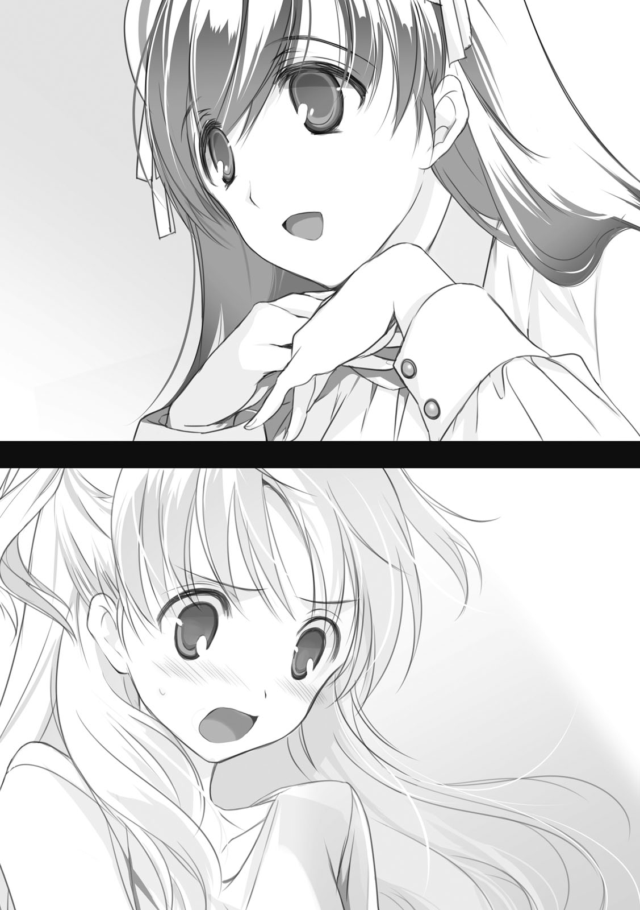
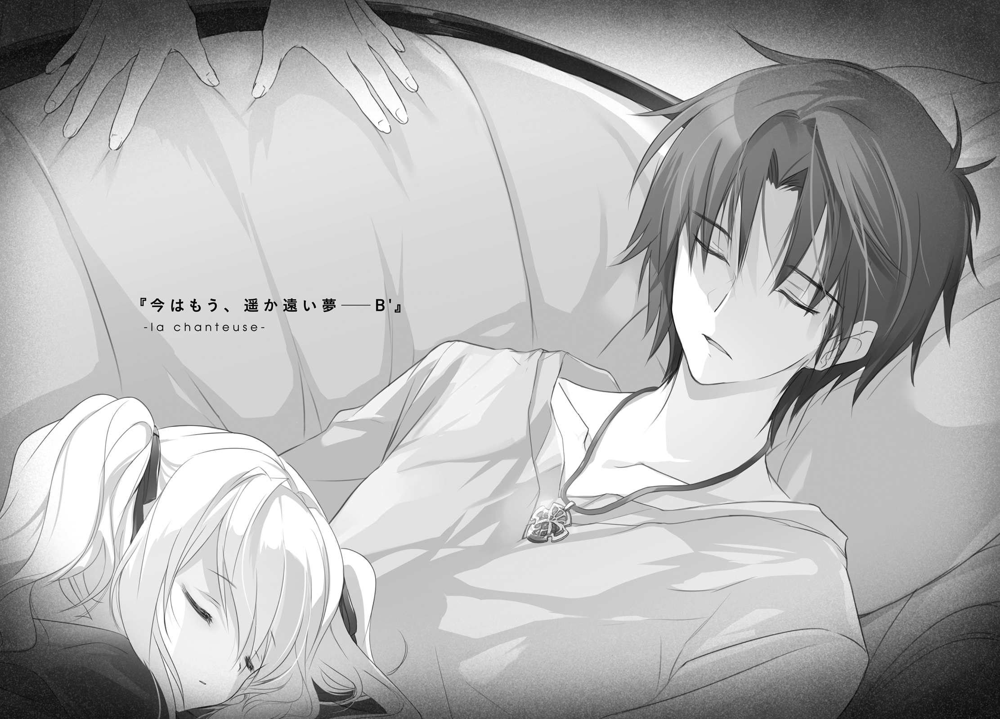

| 終末なにしてますか？ 忙しいですか？ 救ってもらっていいですか？＃０３ 【電子特別版】 | |
| 枯野 瑛 | |
終末なにしてますか？ 忙しいですか？ 救ってもらっていいですか？#03 【電子特別版】
枯野 瑛

角川スニーカー文庫
本作品の全部または一部を無断で複製、転載、配信、送信したり、ホームページ上に転載することを禁止します。また、本作品の内容を無断で改変、改ざん等を行うことも禁止します。
本作品購入時にご承諾いただいた規約により、有償・無償にかかわらず本作品を第三者に譲渡することはできません。
本作品を示すサムネイルなどのイメージ画像は、再ダウンロード時に予告なく変更される場合があります。
本作品は縦書きでレイアウトされています。
また、ご覧になるリーディングシステムにより、表示の差が認められることがあります。
決戦前夜。
せめて最後に、それぞれ会いたい人のところで過ごそうという話になった。
讃光教会認定敵性星神『エルク・ハルクステン』討伐のために集まった勇者様御一行は、そういう理由で、一時解散することになった。
「......なんでそれで、俺のとこに来るなんて話になんだよ？」
久々に会った恩師は、不機嫌そうな顔でそんなことを言った。
「だーってあたし、家族も恋人もとくにいませんしー？」
リーリァは、けらけらと笑いながらそう答えた。
帝都第六街区の片隅、騎士団の巡回ルートから遠く離れた貧民街。三歩歩くごとに一度は掏摸に遭えると評判の一画に、師匠の滞在している宿はあった。
一歩ごとにうるさく軋む床板。埃まみれでとても使えない暖炉。据え付けのランプは油が切れかけていて、ほとんど灯りの役に立っていない。これで一晩あたり銀貨五枚もとるというのは酷い話に思えるが、表に出ている看板の下部に刻まれた山羊頭の意匠にはそれだけの価値がある。つまり、この宿に泊まる者の安全と平穏は、この辺り一帯の顔役である組織、『紫山羊』によって保障されているということだ。
「いざ身内っぽい相手を探そうと思ったら、ししょーくらいしか思い当たらなかったわけですよこれが。いやー我ながら寂しい人生送ってるなー」
あはははは、と、リーリァはわざとらしく笑う。
師匠は謎の多い男だ。見た目は瘦身の男で、年齢はよくわからない......三十と言われれば三十に、六十と言われれば六十に見える。リーリァが初めてこの人物に会ったのは十年以上前のことだが、あの時からほとんど見た目は変わっていない。というか、むしろ若返っているようにすら見える。
年齢だけでなく、生まれも育ちも不明。そして、どこで身につけたものやら武芸百般を修めていて、帝都の学者たちが首を揃えても敵わないほどに見識が深い。
そんな師匠が、これまたわざとらしく、疲れたように肩を落とした。
「......お前の愛すべき兄弟子はどうしてた？」
「ヴィレム？ ゴマグに帰ってアルちゃんたちの顔を見てくるってさ」
「だったら、そっちについていけばよかっただろうが。可愛い妹弟子が頼めば絶対に断らねぇぞあいつは」
「あははは、相変わらず冗談がヘタだなあししょーは」
笑いながらも眉の間に思いきりしわをよせて、
「あの馬鹿相手にそんなことしたら、絶対に断らないだけじゃなくて、本当に家族みたいに扱われちゃうでしょうが」
声を低くして、脅すようにそう言った。
「そりゃそうだろうな。何か都合でも悪いのか？」
「たぶん、世界滅びるよ」
沈黙。
「何を捨ててでも帰りたい場所があって、けれどもう絶対にそこには帰れないことを知っている。あたしもそーだった。師匠もそーだった。歴代の先輩たちもみんなそーだった。理由はわからないけど、これが正規勇者の最低条件のひとつなんだよね？ そんなあたしが帰る家とか持っちゃったらやばいよね？」
「別に、はっきりとしたルールがあるわけじゃない」
「だとしても。あたしって、讃光教会からジキジキに世界一不幸な人認定されたからこそ、正規勇者なんて称号を持ててるわけじゃない。だからきっと、世界一幸せになんてなったら、どのみち一瞬で資格剝奪されると思うのよね。
もちろん、この溢れまくってる才能と実力だけでも、それなりのところまでは戦えると思うけどさ。相手が星神──誰かさんの同類となると、さすがにそれだけじゃ勝てるわきゃないし」
「いやお前、世界一幸せとかそんな簡単に」
「なれる自信あるわよ？ だってあたし、ただの寂しがりやだもん」
沈黙。
「前にししょー言ってたじゃない。正規勇者の強さに追随する者は誰もいない。ゆえに正規勇者は必ず孤立する──だったっけ？ 大間違いだったよ、あれ。
今のあたし、自分でもヒいちゃうくらい強いのにさ。いつまでもずっと、追いかけてくる奴がいんの。絶対に追いつけないって知ってるはずなのに、わかってないの。ちょっと振り返ったらさ、いつもそいつがいるの。どこの三流ホラーだよっ！ ってくらい、ずっとずっと、しつこく追いかけてくんの。孤独にさせてくんないのさ」
「そんなに嫌いか、あいつのことが？」
師匠が、呆れたように尋ねてくる。
リーリァは「んー」と虚空を眺めて、ヴィレムに関する言葉を自分の中から探す。
「そだね、わりとガチで大嫌い。大きくなっても頭の中が子供だし、いろいろ勉強してるくせに何をするにも体力任せの力ずくだし、師匠に会ったのがちょっと早かっただけで兄弟子ぶるし、昔はちょっと可愛かったのに背ぇ伸びちゃったし、察しが悪いわけじゃないくせに女心はさっぱりわかってないし」
「ひでぇな」
まぁ、確かに、自分でもそう思う。これは、かなり無理のある言いがかりだ。
けれど、仕方がないじゃないか。そうでもしていないと、リーリァ・アスプレイはあいつを嫌い続けていられない。そして、嫌い続けることを止めた瞬間に、たぶん、どうしようもないくらいに、堕ちてしまうだろう。
ヴィレム・クメシュは、周りにいる者が幸せではないことに耐えられないタイプの人間だ。しかも、わりと老若男女を問わない。だから、誰かに「寂しいからそばにいてくれ」と言われたとしたら、間違いなくそうする。仮にその誰かがリーリァ・アスプレイだったとしてもだ──めちゃくちゃ嫌な顔はされるだろうが。
そんなことになったら、たぶん、それだけで、自分はけっこう満たされてしまう。世界一の不幸者の称号を捨てることになる。そして、その後には、きっと。
「............」
きっと讃光教会が動いて、正規勇者にふさわしい次の人物を探し始めることだろう。
その先のことは、あまり想像したくない。
「──しょうがねぇな。消去法でもなんでも、最後の夜にわざわざ頼ってきた弟子を追い返すわけにもいかねぇか」
ばりばりと髪を搔きながら、師匠はぼろぼろの椅子にかけていたコートを摑む。
「長話に向いた部屋でもねぇし、続きは、飯と酒のある場所でだ。久しぶりに、お前の大嫌いな兄弟子の武勇譚でもたっぷり聞かせろ」
「うん、いいね。この辺りの美味しい店とか知ってる？」
「あまり期待すんな、まともな食事が出る店のほうが少ない」
ぎしぎしと鳴る床を踏みながら、立てつけの悪い扉に手をかけて。
「そういやリーリァ。お前、よく俺のいる場所がわかったな。最近の動きは組合同盟のほうにも報告してなかったはずなんだが」
「ん？ あ、そうそう。結構大変だったよ、うん」
......そうだ。正攻法では、師匠本人の足取りは全然わからなかった。
旧ディオネ騎士国名誉騎士にして元十八代正規勇者。これだけの有名人なのだから、少しでも人前で動けば、すぐ情報が入ると思っていたのだけれど。
だから、ここで師匠を見つけることができたのは、たまたまだった。
もともと自分は、別の人物を捜していたのだ。自分たちが先日叩き潰した反帝国の武装宗教組織の残党と、それをまとめて何か新たな企てを進めようとしているらしい危険人物。
その調査過程で浮かび上がってきた場所のひとつに、この宿があった。
そしてその宿の中に、なぜか、それまでどれだけ捜しても見つからなかった、師匠が滞在していた。
──偶然だと、思いたかった。大切な人のことを、無条件に信じたかった。けれど、この状況で人をまったく疑わずにいられるほど、リーリァは無垢でもなければ、無責任な立場にもなかった。
「あとさ、今の話で思い出したけど、ひとつ聞いておきたかったことがあったんだ」
「ん？ 何だ？」
息を吸って。
吐いて。
心を落ち着かせてから、尋ねる。
「真界再想聖歌隊の現指導者って、ししょーなの？」
ゆっくりと、師匠が振り返る。
言葉での答えは、返らなかった。その必要もなかった。師の目の中に宿る警戒の色を見ただけで、リーリァは、自分の予測が正しかったことを知った。
──そのことを喜ぶ気には、まったくなれなかったけれど。
１．星空の下のさらに下
遠い昔のことだ。地上には、生命が溢れていた。
木々が茂り、獣が駆け、人間族を始めとした多くの人々が生活を営んでいた。
その繁栄の時をあっさりとブチ壊してのけたのが、後の世にいう〈十七種の獣〉だ。どこからともなく現れたそれらが、地上にあったおよそ生命と呼べるもののことごとくを破壊し尽くした。
かつて地上に生きていた者たちは、すべてその姿を消した。
人間が滅び、竜族が滅び、土竜族が滅び、古霊族が滅びた。地上を離れ空の上へと逃れたごくわずかな者たちだけが、かろうじて、その命を繫いだ。
それから、五百年以上の時間が経った。
生きのびた者たちに残された最後の箱庭たる浮遊大陸群は、まだ沈み切っていない。繰り返される〈獣〉の襲撃を、今のところは水際でなんとか凌ぎきっている。
人間族たちの遺した、願いの結晶たる聖剣の力を借りて。
儚い命を持つ少女たちを、次々と遣い潰しながら。

ごうんごうん、と絶え間なく響く呪燃炉の駆動音が、下腹を揺さぶり続けている。
これ絶対に健康に悪いよな、などと考えながら、ノフトは窓辺を離れた。
窓の向こうは塗りつぶしたような真っ暗闇。鏡のようになったその向こうには、ひねくれた目つきの子供が一人、不機嫌そうに唇を尖らせてこちらを睨んでいるのが見えるだけ。睨みあっていても、まったく楽しくなかった。
「あーちっくしょ、ヒマだ！ ヒマだヒマだ！」
簡易寝台に背中を投げ出して、足をばたつかせる。駄々をこねて何かがどうにかなるわけではないと承知していたが、それでも体が動いてしまう。
この飛空艇──地上調査艇『サクシフラガ』は、現在、地表より五十マルメルほど上に滞空している。
地上の脅威である〈十七種の獣〉は、いずれも自由に空を飛べない。これだけの高さを確保していれば、まず襲われる危険はないという寸法だ。
しかし、安全は時として、そのまま退屈に通じる。
「地上は浪漫と冒険で溢れてるんじゃなかったのか！ 百の〈獣〉に囲まれた人間族の祭壇に鷹翼種のお姫様が囚われてて、王子様の助けを待ってるもんじゃなかったのか！ 灰色の砂をちょっと掘ったらお宝がざくざくで、山賊王の亡霊に取り憑かれたりするもんじゃなかったのか！ なんでここには砂と石しかないんだ、お宝はどこだ亡霊はどこだ〈獣〉はどこだ！」
「ノフト、うるさいです」
静かな声で、たしなめられた。
首だけを回してそちらを見ると、隣の簡易寝台に腰かけて、ラーントルクがなにやら本を読んでいた。
「何それ」
「昨日、砂の下から出てきた出土品。退屈しのぎにはなるかなと思って、倉庫から黙って借りてきました」
ラーントルクの声は、いつもいつも、ご機嫌ななめに聞こえる。他人を突き放すような言葉もよく使う。そのせいで、倉庫の年少組には怖がられていたり嫌われていたりするのだけれど......まぁ、付き合ってみればそんなに悪いやつではない、とノフトは思う。
いいやつだとも思わないけれど、ま、それはお互い様だ。
「古文書ってことじゃん。読めんの？」
ラーントルクに背後から抱きついて、肩越しに覗きこんだ。
それは、確かに本だった。少し色こそ変わっているものの、装丁はしっかりしているし、脆くなっているようにも見えない。よほど保存状態がよかったのだろうか。
ページの中身も目に入ったが、案の定というか何というか、意味のわからない記号が並んでいるだけにしか見えない。
「ん......単語がすこしわかるだけですね」細い指が簡易糧食のビスケットをつまむ「内容を正確に理解できるほどではないです。ただ、単語と単語を繫ぎ合わせて内容を想像するだけの、暇つぶしのパズルとしてはそこそこ楽しめます」
背中にのしかかってきた体重に、ラーントルクは少しだけ嫌そうな顔をする。
「へえ。何が書いてあるのさ？」
「想像しているだけと言っているでしょう？」
「いいから、その想像を聞かせろよ。古代の記録に触れて想像力の翼を広げるとか、いかにも浪漫っぽくていい感じじゃん」
はぁ、とラーントルクは呆れた顔でため息を吐いた。
ノフトはよく知っている。こいつのこの表情は、なんだかんだ文句を言いながらも、根気よく自分のわがままにつきあってくれる時の顔だ。
「──人間という種は存在を始めてはならなかった。それを創造したのは、星神の最初の、そして最大の過ちである」
「何だそりゃ」
「だから、この本の内容を想像したらそうなるんです。序文を眺めた限り、書き出しは大体そんな感じの意味だったようですね」
「はー。そんなもんが人間族の遺跡から出てきたってことは、連中にも、自分たちが悪だって自覚はあったのか」
「いえ、これは当時の人間族たちにとっても危険思想扱いされていたもののようです。いまの浮遊大陸群で言う至天思想のようなものでしょうか」
「あー」
至天思想。聞いたことがある。
いわく、我々がいま住んでいる浮遊大陸群は通過地点にすぎない、我らは穢れた地上からより遠く離れ、あの遠き星空に至らなければならないのだ......とかそんな感じの考え方だ。
唱えているだけなら実害も少ないのだが、その中から飛空艇の盗難やら違法改造やらに手を染めるやつらが少なからず出てきているため、多くの浮遊島で警戒対象になっている。
「それから──」ラーントルクの細い指先がページの上をなぞる「獣は、人に、真実の、封じ......たぶんこれは逆ね。人は、獣を解き放たれ、灰色の真実で満たされた世界を......じゃなくて、世界を満たす......？」
「おお」
ノフトは、ぐいと身を乗り出す。必然的に、ラーントルクの背中に体重がかかる。
「ノフト、重いです」
「それって地上が〈獣〉に滅ぼされるって話だよね。凄いな、予言書じゃないか」
「どうでしょう。これは大量生産された本の中の一冊のようですし、童話か教科書か教義書あたりのように思えます。ならば予言ではなく、この本の内容に合わせて〈獣〉を生み出したと考えたほうが自然でしょう」
「なるほど」
納得ついでに、ノフトは腕を伸ばして、ラーントルクがつまんでいたビスケットを一枚拝借した。ぼそぼそしていて決して美味しいものではないが、寂しくなった口元をごまかす程度の役には立つ。
「この一文には、まだ続きがありますね。ええと......十六の破片が、真なる世界の再想と、終わりの救済を、歌い紡ぐ、海と母、恐怖、甘え、完成した心、ええと空隙、暁天......？」
なんだそりゃ。ノフトは首をかしげる。
文章になっていない。関連性があるのかないのかもよくわからない単語の羅列。
「想像力の仕事はどこいった」
「いえ、ここは本当に単語が並んでいるだけなんです。想像するもなにも、そもそも解釈をはさむ余地がなくて──」
扉がノックされた。
眉をひそめ、ノフトはラーントルクから離れた。
自分たちの立場は特別だ。この飛空艇の中にいる者は皆、そのことを知っている。近づいてくる者も関わろうとする者もいない。だから、この部屋を訪れる者も、いるはずがない。例外があるとしたら、この飛空艇が、自分たちでなければ対応できないくらいのとんでもない危機的状況に陥っている時だけのはずだ。
けれど、それにしては、艇が静かすぎる。耳を澄ましてみても、聞こえるのは呪燃炉の駆動音だけ。悲鳴も怒号もサイレンも砲撃の音も、何ひとつ聞こえてこない。
「勝手に入ってきな、鍵はかかってないよ」
警戒しながら、扉の向こうに声をかけた。
ノブが回り、
「──船団護衛の待機室ってのはここかい？」
緑鬼族の男が、のっそりと姿を現す。
頑丈さ重視で実用一辺倒の服装に身を包んでいる。とても軍人には見えない。かといって商売人といった風でもない。
「〈獣〉の襲撃に備えた護衛ってのと話したいんだけどよ。......ん、ここにいるのはお嬢ちゃんたちだけか？」
「何者かは知りませんが、すぐに出ていきなさい」
冷たい声で、ラーントルクが言い放つ。
「船団規定で、調査隊の構成員と私たちとの接触は禁じられています。この船室に近づくこと自体が許されていなかったはずですよ。見張りは何をしていたんですか」
「ああ、そこのあいつなら、昔、カードでの貸しが溜まっててな。ちょいと頼んだら余所見してくれたぜ」
にかっ、と人好きのする笑顔を浮かべて、緑鬼族は躊躇もせずに、部屋の中へと入り込んできた。
「とと、自己紹介を忘れてた。俺はグリック、民間のサルベージャーなんだが今回はオルランドリに雇われて、今日からこの調査隊に合流してアドバイザーみてーなもんを任されることになった。まぁ、本来そーゆーガラでもねーんだけどな、なりゆきってやつだ。
......んで、お嬢ちゃんたちの名前は？」
「言うかよ。あと聞いてないし」
ノフトは膝の上に頰肘をついて、しっしと手を払う。
「雇われ人だというならなおさらのこと、あまり商会の意向に反する行動をとるべきではないのでは？」
それにつきあってか、ラーントルクも同じく手を払う。
「それはそれ、これはこれってやつだ。これから自分の足元を任せることになる相手に、挨拶くらいはしておきてーだろ？」
「......妙なことを言うんだな、おっさん」
ノフトは目を細める。
「ここにいるのはあたしたち二人だけ。見ての通り、徴無しで女で子供だ。そのあたしらが、世にも恐ろしい〈獣〉から船団を護衛するような、とんでもない戦士にでも見えてんのか？」
「そいつは、正直今でも半信半疑つーか、できれば信じたくねーつーか。でもまぁ」
くい、と緑鬼族は壁際に立てかけてある大剣の包みを指さす。
「遺跡兵装を持ってるお嬢ちゃんたち、ってのが聞いてた話と一致しすぎてるんでな。黄金妖精、だったか？」
「なんだ、そこまで知ってんのか」
「つい先日、たまたま聞く機会がな......ちなみに俺はおっさんって年じゃねーんだが」
「少なくともあたしらよりゃだいぶ上だろ」
そりゃそうかもしれねーけどよ、とグリックは納得のいかない顔。
「ああそうだ、いちおう土産も持ってきたぜ。もうずっと地上にいるんなら、ろくなもん食えてねーだろ。ほれ、31番島を発つ寸前に港の屋台で買ってきたミートパイだ」
取り出された包みが、テーブルの上に置かれた。
ノフトの肩がぴくりと揺れて、視線が包みを射貫き、喉からつばが湧きでて、胃がきゅるりとせつなく音を立てた。緑鬼族の言ったことは正しい。調査隊の護衛として浮遊大陸群を離れて一月強、口にしているのは干し肉だのビスケットだの、保存が利いてかさばらなくて、ついでに味気のないものばかりだ。まともに料理された食事が恋しくてたまらない。
「長期にわたって地上に降りるならメシには気を遣えってなぁ、サルベージャーにとっちゃ常識なんだがな。この調査計画を組んだやつらはその辺がわかってねーよ。
......ああ、日持ちするように強めの香草を入れといてはもらったけどな、早めに片付けてやってくれ。できれば今日中にな」
ごくり、とノフトの喉が鳴る。
が、ここでそんな食欲などに屈するわけにはいかない。あらん限りの精神力を集中して、包みから視線を切る。そして、涙がにじみそうなその目で、そのまま緑鬼族を睨みつけた。
「冗談じゃないね、そんな簡単な賄賂なんかで屈するようなあたした──」
「いただきましょう」
「──ちじゃないよ、っておぉぉいラァァン!?」
あふれだす涙をそのままに、隣の親友に目を向ける。
「なんでそうなるんだよ!? 受け取っちゃいけないだろそういうの！」
「だって、おいしそうな匂いがしていますし。ずっとビスケットとかばかりだから、こういう誘惑には抗えません」
「気持ちはわかるし全身全霊で同意するけど、だからこそダメだろぉぉ!?」
「緑鬼族の方は私たちと味覚が大きく違いますし、ここで突き返してもミートパイが無駄に傷んでいくばかり。それよりは......」
視線を鋭くして、ラーントルクは笑う。
「ちょうど私たちも暇を持て余していたところでもありますし、お話につきあうくらいは、いいんじゃないでしょうか？」
......ああ。こりゃだめだ。
もう自分が何を言ったところで意味はないだろうと、ノフトは悟った。
一度ラーントルクがこの悪役顔を見せたならば、その意志を変えることは、もう何者にもできない。半年ほど前、あの意地っ張りクトリとさんざん口げんかをやらかした時ですら、最終的にはクトリが根負けするという結果になったのだ。
クトリ。
......思い出したくない名前を思い出してしまった。ノフトの内心で、じくりと何かが痛む。あいつはノフトの同僚であり、うっとうしい先輩であり、ケンカ友達であり、そして二度と会うことのできない家族だった。
自分たちがこうして地上でうだうだしていた間に、予見されていた日付は過ぎてしまった。空の上では特大の〈深く潜む六番目の獣〉の襲撃が起きて、クトリが迎撃に向かい、そして命と引き換えに敵を討ったことだろう。
予見されていた戦いの中で、予定通りに命を捨てる。それは黄金妖精としての本分だ。怖れる必要も、悲しむ必然もない。
ただ、自分たちがこの地上でのぐだぐだを終えて空の上に帰っても、あの生意気で口うるさい蒼髪の女がもういないのだということだけは、少し寂しい。
「ノフト？ どうしたの？」
「......何でもない。ラーンがそう言うなら、好きにすればいい」
簡易寝台に、背中を投げ出した。
ついでに、さりげなく二人から顔をそらした。今の表情は見せたくない。
「食べちゃいますよ、ミートパイ」
「半分とっとけ」
「しょうがないですね、わかりました......ええと、グリックさんでしたか。アドバイザーに呼ばれたということは、サルベージャーを続けて長いのですか？」
「ま、そーだな。短いやつよりは長くやってる自信あるぜ」
「では、〈獣〉に会ったこともありますか？」
ぴくり、とノフトの背中が震える。
「そーだな......」グリックは考え込むように指でこめかみを押さえ「〈二番〉と〈三番〉と〈六番〉には襲われたことがある。遠目に見ただけのものも含めるなら〈五番〉と〈十一番〉も数に入れられっかな」
「そんなに!?」
がばり、とノフトは身を起こす。涙はどこかにひっこんだ。
「あたしたちでも、〈六番目の獣〉しか相手したことねーってのに!?」
「お嬢ちゃんたちみてーに、正面から戦ってるわけじゃねーからな。毎回ずたぼろになりながら、命からがら逃げ帰ってんだ」
「──それでも、私たちなどより、よほど〈獣〉という存在に通じていると考えても良いわけですね」
「通じるってほど詳しいつもりもないけどよ。つまりあれか、〈獣〉がらみで俺に聞きたいことでもあるってのかい、青いお嬢ちゃん」
「ええ......」
ぺりぺりとミートパイの包みを開けながら、静かな声でラーントルクは問う。
「奇妙な話だと、ずっと思っていたんです。
地上を追われてから五百年。私たちはずっと、〈十七種の獣〉という存在に翻弄されるまま生き続けてきた。追いすがる〈獣〉の牙から逃れ続けてきたその軌跡が、そのまま、浮遊大陸群の歴史となったと言っていいくらい。
にもかかわらず──私たちは、その〈獣〉のことを、あまりにも知らなすぎる」
まーた始まった、とノフトは思う。
ラーントルクは、少なくともノフトよりは、頭がいい。
頭がいいというのは、考えること自体に慣れていたり、考える題材を見つけるのが上手かったりするということ。あるいは、何事につけても自分が納得できる答えを探さずにはいられなかったりするということだ。
考えても仕方のないことなんて、考えないに越したことはないはずだろうに。
「......彼ら〈獣〉とは、そもそも何なのか。あなたの考えも聞いてもいいでしょうか？」
考えなくてもいいようなことを考えて、知らなくていいことを知りたがって。
そんなラーントルクの目が、まっすぐに、グリックの琥珀色の目を見つめていた。
２．夢の終わり、夢の始まり
浮遊大陸群、68番浮遊島の森の奥に、その「倉庫」はある。
書類上、そこは護翼軍が所有している施設であり、同じく護翼軍が所有する重要な兵器がいくつも格納されているとされている。これは少なくとも噓ではないが、実情を正確に表現しているとも言いがたい。
そこに建っているのは、ゆうに五十名近くを住まわせられる立派な兵舎。そして、そこに格納されて──あるいは、そこで生活しているのは、三十名を超える、年端も行かない少女たち。ついでに言えば、管理維持費はほとんどオルランドリ商会から出ているし、実質上の管理者はオルランドリの職員だし、そもそも地図の上には堂々とオルランドリ商会第四倉庫と記載されたままであったりしている。
そんな倉庫に、今日も朝が来た。
自己主張の激しい夜明けの光が、カーテンを通して部屋の中を照らしている。ちーちこぱっぱと、小鳥の声がやかましい。
ベッドの上に上半身を起こして、クトリはぼんやりと天井を見上げていた。
記憶に霞がかかったようになっていて、昨夜までのことがうまく思い出せなかった。
「んー......」
指の背でまぶたを軽くこする。
ぶる、と背筋が勝手に震えた。冬の朝は冷える。あまり長いこと寝間着のままぼんやりしていると、風邪をひいてしまうかもしれない。
起きようかな。
ぼやけたままの頭で、今日の予定を思い出そうとする。けれど、うまくいかない。出撃の予定はしばらくなかったような気はする。ならば、日課の訓練教程をこなせばあとは自由時間のはずだ。それはありがたい。使える時間の限りを尽くして、許されるすべての自由を費やして、今は彼の背中を追いかけていたい。
──彼。
黒髪の青年の姿が脳裏に浮かんだ。
それがきっかけになって、昨夜の記憶が、薄ぼんやりと蘇った。
「......ぅあ」
そうだ。自分は、倒れていたのだ。
前世の侵食にやられ、おそらくは二度と目覚めないはずの眠りについていた。そこからなぜか目覚めることができて、みんなの前でヴィレムにすがってぼろぼろと泣いて、おなかが鳴って、気を利かせてくれたラキシュが持ってきてくれたオートミールをすきっ腹にかっこんで、その直後に猛烈な眠気に襲われて、ぐうと寝た。
「うぁぁぁぁ」
なんだそれ。
自分はあれか。食欲と睡眠欲だけで動いている生き物か何かか。本能の求めるままだけに動くのか。衆人環視の前でヴィレムにすがりついていたのも本能の一環なのか。理性はどこに消えたのだ。情けないにも限度というものがある。顔から火が出そうになる。
でも。
食欲も睡眠欲も、生きていてこそのものだ。この体が、これからも生き続けようとしている証だ。そう思えば、前向きな気持ちになれなくもないような気がする。いや、もうこの際そう思いこむことにしよう。そうしないと精神的に死ぬ。
ぺしぺし、と火照る頰を軽くはたいて、改めて周りを見る。
ここは、自室ではない。医務室だ。
廊下でいきなり眠ってしまった自分を、誰かが運んでくれたのだろう。その誰かというのはたぶん、いやほぼ間違いなくヴィレムであろうとは思うけれど、深くは考えないようにしよう。顔がにやける。
クトリ・ノタ・セニオリスは最年長の妖精兵士で、大人の女なのだ。ちびっこたちの憧れでいなければならないのだ。既にいろいろ台無しになってしまった気もするけれど、だからこそこれ以上の失態は演じられない。
起きよう。そして、誰かに見られるより先に冷水で顔でも洗ってこよう。そう思って足を床に下ろしたとたん、
「あら？」
扉が開いて、赤毛の女が入ってきた。
「今度はちゃんと起きられたみたいね、よかった」
背が高い。年はクトリよりそこそこ上、だいたい二十前後といったところか。明らかに大人の女性であるはずなのに表情はどこか幼く、それに合わせているのか服装はフリルのついたブラウスとエプロン。
「ヴィレム、すごく心配してたわよ？ また長く寝てるんじゃないか、今度こそ二度と起きなかったりするんじゃないかって。起きるまでそばにはりついてるって言って聞かないから、無理やり追い払っちゃった」
ぱたぱたとスリッパのかかとを蹴りあげながら、女は医務室の中に入ってくる。カーテンを開けて、花瓶の水を換えて、カレンダーの日付をひとつ更新。
「ま、すごくいい笑顔で寝てたし、呼吸脈拍その他もろもろも大丈夫そうだったから、とりあえず医務室に移ってもらったんだけど。どう？ 気分とか悪くなってない？」
「え？ あ、えと......」
自分が話しかけられているのだ、ということが一瞬理解できなかった。
ぱちくり、とまばたきをひとつ。
「ナイ......グラート......？」
「え？」
「あ、ううん。何でもない」
慌てて両手を振る。
そうだ。この女の名はナイグラート。オルランドリ商会から派遣されている、この妖精倉庫の備品管理係という役職を持つ、幼い妖精たちの世話係。
「どうしたの？ 寝惚けてる？」
「うん、そうみたい......」
どうにも頭がうまく回っていない。朝の光もヴィレムの名も、惰眠をむさぼりにむさぼりまくった頭を覚醒させるにはまだ足りなかったらしい。
「気分は悪くないけど、ぼーっとしてる。ちょっと顔洗ってくるから──」
「先輩っ！」
半開きだった扉が、派手な音とともに全開きになった。
「先輩おばけじゃない先輩ぃぃぃっ！」
緑色の髪の小さな少女が、矢のように飛び込んできて、クトリにすがりつく。
「うひゃっ!?」
「こら。病み上がりの先輩にあまり無理をさせるべきじゃない」
その後ろから、紫色の髪の少女が、ひょっこりと姿を現す。
「......ティアット。パニバル」
確かめるように、二人の名前を呼ぶ。
自分の腹のあたり、ひっしとしがみつく少女の後ろ頭を、ぼんやり見下ろす。
「すまない、クトリ先輩」パニバルが頭を下げて「先輩が壊れていた間、ティアットはずっと、落ち着かなかったようなんだ。昨日の夜も、あれから結局ほとんど寝られなかったらしい」
「そうなの？」
説明を受けて改めてティアットに尋ねてみるが、返事がない。
つついてみても、反応がない。
ひっくり返して確認すると、いつの間にやら、ぐっすり寝ていた。
「なるほど」
夜に眠れなかった、というのは間違いなく本当のことらしい。そこまで思われていたことは嬉しいというか、微笑ましいというか、申し訳ないというか、愛おしいというか、
「誰かの死を思うと落ち着かなくなる、か」
──そして、少しだけ、悲しいというか。
「きみも大きくなっちゃったんだね、ティアット」
黄金妖精は、死を理解する前に死んでしまった赤子の魂が迷い出たものなのだという。だからそれは、厳密には生命を持った存在ではない。そして、それゆえに、死を恐れる本能が働かない。他者の死を悲しむという心の動きも持ち合わせない。
けれど、それは、幼いころの話。
妖精として年を重ねていくうちに、心は変化していく。体が大人に近づくにつれて、剣を握り戦場に立つようになるころには、それなりに死を理解できるようになる。それが取り返しのつかない喪失であり、辛く悲しいことなのだと頭が判断するようになるのだ。
他の種族で言えば、それは成長だ。喜ばしいことだ。
けれど黄金妖精に関して言えば、それは辛いことだ。戦場で消費されるために生まれ、育まれる命。ひとつ消えるたびにいちいち嘆いていたのでは、心がもたない。だから多くの妖精たちは、自分の心の中に生まれたその感情に、気づかなかったふりをして目をそらす。要らないものとして否定する。乗り越えるべきものとして抑えこむ。
ティアットが選ぶ道がそのどれでもなく、慣れない感情に正面から向き合うことであるなら、きっとこれから先、この子はたくさん、辛い思いをするだろう。
「そこは素直に、成長を喜んであげなさいな」
驚いて、顔を上げた。ナイグラートが優しく笑っている。
「いまわたし、もしかして、考えてたこと口に出してた？」
「そのくらいわかるわよ。私が何年ここであなたたちを見てると思ってるの？」
......ああ、そうか。
いまの自分がティアットに対して感じている気持ちは、自分の先輩たちが自分に対して抱いていたものと同じもの。そしてナイグラートは、そんな自分たちを、ずっとすぐ傍で見守ってきたのだ。
「とりあえずティアットは、医務室に寝かせておいてあげましょうか。クトリは......顔洗ってくるんだったかしら？」
「あ、うん」
「だったら、ついでに食堂で朝ごはん食べて、みんなに元気な顔を見せてあげてきなさいな。で、その後はまたここに戻ってきて」
ちょいちょい、と指先で床を示す。
「見たところ元気そうだけど、油断はできないものね。ここにある機材じゃできることは限られてるけど、簡単な健康診断しましょ」
「あ......」
そうだ。それはとても大事なことだ。どうして自分自身でそこに至らなかったのだろう。やっぱり頭が働いていない。目を覚ましてこないといけない。
「そうね、そうする」
しがみついたまま寝こけているティアットを引きはがし、ベッドに横たえる。ぱんぱん、と自分の頰を軽く張って気合いを入れる。
「......ん？」
パニバルの、不思議そうな声。
「心境の変化か何かか？」
「え？」
指さした先は、クトリ──の、髪のひとふさ。
蒼い長髪の中に、そのひとふさだけ、赤い髪が混じっている。
「え、何これ」
こすってみるけれど、色は落ちない。引っ張ってみたけれど、付け毛の類いでもない。窓の光に透かして見ても、どうやらこれは間違いなく自分の毛の色であり、何かの染料で色が変わっているわけではないらしいとわかるだけだった。
「今回の昏睡の後遺症かしらね。そんなに心配は要らないと思うわよ？ 季節の移り変わりとか成長とかで毛や髪の色が変わる種族は珍しくないし」
ナイグラートが口をはさむ。
「綺麗な色だし、染めたりしないでそのままでもいいんじゃないかしら」
そういうものだろうか。
もともと自分の髪の色はそれほど好きではなかったし、変わってしまうなら変わってしまうで、それは構わない。ひとふさが赤くなった程度のことなら、手持ちの服が似合わなくなる心配もいらないだろう。それに、
「きっとヴィレムも、無理に飾らないままのあなたのほうがいいって言うだろうし」
「お願いだから、心、読まないで!?」
抗議の声は、半分以上、悲鳴になっていた。
わたしは何なんだろう、とクトリは考える。
答えは単純なようでいて、ちょっとだけ複雑だ。
黄金妖精。死にそこねた死霊。生きていない生命。その存在のすべてを擲って、正しく生命を持つ者たちのために戦う兵器。
適合した遺跡兵装はセニオリス。年は十五。発生したのは94番浮遊島の森の中。
......片思い歴、もうすぐ一月。
３．ただいま帰りました
朝早くから市場に行って、食材を買い出ししてきた。
その戦果、ひとかかえほどもある麻袋の中身は、大量の小麦粉。バター。卵。牛乳。砂糖。それと少量の、蜂蜜、ナッツ類、乾燥させたフルーツ。
木漏れ日が照らす中、ヴィレム・クメシュは、森の中の小道を歩いている。
申し訳程度に敷かれた石畳は荒れ放題で、隙間という隙間からは色々な雑草が顔を出している。歩きやすいとはとても言えないが、しかし少なくとも、これを辿って歩いている限りは道に迷う心配はない。
「あのあの、その袋、重かったりしませんか？」
隣を歩くラキシュが、気づかうようにこちらの顔を覗きこんでくる。
「大人をナメんな、この程度じゃ荷物のうちに入らねぇよ」
答えながら、両手で抱えた特大の麻袋を持ち直す。
「なんだったら、お前もついでにかついでやろうか？」
「わわ、あのその、それはいいです、遠慮します」
突きだした両手を慌ててぱたぱたと振る。
「わたしはその、この道、アルバイトで慣れてますから」
この少女たち──妖精たちは名目上、軍の所有する『秘密兵器』であり、その自由は大きく制限されている。何らかの作戦中でもなければ、この68番浮遊島を離れて行動することも許されていないほどだ（隣の浮遊島まで自前の翼で飛んでいく程度なら黙認されていたりもするが）。
だが、その一方で、68番浮遊島の中でであれば、けっこう自由に生きることが保証されていたりもする。
「パン屋のアルバイト、もう、長くやってるのか？」
「えと、もうそろそろ半年くらいです。はじめのうちは失敗ばっかりだったんですけど、最近は店長にほめられることもあるんですよ」
「ほう」
あの市街地にあるパン屋は、気難しそうな獣人の中年男がやっている。地顔なのかいつも不機嫌そうな顔をしていて、あまり人を褒めるようなタイプには見えなかったのだが。
「朝のパン作りだけじゃなくて昼間の店番も手伝ってほしいとか、いっそうちの子になってほしいとか、言われました」
「ほう」
「......あ、あの、ヴィレムさん、どうしました？ 顔、怖いですけど」
何でもない。大丈夫。自分は冷静だ。そんなあからさまな社交辞令を本気にとったりはしない。ああ、しないとも。それはそれとして、後日一度、あのパン屋には改めて挨拶に行っておくべきかもしれない。
「まあ、それはそれとしてだ。よくアルバイトの許可なんて出させたもんだな。軍人に副業を認める軍隊なんて、普通ないぞ？」
厳密には軍人ではなく兵器である。そして、兵器に副業を認める軍隊も、やはり普通に考えてありえないと思うのだ。......とはいえ、ヴィレム自身、アルバイトで軍人をしているというややこしい身の上だ。あまり強くその辺りを追及できる立場でもない。
「軍のえらいひと......ヴィレムさんの前の管理者のひとは、渋い顔してたみたいです。でも、ナイグラートさんが説得してくれました」
「あー......なるほどな」
この少女たちは名目上、軍の所有する兵器だ。しかし実質上は、オルランドリ商会が保有する私的財産だ。軍から派遣されてくる管理者はお飾りでしかなく、実際の管理は商会が派遣している世話役が行っている。つまりこの場合、ナイグラートだ。彼女がそうしたいと望めば、軍の管理者が多少嫌がったところで、抗いきれはしないだろう。
「あ......ヴィレムさんも軍人ですよね。こんなのいけないって思いますか？」
「ん？」
「その、軍の兵器でしかないわたしたちが、働いて普通にお金を稼ぐのって......」
「あぁ、そういう話か」
確かに、軍服に身を包んだ立場上、自分も渋い顔をするべきなのかもしれないが。
「いいんじゃねぇか？ 子供がやりたいことを見つけたって言うなら、応援するしないはさておいて、少なくとも邪魔はしないのが大人の役目だ。機密を売るとか備品を横流しするとかじゃなけりゃ、反対しやしねぇよ」
「わっ......本当ですか！」
わかりやすく、ラキシュの表情が輝いた。
「あの、わたし、ヴィレムさん大好きです。妖精には親とかありませんしよくわかっていませんけど、もし『お父さん』がいたならこんな感じのひとがいいなって、そう思ってます」
大好き、か。
素直に嬉しいと思えて、真正面から受け止めることのできる、好意の言葉。
「俺はもう、半分くらいは、お前らの親のつもりでいるんだがな」
「そうですか？ えへへ」
明るい笑顔で、ラキシュは照れる。つられてヴィレムも笑う。でも、
「......あ、でも、そうしたら『お母さん』もいるのかな......ナイグラートさんのことは大好きだけど、やっぱりヴィレムさんにはクトリ先輩が......」
なにやらぶつぶつと怖いことを呟き出したことには、いつものように、気づかなかったことにしておきたい。
ナイグラートは、いつものエプロン姿の上から、どこから引っ張り出してきたものやら、ぶかぶかの白衣を羽織っていた。
「総合学術院で基礎医術と調理の免状をとったときに一緒にもらったの」
そんなものを持っていたのか、と少し驚く。
医術と調理。そのどちらも、この妖精兵舎の世話役を務めるにあたって極めて重要な技能だ。その両方を修めた才媛だからこそ、ナイグラートはたった一人で、ここの兵舎の管理を任されていたということか。
「白衣も着て気合いも入れたし、今回の健康診断は、ちょっと本格的にやっちゃうわよ？」
そして、宣言した通りの、ちょっと本格的な検査が始まった。
全身の打診触診に始まり、目もとに灯りを近づけられて瞳の動きを確かめられたり、検査用の薬を飲まされ気分を聞かれたり、少量ながら血を抜かれたり、「少し肉をかじってみればもっといろいろわかると思うんだけど」などと冗談を言われたりした。
「うーん......」
データをとって、カルテに書きつけて、また次のデータをとる。そんな作業を続けているうちに、ナイグラートの表情は驚愕と困惑を混ぜ合わせたような、ややこしいものになっていった。
「もしかしてわたし、何か面倒くさい病気にかかってたりしてる？」
訝ってクトリが尋ねると、
「んー、そういうのじゃないの。そういうのじゃないんだけど、ね？」
これまたややこしい言葉だけが返ってきた。
一通りの検査が終わった。
ナイグラートは、両手で頭を抱えて、机に突っ伏していた。
「......どういうこと？ 何があったの？」
脱いでいた上着を着直しながら、クトリは尋ねる。
「粉末純化銀の反応が、陰性だったわ」
むっくりと身を起こしながら、ナイグラートはそう言った。
「──えと。どういう意味？」
クトリは、おずおずと尋ねた。
銀は魔を祓う力がある、という伝説は聞いたことがある。吸血鬼を寄せ付けなかったり、喰人鬼の無尽の生命力を断ち切れるだとか、そういった言い伝えを数えればきりがない。
しかし実のところ、あれはほとんど全部、迷信なのだという。
実際の銀は、脆くて不安定な金属でしかない。毒素や瘴気にすぐに反応し、黒く変質してしまう。しかし逆に言えば、そういった危険な異常を見つけ出すためのツールとしては重宝する。重くて使いにくい銀の食器が金持ちの間で流行しているのは毒殺を警戒しているからだとか、そういうアレだ。
しかし、それとこれと、今はどういう関係があるのか。
「純化銀は特別な灰を使って加工した銀なんだけど、通常の毒素とかじゃなく、歪められた死に反応して色が変わる......簡単に言えば死霊や屍鬼の類いを見つけるための薬剤なのね」
「死霊」
ぽつり、呟く。
少し考える。
「えっと......それって、どういう意味？」
ごくり、とつばを飲みこんでから、もう一度尋ねる。
「......まさか、本当に、そういう意味なの？」
「そういう意味よ、もちろん。何がどうしてこうなったのかは全然わからないけど、結論と結果だけをまとめるなら、そうとしか言いようがないもの」
手にした試験管を軽く振る。中身の白銀色が、さらさらと小さく揺れる。
「知っての通り、黄金妖精は一種の死霊よ。だから、あなたたちの血をこの試薬に混ぜたら、一瞬で真っ黒になるはずだったのよね。それがまさかの無反応、となったら結論はひとつしかない」
彼女の口にする理屈はシンプルで、だからこそ、疑問の余地もない。
「つまり、いまのあなたは、黄金妖精じゃない」
「......ちょっと待って。話が吞み込めない。
自分の種族って、普通、生まれつき決まってて、死ぬまで変わらないものよね？ ある日いきなり『喰人鬼やめます』とか言い出して役所に行ったら次の日から別の何かになれるとかそういうこと、ないわよね？」
「なんで喩えが喰人鬼なのかは気になるけど、一般的にはそうね」
「じゃあ、どうして」
「理由なんてわかんないわよ。言ったでしょ、結論と結果だけをまとめたらそうなるってだけの話なの。もっと細かい話は、専門の医者に診てもらわないとなんとも言えない」
「でも、それじゃ、わたし」
遺跡兵装──またの名を聖剣──は、既に滅びた種である人間族にしか扱えない超兵器だ。しかし、「人間族の道具を用いて仕事を代行する」存在として生まれる黄金妖精は、あくまで代行としてだが、まるで人間族であるかのようにこの古代兵器を振るうことができる。
それが、妖精たちが対〈獣〉の決戦兵器としてこの妖精倉庫に置かれている理由だ。
「そうね。あなたはもう、遺跡兵装に直接触るのもやめといたほうがいいかも。何が起こるかわからないから。
......脅しじゃないわよ。人間族からかけ離れた種族の者が遺跡兵装に触れたら、それだけで生命に関わりかねないのは知ってるでしょ？」
知っている。だから、爬虫種の兵士たちのほとんどは、自分たちに近づこうとしない。ライムスキンほどの距離で接してくれる胆力の持ち主は、ごくごく一部に過ぎない。
「今のあなたも徴無しだし、人間族からの距離がそう離れたようには見えないけど、外見だけで決めつけられるものでもないから」
わかっている。万が一がありうる以上、無駄に危険を冒すことはできない。
でも。
クトリ・ノタ・セニオリスは、遺跡兵装セニオリスに適合しているからこその名前だ。あの剣にもう触れられないというのなら、そこに残るのは、何の力も価値も持たない、ただのクトリだけ。
「......剣が使えないんじゃ、妖精兵失格」
「それはそうね」
カルテの末尾に何事か書きつけながら、ナイグラートは軽く同意する。
「妖精兵じゃないなら、ここから出ていかないと」
「あーっと......そっか、そう考えちゃうか」
喰人鬼の女は眉をひそめて、
「まぁそう言わず、ここにいなさいな。書類の一枚や二枚はどうにでもするし、積極的に出ていきたい理由があるわけでもないんでしょう？」
「でも」
「やることがない、っていうのはナシよ。夢と野望を持った女の人生に『退屈』の二文字はないの、覚えときなさい」
ちちち、と指なんぞ振りながら、それっぽいことを言う。
「あなたは、ちゃんと帰ってきたの。そして今、ここにいる。そのことを、ちゃんと大事にしなきゃダメよ？」
「そんなこと、いきなり言われても......」
「そうね。とりあえず花嫁修業でも始める？」
........................。
「え？」
「まじめな話、ヴィレムにここにいてもらう契約って、あと三月くらいで切れちゃうのよね。もともと責任者の不在を書類の上だけでもごまかそうってだけの仕事だったから、契約延長の際の決め事とかも全然作ってなかったし。
でも、今さら彼がいなくなるのは、私たちにとって大損失。わかるでしょ？」
それはわかる。わかるけれど。
「もちろんあの人のことだから、みんなで残ってくれって言えば、ここから出ていこうとはしないと思う。けど、それだけじゃ弱いの。もっとしっかりした、彼にとってここが自分の家なんだってはっきり思えるようなナニカが必要なのよ。わかるでしょ？」
わかるような、わからないような。
「牛とか羊とかを放し飼いする時は、夜には自分で小屋に戻るように躾けてからにするでしょ？」
ごめんなさい、その喩えは全然わからない。
「それに、せっかく現代によみがえった人間族の血筋、彼一人きりで終わらせてしまうのももったいないでしょ？ この際食用とかそういうのはおいといても、ちゃんと奥さんを持って、家庭を作って、子孫を殖やしてもらいたいじゃない」
待って。ちょっと待って。わかるわからない以前に、それはわかっちゃいけない話のような気がする。
「ほんとは、この際私が立候補してもいいかなって思ってたんだけど──」
「それは駄目!?」
がたん。蹴られた椅子が、派手な音をたてて倒れた。顔が熱い。
ナイグラートの驚き顔が、ゆっくりと、意地の悪い笑顔に変わる。
「駄目なの？ どうして？」
ヴィレムの好みの女性のタイプは、以前に聞いた本人の申告によれば、包容力のある年上とのことである。悲しいことにクトリではどうあがいても達成できない条件だ。そしてナイグラートは、少なくともその条件だけは、完璧に満たしている。
「......勝ち目、ないから」
「そう？ そのへんはちょっと見解の相違ってやつがあるみたいだけど」
ナイグラートは小さく肩をすくめて、
「だったら、死ぬ気でいい女になって、さっさと彼を捕まえなさいな。ぐずぐずしてたら、私か他の子に先を越されちゃうわよ？」
くすくすと笑いながら、そんなことを言った。
ああなるほど、とクトリは思う。これが、大人の女性の包容力というやつなのか。
自分に足りないものを、改めて見せつけられた気分だった。

朝食の時間の後、ちびっこどもが基礎訓練教程のためグラウンドに移動したタイミングで、厨房を占拠した。
軍服の上からエプロンをつけて、頭に三角巾を巻いて、朝の市場で調達してきた大量の材料を机の上に並べた。
そして、大量のバターケーキを焼いた。
戦いにおいて最も重要なのは想像力である──と、ヴィレムは考えている。目指すべき勝利とは具体的にどのような状況を指すのか、その前後にはどのような事件が想定されるのか、そこに至る道筋にはどのような条件が要求されているのか。そういったものをすべて頭の中に用意できる者だけが、実際にその未来をつかみ取ることができるのだと。
歴戦の兵である彼に油断はない。たとえば彼は、こう読んだ。まず間違いなく、妖精倉庫のちびどもは、自分たちもこのバターケーキを食べたがる。これはクトリが生還したことに対する報償なのだ、と理屈を説いたところで全員を納得させるのは難しいだろう。そしてクトリは、そういう状況下でケーキの独り占めをできるような性格をしていない。確実に、他の娘たちに分け与えようとするだろう。ゆえに、クトリに充分な量のバターケーキを食べさせるためには、彼女以外の分のケーキも最低限は焼いておかなければならない。
果たして、結果はどうなったか。
今日の基礎訓練教程を終え、くたくたになって食堂に集まった少女たちは、「ふおおおおっ!?」「ひみゃああああっ!?」と動物じみた奇声を上げた。食堂いっぱいに甘い匂いが満ち、テーブルの上では焼きたての大きなバターケーキがうっすらと湯気を立てている。その魅力は、元気な少女たちの理性を吹き飛ばすに充分なものだった。
眼光は野獣のごとくに輝き、口元は今にもよだれがこぼれ落ちそうなほどにゆるむ。食欲のおばけと化した少女たちが今にも飛び出そうとしたところで、
「おやつを食べるときも行儀よく、ね？」
真の食欲のおばけが、にこやかにそう言った。
少女たちは静かに椅子に座ると、切り分けられたケーキの皿が全員の前に行き届くまで大人しく待機し、食前の略式の祈りを星神に捧げてから、いっせいにフォークをつかんで同時にケーキを口に運んで、揃って目をキラキラと輝かせた。
よし、初弾の制圧射撃は成功だ、続いて間髪容れずにクトリ一人への集中砲火を──と勢い込んで食堂を見回して、はたと気づく。肝心の、蒼い髪の妖精の姿がない。
「クトリなら、たぶん、部屋にいる」
もしゃもしゃと頰を動かし、目をキラキラさせながら、ネフレンが教えてくれた。
「なんでだ。さっき呼び出しかけといたはずなんだが」
「そこはほら、あの子は変なところで見栄っ張りっすから」
テーブルに頰肘をついたアイセアが、くるっとこちらに振り返る。
以前に聞いた話を思い出した。クトリ・ノタ・セニオリスは、妖精倉庫の食堂で食事をするとき、決してデザートを頼まないのだという。
かといって甘いものが嫌いなのかというと、どうやらそういうわけでもないらしい。
だって先輩は大人だもの──そう言って、ティアットは我が事のように胸を張っていた。いわく、大喜びでデザートにがっつくのは子供のすることで、大人の女性はクールに「要らない」と言えてしまうものなのだという。それこそいかにも子供らしい見解だとは思ったが、言わないでおいた。
ありゃあ見栄を張ってるんすよ──と、アイセアは意地悪く笑っていた。妖精倉庫最年長の妖精兵士として、少しでも年長者らしく見えるように、後輩たちに頼りがいがあると思ってもらえるようにと、精一杯の強がりを見せているのだという。それはなんとも、あいつらしい話だと思った。
ともあれそんなわけだから、この倉庫に住む妖精たちの誰も、クトリが甘いものを食べるところを見たことがないというのだ。
「ま、大した問題じゃないっすよ。技官自らあの子の部屋までデリバリーして、お二人で甘い時間を過ごせばいいだけのことっす」
「いかがわしい言い方すんな」
アイセアの額を、軽くこづく。
その十分後、クトリの私室。
「......で、なんで肝心のお前だけが食堂に来てなかったんだよ？」
「えっと、それはほら......こういうのを食べてるとこ、あまり他の子たちに見られたくなかったし......」
「いや、それこそなんでだよ」
「だって、その、子供っぽいじゃない？ 特にわたし、その、そういうの食べてるときけっこう顔がゆるむらしいし。年長者として、そういう姿は隠したいなー、とか」
把握されていた通りの理由と、予想されていた通りの答えだった。
はああああ。
「なに、そのため息」
「そんなどうでもいいことにこだわる辺りが、いかにも子供だと思ってな」
「んなっ」
立ち上がりかけたクトリの目の前に、扇形に切り分けたケーキの皿を置いた。
ふわりと立ち上る、甘い香り。
クトリの目から怒気が抜けて、その腰がすとんと椅子の上に落ちる。
「紅茶もお淹れしましょうか、お嬢様」
くすくす笑いをこらえながら、フォークを添えてやる。
「......バターケーキ？」
「そうだな」
なぜ疑問形なのかはわからないが、頷いてやる。
「......生地に木の実が練り込んである？」
「味と歯ごたえにちょっとした変化をと思ってな」
右から左から、ひょいひょいと覗きこんで観察している。
「......おいしそう」
「実際にうまい」
「......これ、食べてもいいやつよね？」
「当たり前だ。ってか、誰のために焼いたと思ってんだ」
じい、と見つめる。
フォークの先を、浅く刺し入れる。
山を切り崩すようにして、一口分のサイズだけ取り分ける。
震える手で、おずおずと、目の前まで運ぶ。
「........................」
意を決して、口の中に含む。
『わかったわかった。オーケーだ。胸焼けするほど食わせてやる』
あの夜に交わした約束の言葉を思い出す。
ようやく、守ることができた。
そして同時に、かつて自分にはできなかったことを、この娘に代わりに果たしてもらえた。守る戦いを生き延びること。在るべき場所に帰ってくること。そして。
──待っていた者の「おかえり」の言葉を、きちんと受け入れること。
クトリの口がもごもごと動く。こくん、と喉が小さく鳴る。
「バターケーキの味がする」
「そりゃあ、バターケーキだからな」
言って、ヴィレムは肩をすくめた。
ぽたり、と大きな雫がクトリの膝に落ちた。
「今さらだけど......今さらだって、わかってるけど......ほんとに......ほんとに、帰ってきたんだね、わたし......」
クトリたち三人が妖精倉庫に戻ってきてから、既に十日ほどの時間が経っているはずだ。戦いそのものの終わりから時間を数えるなら、過ぎた時間は、二週間を超える。
だというのに、この娘は今になって、その事実を嚙みしめている。
ヴィレムは、15番浮遊島の戦場を、その目で見ていない。
だから、クトリにとってこの約束がどれだけ重いものとなっていたのかを、知らない。知らないままに、推しはかることしかできない。
「よく、頑張ったんだな」
ありふれたいたわりの言葉を、間の抜けた顔で投げてやることしかできない。
「うん......うん......すごく、がんばったよ......」
ぽたぽたと、こぼれ落ちる涙がみるみる裾を濡らしてゆく。
「ごめんね......なんか、もう、味がわかんない......たぶんおいしいんだと思うんだけど、別のことばしか、頭の中に出てこないの......」
「そうか」
小さく肩を揺らすクトリの隣で、ヴィレムは考える。
自分が彼女の立場だったら、どうなっていただろう。
つまり──いやもちろん絶対にありえない話ではあるが──かつてアルマリアと交わした約束を自分が守れていたならば、どうしていただろう。守りたいものを守って、帰りたいところに帰って、その証として娘の作る絶品のバターケーキを腹いっぱい食べられていたならば、自分はどうなってしまっていただろう。
恥も外聞もなく、全力で泣いてしまうだろうなと思った。
養育院のすべての子供たちに、容赦のないハグとキスの嵐を降らせていただろうなとも思った。うるさいとか痛いとか気持ち悪いとか、さんざん言われて突き放されて、それでも絶対に連中を放さないだろうと思った。
「おかわり、あるからな。遠慮せずに、ガンガン食えよ？」
「うん......わかってる。わかってるんだけど、胸がいっぱいで」
二口目から先に、なかなか進まない。
仕方がないな。ヴィレムは苦笑して、その頭の上に、ぽんと手のひらを置いた。
子供扱いするな、とは言われなかった。
「昨日も言ったし、いろいろと今さらだけどな──おかえり、クトリ」
「うあ......」
フォークが指から滑り落ちた。
何度もしゃくりあげながら、クトリはゆっくりと顔を上げる。
深い蒼色の瞳が、次から次へとあふれ出る涙に濡れている。
「ただいま、帰りまし、た......」
ぼすん、とクトリの額がヴィレムの腹に押し付けられた。
涙の熱さが、軍服の生地を通して伝わってくる。
「やっと、言えた」
「そうだな。やっと聞けたよ」
ぽんぽん、と後ろ頭を軽く叩いてやる。
ヴィレムにすがりついて泣くクトリの体は、ただの喜びによるものとは思えないくらいに、震えていた。
４．寒い季節の暖かい日々
二階の廊下の奥の方で、最近、雨が漏るのだという。
実際に見に行ったところ、なるほど、どうやらちょっとした大工仕事が必要そうだとわかる。本格的な修理は後日に街から業者を呼ぶ必要があるとして、今はとりあえずの応急修理だけしておけばいいだろうか──
「......んー？」
天井を見上げたまま、ヴィレムが首をかしげている。
「どうしたの、何かおかしなものでも見つけた？」
クトリはその視線を追ってみるが、これといって特別な異常は見つけられない。年季の入った木造の屋根板は、いつも通りに黒ずんでいる。
「いや、前にもこんなことがあったような気がしてな」
「そう？」
少し記憶を辿ってみる。
『────────』
これといって、それらしい記憶は、思い出せない。
「前にきみが修理したのは、コロンが蹴り破った部屋の壁だったと思うけど」
「そういう意味じゃねぇんだが......ま、いいか。思い出せねぇってことは、大して重要じゃねぇってことだ」
こきこき、とヴィレムが首を鳴らす。
「板と釘は確か、前に使ったやつが残ってたよな。......なぁ、木槌の場所はわかるか？」
「前回も同じこと聞いてなかった？ もう忘れたの？」
そういえば、そうだったかもしれない。
「悪い悪い。で、どこだ？」
クトリは「しょうがないんだから」と笑って、口を開けて、何かを言おうとして、
『────────』
「......あれ？」
木槌の場所。自分は間違いなく、それを知っているはずだ。なのになぜか、頭の中にそのイメージが浮かばない。
「どうした？」
「ごめんなさい、その、ええと......わたしも忘れちゃった、みたい？」
「なんだお前もか。ずいぶんと影の薄い木槌もあったもんだな」
「う、うん......」
戸惑いながら、クトリは頷く。
かすかな悪寒を感じながら、大したことじゃないよね、と自分に言い聞かせる。
「いや、そんな気にすることでもねぇだろ。二人が忘れてるなら、誰かてきとうな三人目に聞けばいい。な？」
「うん......うん、そうね」
ヴィレムは優しい。不器用というか、女の子の扱いがさっぱりなところはあるけれど、それでもこうして傍にいれば、一生懸命に自分たちのことを想ってくれているのがわかる。伝わってくる。
だから、傍にいたくなる。隣で、寄り添っていたくなる。甘えていたくなる。
無理矢理に、笑う。
「行きましょ。たぶん、一階か二階か、どっちかの物置小屋にあると思う」
「おう、わかった」
身を翻し、ヴィレムが歩き出す。
その左手が空いているのを、クトリはじっと見つめる。今自分が彼の隣に走り寄ってあの手を握ったら、彼は驚くだろうか。拒絶......はしないと思うけれど、良い印象を抱いてくれるだろうか。
そういえば、以前11番浮遊島でネフレンが腕に抱きついていたとき、彼はそれを拒みこそしなかったが、少し困ったような表情になっていた。もし今自分が彼の手を摑んで、同じような表情をされたとしたら、なんというかこう、ちょっと嫌だ。
悩みながら、ヴィレムより半歩遅れて、歩き出す。
「ふおおおお」
廊下の角から顔の半分だけをのぞかせて、ティアットがなにやら昂っていた。
「なんだか、大人の雰囲気です......」
同じ角からやはり顔の半分だけをのぞかせて、ラキシュが頰を赤くしていた。
「いやー、あの半歩遅れは、アレっすね。奥ゆかしいとかそういうのじゃなくて、二人きりになると距離の詰め方が微妙にわからなくなってるだけっすね」
これまた同じようにしながら、アイセアが呆れた。
「きみたち、全部聞こえてるからね」
クトリが少し大きめの声をかけると、縦に並んだみっつの首が、まとめて壁の向こうにひっこんだ。
目覚めから、五日が経っている。
ひとまずクトリの体調に、目に見えるような問題は出ていなかった。
ナイグラートの提案を受け入れたというわけではないのだが、妖精兵としての役を失ったいま、他にやることがあるわけでもない。これまで自身の鍛錬やら何やらに使っていた時間を、そのまま別のことにつぎ込んだ。すなわち、後輩たちの訓練の指導や、ナイグラートの手伝いなどだ。
スープを小皿にとって、味を確認する。舌先にぴりりと来る感覚。悪くない。でも、ここに加わる羊肉のボリューム感のことを考えると、もう少し尖った味つけにしてもいいかもしれない。
ハーブを刻んで、ぱらぱらと鍋の中に放り込む。
「......またスパイス強めの肉料理っすか。誰かさんの好物っすね」
くんくんと鼻を鳴らしたアイセアがそんなことを言ってきたが、「食事当番以外は厨房立ち入り禁止！」を理由に蹴り出した。ちなみにこのルールが適用されるのは妖精兵たちだけであり、ナイグラートとヴィレム、そして今はクトリも（ナイグラートの補佐という名目で）自由に厨房を使うことができる。
付け合わせの野菜類は、もう少し甘く煮ておいたほうがいいのだろうか。少なくともそちらのほうがちびどもの受けはいいのだが、肝心の彼の好みに合うか否かを判断するには、少しばかり情報が足りない。
仕方がない。今日のところは試しということでこのまま食卓に出し、彼の反応を窺うことにしよう。今日より明日。明日より明後日。着実に成長を続けていけば、いつか必ず、なりたかった自分になれるはず。
「一人の胃袋を摑むためだけに厨房を私物化するのはよくないと思うんすよー」
厨房のすぐ外からそんな言葉が聞こえてきたので、おたまを投げて追い払った。
少女たちが、走っていた。
北の空に、流れ星がたくさん見えるというのだ。
今日は天気もよく、空気も澄んでいる。そうでなくとも星がきれいに見える夜空に彩りが増えたとなれば、それはもう、見逃す手はないだろう。
問題は、どこからそれを見上げるかだ。食堂の大窓？ 幼体部屋の窓から？ 正面玄関前のベンチ？ いやいやそんなつまらないところから見える空なんてたかが知れている。自分たちには、極上の特等席があるじゃないか。
妖精倉庫には、屋上がある。晴れた昼間には大量の洗濯物が翻るそこは、晴れた夜には最高の展望台になるはずだ。
ちょこまかどたばたと、少女たちが走る。自分こそが一番いい場所から夜空に包まれるのだと、先を争い廊下を駆け抜ける。そして、
「待、ち、な、さぁーいっ！」
バスタオル片手にそいつらを追いかけつつ、ティアットが声を張り上げた。
「お風呂からあがったら、すぐに髪をふきなさいってばぁ！ 風邪ひくでしょぉ!?」
実に正しい。道理だ。しかし幼い子供というやつは、その時その時に興味を惹かれているものがひとつあれば、正しさも道理もすっとばして動くようにできている。自身の健康に頓着のない妖精の子であれば、なおさらのことだ。
濡れたままの髪を翻し、少女たちは走る。水滴が跳ねる。ティアットが後を追う。
「待て、って、言ってる、でしょぉっ！」
一人をつかまえて、バスタオルをひっかぶせて、わしわしわし。その間にも他の子たちは走り続けている。とても全員は捕まえられそうにない。
ティアットの奮闘は、倉庫の外にいても聞こえていた。
「あいつ、しっかりお姉さんしてるじゃねぇか」
ベンチに腰かけ、夜空をぼんやり見上げたまま、ヴィレムが感心した声を出す。確かにティアットはまだ十歳で、背丈も小さければ手足も短く、考えていることも行いもともに幼い。その彼女が年上ぶった振る舞いをしているということには、クトリとしても、ちょっとした意外性を感じなくもない。
けれど、驚くというほどのことではない。からくりは、見抜けているからだ。
「たぶんあれ、わたしの真似」
クトリはくすくす笑う。
「ちょっと前まで、わたしがあの子のこと、あんな感じに追いかけてたから」
「なるほど、そいつは納得だ」
空を見上げたまま、ヴィレムは両目を優しく細めた。
同じく夜空を見上げたまま、クトリはちらちらとヴィレムの横顔を盗み見る。とりあえず、自然体でいるように見える。同じベンチに隣り合って座っているというこのシチュエーション、自分はけっこう心臓をばくばくさせているのだが、この男はそうでもないらしい。悔しいような、これはこれで居心地が良いような、微妙な気分。
「そういや、お前と初めて会った時にも、そんな感じだったな。いや、懐かしむほど昔のことじゃねぇってのはわかってるんだが」
「え......」
『──転が』『る無』『数の』『硝子』『玉』
「そういや聞きそびれてたな。あの時、なんで28番浮遊島にいたんだ？」
............。
「しかも寄せ集めの市場街とか、観光目的で寄るにしちゃ通好み過ぎるわな。あそこの近くで〈獣〉と一戦やらかした帰りとか、そんなだったのか？」
..................。
「あの辺は建物が縦横問わずに入り組んでるし、治安もよくねぇからな、日ごろからしょっちゅうろくでもねぇもんが降ってきてた。大抵は薬缶だとか油缶だのなんだが、たまに鶏とかが降ってきて晩飯が助かったりしてな」
........................何、の。
「しかし女の子ってのはあの時が初めてだった、さすがに驚いたぞ」
..............................何の話を、しているのだろう、彼は。
そんな話は、知らない。きっと大切な思い出なのだろうと想像できるのに、記憶の中にない。忘れているのではない。欠けているのとも違う。
知っていたはずの自分が、もういない。
「......クトリ？ どうした？」
「あ......え、と」
答えに窮した。
いま頭の中を走り抜けた奇妙な実感をそのまま言葉にしたところで、うまく伝えられる自信がない。いや、それよりも、ヴィレムを幻滅させてしまうことが怖い。今の自分には、彼に大切にされる価値などないと、気づかれてしまうことが恐ろしい。
「あ、れ......」
今のは、何だろう。
自分はさっきから、何を考えているんだろう。
ヴィレムが心配している。顔を上げて、「大丈夫だよ」と答えなきゃいけない。安心してもらわないといけない。不審がられちゃいけない。異常に気付かれちゃいけない。真実を知られちゃいけない。異常とは何か。真実とは何か。わからない。わからないけど大事なことだ。自分がクトリ・ノタ・セニオリスであるために、譲ってはならない線だ。
「おい？」
怪訝そうにヴィレムがこちらの顔を覗きこんでくる、
ばきん。
頭上から、不吉な金属音が聞こえた。
反射的に顔を上げた。
妖精倉庫の屋上は、金属製の手すりに囲まれている。しかしこれは、さほど立派なものではないうえ、老朽化してガタがきていて、少し体重を預けるだけで壊れてしまいかねない危険なものだった。早く修理をしなければと思っていたはずなのに、ここのところ誰もが忙しくて、後回しにしていた。
二階屋上の高さ。空中に投げ出されたばかりの、小さな少女の姿が見える。子供ばかりの妖精倉庫の中でも特に低い背丈。くしゃくしゃになった檸檬色の髪。
（アルミタ!?）
大した高さではない、けれど、それは逆に言えば、墜落にかかる時間が短いということでもある。走って間に合うような距離ではない。
ヴィレムが駆けだした。
あの、鶯賛なんとかという超速度の体術ではない。たぶん、距離が離れすぎているのだ。短距離を駆け抜けることに特化した技は、それよりほんの少しでも離れたところへ駆けつけるには使えない。しかし、生身の脚力で普通に地を駆けたところで、到底間に合うはずもない。
クトリの目が、呪力を視る。
ちろり、とヴィレムの中の魔力が熾きあがろうとしているのが見える。
（ああもう、この馬鹿──っ!!）
地を、蹴った。
ヴィレムの体は古傷だらけで、ナイグラートによれば「生きているのが不思議」なほどなのだという。そんな体で魔力を熾すというのは、自殺行為に等しい。そしてこの男は、大切な娘たちを守るためなら、その自殺行為を平気な顔でやってのけてしまうだろう。
だから、先に、自分が魔力を熾した。
幻像の翼を大きく広げ、蒼銀の燐光をまき散らしながら、自身の腰ほどの低空を滑空する。駆けるヴィレムを追い抜き、体をねじって天に向き直り、両手を差しのべ、地面に激突するぎりぎり寸前の少女の体を抱き留めて胸の中にかき抱き、体を丸める。
地面への激突。
衝撃。
それでも、勢いのついた体は簡単には止まらない。幾度も地面に叩きつけられ、ごろごろと転がってから、妖精倉庫の壁にぶつかって、ようやく動きが止まる。
「......ふう」
痛みがないとは言わない。けれど、しっかりと熾した魔力で保護された体に、傷らしい傷はない。腕の中の少女も、さすがに目を回してこそいるが、無事のようだ。
「クトリ!?」
必死そうな声で、ヴィレムが駆けよってくる。
「もう......そんな泣きそうな声、出さないの。大人でしょ？」
立ち上がり、肩やら裾やらについた埃を払う。
「わたしは大丈夫。ほら、アル......えっと──」腕の中の少女を軽く揺らす「──この子も無事。ちょっと汚れちゃったけどね」
「そういう問題じゃねぇだろうが、無茶しやがって！ 眩暈はないか!? 指先の感覚は大丈夫か!? 背筋に違和感とかはねぇだろうな!?」
肩をつかんで、詰め寄ってくる。
「ちょ、ちょっと、近い！ 嬉しいけど、何か違う！ やりなおし！」
「聞け！ 魔力は、生命力と相反する概念だ。そいつを熾すってのは、自分自身の生きようとする力を放棄することに等しい。本当に死んでしまう寸前ぎりぎりで踏みとどまる技術がなけりゃ、魔力使いは名乗れねぇ！」
そんなこと、もちろん知っている。
意識して魔力を扱う者にとっては初歩の初歩、常識以前の常識だ。
「そして黄金妖精は、もともと生きる力が乏しい。だから、生命力の制御なんてものはほとんどしなくても、強い魔力を熾すことができる」
「うん、だから......」
「今のお前は、違うだろうが！」悲鳴じみた叫び「それに、なんだ、あの無茶な熾しかたは！ 黄金妖精だろうが何だろうが、あんなことをしたら普通即死するぞ！」
「え......」
そういえば、そうだ。言われて初めて気がついた。
魔力を熾すことは、炎を熾すことに似る。燃え盛る炎を力として振るうためには、小さな炎を、時間と手間をかけて育ててやる必要がある。とっさの事態に対応するにはまったく向いていないのだ。少なくとも、そのはずなのだ。
無茶とか危険とか、そういうレベルの話でもない。
あんなこと、理屈から言って、できるはずが、ないのに。
「俺は......俺はまた、お前を、こんな近くで、失うかと、思って......」
「ああもう」
さっきから自分の頭の中がよくわからないことになっているし、考えることは多かったし、ヴィレムの顔が近いし、このひとこうして見ると意外とまつ毛が長いよねとかそういうことが気になってしまっていやいやそうじゃない。
「落ち着いて」
ぱちん、とヴィレムの頰を軽く叩いた。
ついでに自分の頰も叩いておく。落ち着かなければいけないのは自分も同じ。
「まず、同じ言葉をきみに返しておくからね。わたしがやってなかったら、きみが先にやってたでしょ。無茶な魔力を熾して速度をあげるってやつ。ちゃんと見てたし、見えてたんだからね」
ぐ、とヴィレムが息を詰まらせた。
「それと、わたしは大丈夫。眩暈もないし、背筋も大丈夫。指先がちょっとしびれてるから反動がまったくなかったわけじゃないみたいだけど、このくらいならすぐ治るし」
「強がってねぇだろうな」
「信用無いなぁもう」
にぃっ、と笑って、肩をつかんだままだったヴィレムの腕をほどかせた。
屋上のほうを見上げる。案の定、見事に手すりが壊れている。そのそばにティアットが四つん這いになって、泣きそうな顔でこちらを見ていた。
「大丈夫、ちゃんと受け止めたから！」
手を振ってやると、ティアットの表情が輝いた。
「でも、危ないから、しばらく屋上は立ち入り禁止！ まだそこにいる子たちは、全員下に下りさせなさい！」
「は、はい、わかりました！」
がばりと立ち上がり、いまだ屋上にひしめくちびたちを追い立てにかかる。上のほうはあの子に任せておいて大丈夫だろう。
「それじゃ、わたしは、この子をお風呂に入れてくるから。きみは、ティアットを手伝ってきてあげて」
「あ......ああ......」
戸惑うように、ヴィレムは頷いた。
幸い、桶の中には温かいお湯がまだたっぷりと残っていた。川から引いた水を汲み直す必要も、また魔力を熾して沸かし直す必要もない。
というわけで、宣言通りに、風呂に入った。
檸檬色のくせ毛を、泡立てた水石鹼でわしゃわしゃと搔きまわす。
細くてふわふわした髪の毛は、地面を転がっていた間に、かなりの量の土を巻き込んでしまっていた。しっかり洗ってやらないといけない。
「あ、あの」
ぎゅうっと目をつぶったままのその少女が、おそるおそる、口を開く。
「ごめん、なさい」
「......謝るなら、わたしじゃなくて、ティアットにしなさい。きみがあの子の言うことをちゃんと聞いてれば、危ないことにはならなかったんだから」
「は、はい......ごめん、なさい」
ひとの話ちゃんと聞いてるのかな、もう。
そんな風にも思うが、まぁ、仕方がない。このくらいの年の子は、責められるようなことをしたという事実に萎縮してしまうと、その内容のほうには意識が行かなくなるのが普通なのだ。そもそも自分が死にかけていたということに恐怖を感じていないのだから、何をどうして責められているのかについてすら、よくわかっていないだろう。
生き物ならばどんなものでも持ち合わせているのであろう、生き続けたいという本能。それを欠いてなお「生きて」いる黄金妖精。歪なものだと、改めて思う。
ふと、顔を上げた。
妖精倉庫の浴室には、大きな姿見が置かれている。妖精倉庫に来たばかりのころのナイグラートが「兵器だろうが何だろうが女の子はおしゃれするものでしょうが！」と主張して設置したもののひとつだ。彼女がここに来たことで増えたものは他にも色々あるけれど、それはさておき。
「......あれ？」
鏡に映った自分の姿に、違和感があった。
赤い。
何が赤いのか。髪だ。昨日までは......いや、ついさっきまではほんのひとふさ程度でしかなかったはずの赤い髪が、いつの間にやら、全体の三割程度に増えている。
なんだろう、と思う。
ナイグラートが言っていた一部の獣人種のように、季節や成長で色が変わるのとは少し事情が違っているような気がする。彼らの毛は一度抜けてから生え変わるのであり、体とつながったままの毛そのものが色を変えているわけではないはずだから。つまり、自分のこれは違う原理の
『赤い瞳の少女』『が』『こちらを見ている』
──この、感覚。
目の前を走り抜ける、荒唐無稽で意味不明な、イメージの数々。
そうだ。覚えている。自分の姿が、自分ではない誰かのそれに見える。わけのわからない嫌悪感と喪失感。そして、
「......えるく......？」
その名前を思い出した。
名前だけしか、思い出せなかった。
「あれ......？ なん、だろ......」
体が震える。目の前がぐらぐらと揺れている。
「くとり？」
頭が泡だらけな小さな少女が、訝しむように振り返り、こちらを見上げている。この子の名前は何だっただろう。知らない。わからない。三十人ちょっとしかいない妖精倉庫の住人、全員が大切な家族のはずなのに。何故。どうして。
「さむいの？」
違う。そうじゃない。もっと別の何かが、胸の奥を凍えさせている。けれど、それが何なのかがわからない。言葉にもできない。
おかえりの声を、聞きたかった。
ただいまを、きちんと、言いたかった。
バターケーキを、食べたかった。
それらの願いは、すべて叶った。
帰るべき場所へ、帰ってきた。逢いたかった人に、逢えた。やりたかったことは、全部済ませた。だから。
約束は尽きて。
追いついてきた終わりは、背後から静かに、少女の肩に手をかける。
１．貌のない少女
わたしは何だろう、とクトリは考える。
クトリ・ノタ・セニオリス。成体妖精兵。遺跡兵装セニオリスの適合者。人間族唯一の生存者であるヴィレム・クメシュと出会い、教えを受け、希望を与えられた者。
本当に？
......本当に。
夜中に、アイセアを呼び出した。
「ううっ、寒いっすね。もう一枚着てくりゃよかったっすよ」
港湾区画そばの、小高い丘の上。ここはいつも、風が強い。見晴らしもいいので、誰かが近づいてくればすぐにわかる。
「ごめん。長話にはしないつもりだから、勘弁して」
「......ふぅん？」
ぶるりと体を震わせてから、アイセアは目を細め、探るようにクトリを見た。
「短い話のためにわざわざこんなとこに呼び出したってことは、あれっすか。万が一にも誰かに聞かれたくない系の話っすか」
「ん、だいたいそんな感じ。というか、きみのことだから、もうほとんど用件わかっちゃってるんじゃないの？」
「いやいや。あたしは人よりちょっと物知りで早耳なだけで、星神じゃないっすからね。何でもかんでも知ってるってわけじゃないっすよ」
そんなことを言いながらカンテラを地面に置き、自身も腰を下ろす。
「だから、実はあたしのほうも、あんたに確かめたいことがあったんすよ。もしよければ、こっちの質問を先にやらせてもらえると助かるんすけど」
「......うん、いいわよ。何？」
「あんた、誰っすか？」
まるで今夜の献立でも尋ねているかのような、自然な問いかけだった。
クトリの息が、一瞬だけ止まる。
「クトリ・ノタ・セニオリス」
小さく深呼吸してから、嚙みしめるようにゆっくりと、名乗った。
「間違いないんすね？」
「他の誰かにでも見えてる？」
「ま、確かに」
風が、クトリの髪を嬲るように弄ぶ。
蒼は、夜の闇の中に沈み込み、ほとんど見えない。しかし、クトリの髪に混じった赤色が、浮かび上がるようにして、風の中を踊っているように見える。
「......だったら、あたしからの質問は終わりっすね。次は、そっちからどうぞ」
「ん」
空を仰ぐ。影のようにしか見えない黒い雲が、とんでもない速さで頭上を流れていく。その向こう側に見えるのは、少しぼやけた星空と、少しくすんだように見える金色の月。
「どういうふうに相談すればいいのかなってけっこう悩んでたんだけど、そういう風に聞いてくるってことは、だいたい見抜かれてるってことでいいのかな」
「そうでもないっすよ。今のは技官ばりのかまかけみたいなもんっすし、いま確信を持ってわかってると言えるのは、ひとつだけっす。
あんたの前世の侵食は、消えたわけでも止まったわけでもない。クトリ・ノタ・セニオリスの人格と記憶は、現在進行形で、乗っ取られている最中なんっすね？」
「ん。そうみたい」
奔放に暴れまわる自分の髪をつかまえ、胸元に抱きしめる。
「前世の侵食が起きること自体がレアケース、二十近くになる前にそれが起きるのはレアケースの中のイレギュラー......だっけ。
きみの時も、侵食って、こんな感じに進んでたの？」
「そうみたいっすね。あたし自身は何も覚えてないし、クトリの場合とはだいぶ過程が違うみたいっすけど」
にへ、とだらしのない笑顔を浮かべる。
この笑顔は仮面だ。この娘が自分の心を隠そうとするときには、いつもこの、真意の読めない顔を見せるのだ。
「長い付き合いだし、クトリは、昔のアイセアのことも知ってるっすよね？
明るくて、おせっかいで、ウザいくらいに周りに絡んで、そのくせして全然素直じゃなくて、趣味は物語作りで、日課の日記は一日も欠かしたことがなかった。アイセア・マイゼ・ヴァルガリスは、そういう子だった。
あたしはね。本人の日記を読み漁って初めて、そういうのを知ったんす」
ああ──あの時か、と思った。
二年くらい前のことだ。成体妖精兵になって間もなかったアイセアが、風邪をひいたと言って、何日も部屋に引きこもっていた時期があった。その何日かを使って、この娘は必死に、大量の日記帳をめくりまくっていたのだろう。
今にして思えば、確かにあの時を境に、アイセアの性格が少し変わったような気が......するような、しないような。そういえばあの頃は、まだそれほど話をするような仲ではなかったのだったか。
「辛くなかった？」
「そりゃあね。おかしくなるかと思ったっすよ。何度も、死んでしまいたいと思ったっす。でも、そんなことをしても、この身体の本来の持ち主が......本当のアイセアが帰ってこられるわけじゃない。
あたしにできる唯一の罪滅ぼしは、自分が消してしまった子供の人生を、『アイセア・マイゼ・ヴァルガリス』の存在そのものを、誰にも知られないように受け継ぐことじゃないか。......とまぁ、そう自分に言い聞かせて、なんとか今日までやってきたわけっす」
「わたしたちは、騙されてたわけだ」
「そうっすね。怒ってるっすか？」
どうだろう。自分は、怒っているのだろうか。
クトリは自分の心に問いかける。怒りはない。戸惑いすらない。ああ、なるほどそうだったんだ、と、不思議なくらい静かに、ただ理解が腑に落ちてくるだけだ。
「日記、か」アイセアの隣に腰を下ろし「わたしも書いといたほうがいいのかな」
「クトリの場合、バレないように継がせるのは、ちょっと無理があるんじゃないっすかねぇ。あたしの場合と違って、ほら、外見も変わってるじゃないっすか」
あ、そうか。
たぶん、この髪に混じっている赤は、そのうち自分の蒼を完全に塗りつぶすのだろう。そこまでわかりやすく変化してしまうのでは、周りの疑惑の目を誤魔化しきるのは、ちょっとばかり難しそうだ。
「だいたい、クトリは自分の人生、誰かに受け継いでほしいんすか？ あたしが言うのもなんだけど、自分が行きたかったところに自分以外の誰かが行って、自分が居たかった場所に他の誰かが収まるってことなんすよ？」
ああ、それは。確かに、嫌なことだけど。
「どこかに行きたかったって気持ちも、そこに居たかったって願いも、どうせすぐに消えちゃうんだもの。惜しんでても仕方ないでしょ」
膝を、強く抱く。
「......それとも、まだ色々と覚えてる今のうちに死んじゃったほうが、いいのかな」
「それもひとつの選択かもしれないっすね、真面目な話。
心の拠り所に縋って生きているのに、今度はその拠り所そのものを失う。きっと、想像してるより辛いはずっすから」
「そうよねぇ」
膝の間に、顔をうずめる。
その肩が、隣に座る少女の腕で、抱き寄せられた。
「アイセア？ どうしたの？」
「風が強いし、冷えてきたっすからね。あたし体温低くてネフレンみたいにはいかないけど、そこはご容赦っす」
「......あは」
自然に、笑みがこぼれた。
「ありがと。けっこうあったかいよ、きみ」
「そいつはよかった。今日まで生きてた甲斐があったってものっすね」
──つまり、そういうこと。
いくつもの偶然が積み重なった先に起きる現象なのか、それとも誰かの作為によってそういうことになっているのかはわからない。けれど、前世の侵食とは、つまるところ、本当に侵食であり、侵攻となりうるものだった。
自我を蝕み、心を壊して、記憶を削ぎ落として、精神を殺して......その後に残された肉体を、思い出すという課程で蘇ってきた前世の精神が、奪う。それも、前世となる者の意思などとは関係なく、すべては自動的に進行し、完結する。
愛の奇跡など、起きてはいなかった。
あるいは、起きていたとしても、もうすぐ時間切れだ。
クトリ・ノタ・セニオリスという少女は、きっと、もうすぐ消える。
「やっぱり、技官には秘密なんすか？」
「うん。こんなこと知られたら、心配かけるし」
「かけさせればいいじゃないっすか。あんたには、その権利があるっすよ」
「そうかもだけどね」
それは、考えなくもなかった。けれど、そんなことをしたら、限られた残り時間をずっと、あの人の必死な顔だけ見て過ごすことになる。
自分のことを、想ってほしいとは思う。
けれど、泣いてほしいわけではない。
悲劇の主人公だなんて付加価値のくっついた自分を見てほしいわけではないのだ。
「もうちょっとだけ、わたしも幸せでいたいし、あの人も幸せでいてほしい......かな」
「さいですか」呆れたように「そのうざったいくらいの恋してますアピール、あんた、まだまだ間違いなくクトリっすね」
「どういう見抜き方よ、もう」
二人、顔を見合わせて、寂しげに笑い合う。
「せめて、絶対に、魔力を熾さないことっすね」
ぼんやりとした声で、隣の少女は言う。
「もちろん、あたしはあたし、あんたはあんたっす。
妖精なんつー、問答無用なファンタジーの産物っすからね。『幼くして死んだ子供の魂のなれの果て』ひとつしか共通点はない。あたしもあんたも、同族であると同時に、まったくの別の種。同じ理屈が働いているとは限らない。けれど、このくらいのアドバイスは聞いてくっすよ」
「ん」頷く。
「もちろん、遺跡兵装に触るのも駄目。少しでも長く残っていたいなら、せめて、それだけは守るんすよ」
「ん......わかった。ありがとう、アイセア」
「そういや、聞かないんすね。あたしの本当の名前とか、どこの何者だったのかとか」
それはまた、奇妙なことを気にするものだと思う。
「きみもアイセアでしょ。明るくて、おせっかいで、ウザいくらいに周りに絡んで、そのくせして全然素直じゃなくて」
指先で、アイセアの鼻の頭を、軽くこづく。
「わたしたちの大事な同僚で、友達。他の誰にも見えないよ」
「にゃはは、そりゃあ、ありがたいっすねぇ」
アイセアの笑顔は信用できない。これは、妖精倉庫に住む誰もが意見を同じくするところだ。嬉しいときも悲しいときも、怒っているときも戸惑っているときも、いつもいつもとりあえず笑っているようなやつの表情を、誰がまともに信じるものかと。
でも。
たまには信じてやってもいいかな、と。今は、ちょっとだけ思う。
カンテラの揺れる炎を照り返し、アイセアの目もとで、涙の雫が小さく輝いた。
２．恋する少女と愛する女
ひどい夢をみた。
その夢の中で、師匠とナヴルテリと皇帝陛下が、顔を突き合わせて酒を飲んでいた。
それぞれ違う意味で、女性の扱いが極端な三人だった。だからもちろん、酒の肴は女性の話だった。
ただの助平老人であるところの師匠は胸がどうの尻がどうのとわかりやすく下世話な話をして、行く先々の街に恋人がいると自称する（たぶん真実だ）ナヴルテリは砂流連邦で出会った美女との思い出を語り、次々と女官に手を出すこと（と恐妻家であること）で有名な皇帝陛下は新しく入ったメイドの初々しさを夢見る少年の瞳で語り始めた。
関わりたくねぇ。
そう思った次の瞬間には、三つの手に肩をつかまれていた。
君の話も聞きたいね、とナヴルテリが無駄に甘い声で尋ねてきた。
色々白状しやがれ、と師匠がねっとりした笑顔で詰め寄ってきた。
そういえば先日うちの姪と二人きりで会っていたらしいな、と皇帝陛下がとんでもないことを問い詰めてきた。
いやちょっとこれから日課の修行があるんで、と逃げ出そうとしたが、叶わなかった。あっさりと組み伏せられ、口の中に大量の酒が流し込まれて、すぐに意識がもうろうとなって、自分の口が勝手に滑り出して、身の回りの女性の名前が次々と
「──技官。ちょいと技官。なんてとこで寝てるんすか」
声をかけられて、ヴィレム・クメシュ二位技官は目を覚ました。
ぐるりと首を巡らせて、状況を確認する。
まず目に入ったのは、まったく整理されずに大量に積み上げられた紙の束。次に目に映ったのは、全然整理されずに大量に積み上げられた紙の束。右も左も上も下も、どちらを向いても、見えるものはほとんど変わらない。
つまり、ここは、妖精倉庫の資料室だ。
「部屋にいないからどこにいるかと思ったら、なんてとこにいるんすかまったく」
「......アイセアか」
枯れ草の色の髪をした少女は、呆れたように腰に手をあてる。
「ういうい、あなたのアイセア・マイゼ・ヴァルガリスっすよ。んで、そろそろ食堂に行かないと朝ごはんがなくなる時間っすけど」
「そうか......」
久しぶりに、この部屋を整頓しようと思ったのだ。
しかし案の定作業は難航に難航を極め、大海を漁るどころか休憩をはさむタイミングすら見事に見失った。そして、いつの間にかソファで眠ってしまっていたらしい。
「さすがに、飯抜きは辛いな」
身を起こす。
小柄な少女がソファから転げ落ちる。
「......痛い」
淡々とした声で抗議しつつ、灰色の髪の少女が床の上に座り込む。
「ああ、温かいと思ったらこの毛布はお前か、ネフレン」
「ん。寒い時季だから、風邪をひいたらいけないと思って」
それは確かに理屈だし、素直にありがたいと思う。
「ありがとよ。......で、なんでお前までここで寝てるんだ」
「ん。寒い時季だから、風邪をひいたらいけないと思って」
それはちょっと理屈になっていないし、素直に受け入れてはいけないと思う。
「昨日からコロンが熱出して寝てるし、ティアットとアルミタもくしゃみしてる。今はたぶん、ちょっとでも油断したら感染る時期だから」
「気づかいはありがたいが、それでも寝るなら自室で寝ろ」
額を軽くこづく。
そこまでのやりとりを黙って見ていたアイセアが見事な半眼になって、
「......状況だけ切り取ればめちゃくちゃ不健全なんすけど、なんでそういうふうに見えないんすかねえ？」
「そいつはあれだ、まだお前の心がぎりぎりのところで汚れきってねぇってことだな」
そいつは喜んでいいことなんすかねぇ、とアイセアが首をひねる。
「ネフレンも、ほとんどペット待遇みたいな扱いっすけど、それでいいんすか」
「心の支えは大切。やりがいのある要職だと思う」
「なるほど」
こちらは素直に納得した。
「......ほれ、さっさと起きて朝メシ行くぞ」
まだ眠たそうに目をこするネフレンを、強引に立ち上がらせる。
「あ、そういえば技官。最近、クトリとはどうっすか？」
「どうって、何がだ」
「あれだけ熱烈アピールを受けて、どんな気分かなーと。まんざらでもない感じだったりしてるんじゃないっすか？」
「否定はしねぇが、余計なお世話だ」
「おりょ」
意外そうな顔をされた。
「実は脈ありだったりしてたっすか、あの子」
「脈なら、最初からばくばく打ってるさ。俺だって、枯れた老人でも特殊な趣味の人でもねぇんだ。多少若かろうが、可愛い女に好かれて動じない男がいるかよ。
それでも受け入れるわけにいかねぇから、必死になって突き放してんじゃねぇか」
「ほおう」
......自分は、何を言っているのだ。
妙な夢をみたせいで、妙なことを口走っている。これ以上は危険だと察して、口をつぐむ。
「本人には言うなよ」
うめくように、それだけ付け加えておいた。
「ネフレンと寝てたんですって？」
廊下を歩いている最中に、突然耳をつかまれて、そう問い詰められた。
痛みに耐えながら振り返れば、もちろんそこには、蒼い髪の──いや、蒼と赤の混じった髪の少女の姿。見るからに不機嫌そうな顔のクトリが、怒気を込めた上目づかいで、こちらの目を睨んでくる。
なんというか、素直に怖い。
「たく、どいつもこいつも」
耳をつかむ手をぽんぽんと叩いて、放すように促す。
「揃いも揃って、人聞きの悪い言い方をするなっての。大人と子供が同じ毛布の下でグースカいびきを立てたところで、何の問題があるってんだ」
「大人っていうほど年離れてないでしょ、きみ」
「はん。若く見られることが多いけどよ、実は、俺が生まれたのは五百年以上昔でな？」
「知ってるし。その五百年を全部寝て過ごしてたことまで聞いてるし。そんな『うまいこと言ってやったぜ』って顔するほど気が利いた言い訳でもないし」
う。マジか。自信があっただけに、少しショックだ。
「まぁ、まさかきみが誘うとも思えないし、ネフレンが勝手に入り込んでいたんだろうなーとは思うけど」
当たり前だ。
「それでも納得できない。きみ、前に、修羅場をたくさん潜ってるとか自慢してたじゃない。なんでそれで、すぐそばに来られても気づけないわけ。寝たままでもナイフを避けられるとか言ってたのは何だったのよ？」
「それはそれ、これはこれだっての。俺が嗅ぎ分けられんのは敵だけだ。敵意のないやつまで警戒しても仕方ねぇだろ？」
「じゃあ聞くけど、それがナイグラートだったらどうしてたの？」
「二秒以内に窓から投げ捨ててるな」
確信をもって即答できた。
当たり前だ。こちらに対して堂々と食欲を表明しているような喰人鬼を至近距離に受け入れるなど、自殺志願者でもなければありえない。
「ほらやっぱり。ネフレンの時と対応違うじゃない」
「いや待てそこは同列で語れないだろうが敵意はなくても危険が迫ればさすがに反応するぞ死にたくないからなそもそも奴の場合敵意はなくても広義の害意はしっかり持ち合わせてるんだからその辺りをしっかりとだな」
「その早口が怪しい」
「......どうしろってんだ」
がっくりと肩を落とす。
「じゃあもうひとつ聞くけど、わたしだったらどうしてたの？」
「そりゃあ勿論──」少し考える。たぶんここでうかつなことを答えたら面倒なことになるだろう、実際に試してみようなどと言い出されたら非常に面倒だ「──追い出すに決まってるだろうが」
怒りだすだろうと思っていた。
ネフレンはよくてわたしはダメなのか、と言い出されると思っていた。が、
「むぅ」
不満そうな顔ではあったが、クトリはそれ以上の追及をせずに、ヴィレムの耳をつかんでいた手を離した。
「しっかりしてよね。小さな子たちまで真似し始めたら大変でしょ？」
「お、おう？」
ぽん、とヴィレムの背中を軽く叩いて、クトリは廊下を小走りに去る。
なんだ、ありゃ。
状況を理解できず、ヴィレムは首をひねる。
子供の扱いは慣れている。けれど、女の扱いは慣れていない。そのせいで、年頃の女の子というやつは、どう扱っていいものか、今も昔もわからない。
でも、なんとなく、感じられたことはある。
「あいつ......やっぱり何か、無理してるのか？」
確信は、まるでないけれど。
いつも通りに振る舞っているように見える彼女の姿から、そんな印象を受けた。
ナイグラートの部屋で、今日も、妖精倉庫の管理者会議が始まった。
皿の上には焼きたてのスコーン。用意されたジャムは三種類。火にかけられた薬缶が、しゅこしゅこと元気の良い音を立てている。
「......コロンの風邪は、大丈夫そうなのか？」
「まだちょっと油断はできない感じね。熱は下がり始めたんだけど、まだまだ高いことに変わりないし。明日、市街地のほうで薬をもらってくるわ」
「そうか......もしコロンが夜中にうなされてるようなことがあったら、こいつを枕の下に入れてやってくれ」
言って、ヴィレムは、手のひらに収まる程度のサイズの金属片をテーブルに置いた。
飾り気も何もない、ただの金属の塊だ。
「何これ」
「風邪由来の悪夢を防ぐ、古代の護符だ。こいつ単体でなら種族の縛りもねぇし、改めて魔力を熾す必要もねぇ。枕の下に入れておけば勝手に動作する」
「......そんな便利なもの持ってたの？」
「持ってたっていうか、ここの備品だ」
ナイグラートは眉をひそめる。
「ちょっと待って。ここの備品なら私が知らないはずない。それに、誰でも使える護符なんて高価なもの、しかも戦闘に関係のない性能のものなんて、予算申請を通せるとも思えないんだけど」
「ここにあるのは知ってただろ、性能を知らなかっただけで」
こんこん、と金属片を指先で叩く。
「セニオリスの刀身真ん中あたりの構成パーツだよ、こいつは」
「え」
「前に言っただろ？ 聖剣ってのは、二十三以上の護符を寄せ集めて呪力線でつないだ、願いの集合体だ。だから組み鐘と呼ばれる。言い換えれば、線を外してバラしてしまえば、一本あたり最低でも二十三の護符になるってことだ。ちなみにセニオリスの場合は四十一個な」
「......セニ、オリス？」
「残り四十の護符は微妙に使いどころがないんで、倉庫に置きっぱなしだ。『魔力を帯びてない刃で深爪しない』とか『持ち主が本名以外で名乗りを上げると音が鳴る』とか、そんなんばかりでいったい何に使えばいいのやら」
「いますぐ戻してきなさぁいっ!!」
ばん、とテーブルが叩かれた。
がちゃがちゃとティーカップが揺れるが、奇跡的に一滴もこぼれずに済んだ。
「あなたね、その聖剣──遺跡兵装を何だと思ってるの!? この浮遊大陸群の浮沈を文字通り背負った、最終最後の決戦兵器なのよ!? セニオリスはその中の一番貴重で重要な一振りなのよ!?」
「知ってる知ってる」
こくこくと頷く。
むしろ今のこの世界で誰よりも詳しくセニオリスのことを知っているのが自分だろう、という自負すらある。いい意味でも、悪い意味でも。
「だったらわかるでしょ、その剣を潰して、こんな、ちょっと便利なおまじないグッズなんかとして使っちゃいけないって！ 物事には優先順位というものがあるのよ!?」
「はは。何を言い出すかと思ったら」
鼻で笑い飛ばす。
「世界の存亡なんかより、コロンの今夜の熟睡のほうが大事に決まってるだろうが」
「それ言い出したらこの倉庫の存在意義が根っこから崩れちゃうでしょう!?」
頭を抱えてじたばたされる。
「まぁ、さすがに今のは、八割方冗談だ。俺だって、タイミングの判断くらいはしてるさ。いまは敵襲が近いわけでもねぇし、そもそもセニオリスの適合者があの通り、聖剣を扱えない身だ。しばらくこいつに戦いの出番はねぇだろ？」
「そういう問題じゃないんだけど......はぁ」
深く深く、諦めのため息を吐く。
「もういいわ。バレなければ上に怒られることもないでしょうし、コロンをどうにかしてあげたいのは私も同じだし......後でちゃんと元に戻しておいてよね？」
「任せろ。お前のそういう理解のあるところは好きだぜ」
「そういうこと言わないで。いま自己嫌悪の真っ最中なんだから」
頭を何度も振ってから、ぐびっ、と紅茶を一気飲み。それで、どうやら気持ちの整理はつけられたらしい。
「──そういえば、あなたあの護符、まだ持ってるの？ ほら、石から戻ってすぐに使ってた、『言語理解』だったかのやつ」
「あるぞ」胸元をとんとんと叩く「大陸公用語を覚えてからは、使ってねぇけどな。こいつは言語を媒介にして意思そのものを伝えちまう護符だから、会話の機微とかが全部すっとんじまうんだ」
「思ったんだけど、それを売ったら、借金なんてすぐに全部返せたんじゃないの？」
「これだって、あのときグリックたちが地上から発掘してきた戦利品だ。タダでずっと借りてるようなもんなんだから、最終的には返さねぇとだろ？」
「もともと、地上であなたのものだったんでしょ？」
「それを言い出したら、ここにある聖剣の何本かも俺のものって話になるぜ。格の高い剣を扱えなかった分、普及レベルの聖剣はけっこうな数を試したからな......と。そういえば、ティアットの剣を選ぶ話はどうなった？」
「まだ、候補の剣をいくつか試してる段階。今のところ、イグナレオが有力な候補にあがってるかしらね」
「そりゃまた微妙に格の低い剣だな。良いことだ」
「そうみたいね。立場的には喜んじゃいけないし、複雑な心境だけど」
聖剣は、勇者にしか扱えない。
勇者とは、強さの必然性を持つ者だ。失われた秘伝を継ぐ者。生まれに悲劇を背負う者。心と魂のすべてを誓いに捧げた者。誰が聞いても「いかにも強さを手にしそう」と思われるような背景を持つ者だけが、実際にその強さを手にする。
ろくな聖剣が扱えないということは、この必然性が弱いということ。宿命だとか悲劇だとか誓いだとか、そういったろくでもないものに人生を捧げなくともよいということだ。
「ティアット本人は、セニオリスくらい強い剣が欲しいって言ってたわよ？ クトリ先輩の代わりを務められるくらい強くなりたいんだー、って」
「気持ちはめちゃくちゃよくわかるが、そいつは無理だろうな」
苦笑いして、差し出された紅茶のカップに手を伸ばす。
一口を含む。いつもこの部屋で飲み慣れているものより、少しだけ苦味が強い。こういうものには詳しくないのでよくはわからないが、葉を変えたりしたのだろうか。
「あいつに認められるのは簡単じゃない。だから、俺は今、ここにいるんだ」
話の隙間に、ふと思いついて、先のクトリとのやりとりについて話してみた。
とたん、ナイグラートは腹を抱えて笑い出した。
「コメディを語ったつもりはねぇんだがな」
「わ、わかってるわよぉ。だから面白いんじゃないのぉ」
腹筋が落ち着かないのか、ナイグラートの声が震えている。
「ほんと、あなたって、察しが悪いわけでもないのに、不器用よね？」
「意味がわかんねぇよ」
「あなたに、私と同じ扱いをされたから嬉しかったのよ、あの子」
目もとをぬぐいながら、ナイグラートが種明かしをしてくれる。
「......なんで喰人鬼と同じ扱いをされて喜ぶなんて話になる？」
「あの子が一番警戒してる恋のライバルは私だから。その私と同じ扱いをされてるってことは、少なくとも、女としては見られてるってことになるじゃない」
「ああ、なるほど」
スコーンをひとつ手に取り、アプリコットのジャムをちょいと載せてから、口の中に放り込む。かなり甘みが強かったが、先の紅茶の味が舌先に残っていたせいで、くどさのようなものは感じない。行き届いているものだ、と少し感心する。
「............恋のライバル？」
「反応、ちょっと遅くない？」
「予想外すぎて、把握するのに時間がかかった。それはあれか？ クトリの目には、俺とお前がくっつきかねないって見えてるってことか？」
「んー、まぁ、色々と補足は必要そうだけど、その通りね」
「なるほどな、確かに腑に落ちた」もぐもぐとスコーンをかじる「確かにここにいる大人の女はお前一人だし、あの年の女の子の発想としちゃ、そう不自然でもないか」
「んー、それもだいたい間違ってないんだけど、一か所だけ訂正してくれない？」
「どこをだ？」
「あの年の、ってところは要らない。私だっていちおう同意見だもの」
言われた意味がすぐにはわからず、少し考える。
考えながら、無意識に、紅茶を口に含む。
「私、あなたのこと、普通に男性としてけっこう高く評価してるけど？」
むせた。
苦い紅茶が気管の奥にまで入り込んだ。息ができない。苦しい。
もだえ苦しむヴィレムをにこにこと嬉しそうに見守りながら、ナイグラートは組んだ両手の上にあごを乗せる。
「あなたみたいな人となら一緒になってもいいかなって、わりと本気で思ってる。
将来性あるし、喰人鬼に意地悪だけど根っこのところでは優しいし、互いの仕事を尊重し合えるのは実証済みだし、子供好きだし、ふだんの味の好みも近いし、同じ徴無しだし、顔とかも悪くないし、うちのお父さんが酔っぱらって暴れても無傷で制圧してくれそうだし、何より美味しそうだし。ほら、けっこうな優良物件でしょ？」
「待て。後半いくつか、おかしくないか」
「前半のほうはおかしくないって認めてるのね？」
そうじゃない。
そうじゃないはずなのだが、うまく言えない。
「なにより、鬼に連なる諸種族は、人間族から枝分かれして生まれたと伝えられてる。種族としてとても近いはずなのよ。だから、私なら、あなたに血のつながった家族を作ってあげられるかもしれない。それは、あなたが今のこの世界に生き続ける、何より確かな理由になるはずよ。
五年後、十年後のあなたに幸せをあげられるなら、それは私にとっても素敵なこと。これが、あなたと結ばれてもいいかなって思う、一番の理由」
ナイグラートの言葉を、まともに受け止められない。
わかることはただひとつ、彼女は本気だということだけ。いたずらっぽい笑顔も、からかうような口ぶりも、ナイグラートなりの照れ隠しのようなものでしかない。
「ま、クトリに幸せになってほしい気持ちのほうが上だから、積極的に仕留めに出たりはしないつもりだけど。それでもあの子の気持ちとしては、どうしても私のことを無視できないわけ。どう、納得できた？」
「最低なことをひとつ聞く」
自己嫌悪に浸りながら、うめくように尋ねる。
「何かしら？」
「今の話の一通り、聞かなかったことにしてもいいか？」
「本当に最低ね。でも、別にそれでもいいわよ」
くすくすと笑う。
機嫌を害しているようには見えなかった。が、それでも、ヴィレムはその顔をまっすぐに見ることが出来なかった。
３．気の若い大トカゲ
世の中には、二種類の人種がある。
一緒に茶を飲んでいて落ち着けるやつと、それ以外だ。
68番浮遊島市街地、いつもの軽食店。
獣人の店員が、見ていてかわいそうになるくらいに怯えている。申し訳ないとは思うが、もう少しだけ耐えていてほしい。
「ここの店って紅茶おいてないから、いつも何飲むのか迷うのよねぇ......」
メニュープレートを横目に、ナイグラートが首を傾ける。
「薬湯ヲ貰オウ」
小さな椅子の上に巨体を無理矢理乗せて、爬虫種の大男──ライムスキンが厳かにそう宣言する。
「あー......俺は、まぁ、コーヒーで」
「私もそれにしておこうかしら......軽食も頼んでいい？」
同席する二人の返答を待たず、ナイグラートは店員を呼び寄せた。自分たちの注文を一通り伝え、「あんまり遅いとあなたを食べちゃうから」などと要らん一言を茶目っ気たっぷりに付け加えた。店員のもこもことした毛皮が総毛立ち、見えもしない顔色が真っ青に染まるのがわかる。
「お前なぁ。あまり無闇にひとを脅すなよ」
「脅してなんてないわよ、ちょっと刺激的なだけの可愛いジョークじゃない」
ぷぅ、と頰を膨らませる。
「よし、そこの角に本屋があるから、今日こそ大陸公用語の辞書を買ってこい」
「またそういう意地悪なこと言うー」
「親切心だ」
テーブルに頰杖をついて、ヴィレムはナイグラートに半眼を向ける。
かぱ、とライムスキンの口元が開くと、カララララと小さな笑い声が漏れる。
「随分ト親シイヨウダナ、二人トモ」
「そんなんじゃねぇよ」
常識を学ぶには、まず非常識を自覚しなければいけない。常識人のつもりでいるこの勘違い喰人鬼の間違いを正すには、傍にいる誰かが逐一、何が正しくて何が間違っているのかを教えてやる必要がある。しかし、それを出来る場所には、たまたま自分一人だけしかいない。だから自分がそれをしている。それだけだ。
「......んで？ 今日のこの集まりは何なんだ？ プライベートを満喫中の大トカゲまでわざわざ呼び寄せたんだから、それなりの理由はあるんだろうな？」
「ホウ？ 今ノ我ガ軍務ニナイト、見抜クカ」
「今のあんたを見りゃ、誰だってわかる」
思えばこれまで、なんだかんだで、ライムスキンとは頻繁に顔を合わせてきた気がする。28番浮遊島のガラクタ塔。68番浮遊島の港湾区画。11番浮遊島コリナディルーチェ市の護翼軍司令本部。
そのすべての遭遇において、彼は（たぶん特注の）軍服を着ていた。見上げるような巨体と軍服の組み合わせ、その圧倒的な威圧感は、実に強く、印象に残っていた。
しかるに、今の格好は。
「誰のセンスなんだ、その服」
「娘ノ見立テダ、我モ気ニ入ッテイル」
「........................そうかよ」
なんというか、ラフだ。
麻のシャツに革のジャケット。豚頭族の若者が好んでよく身につけるような、派手な飾り紐が何本か肩に縫い取られている。それらのファッションのすべてが、この男の肌もとい鱗の乳白色に、似合っているようないないような、実に絶妙の違和感を醸し出している。
「母ニ似テ、鱗ノ艶ヤカナ美人デアル」
「聞いてねぇよ」
そもそも、娘がいること自体初耳だ。
ていうかアレか。この俺を前に娘自慢を始めようってのか。てこたぁもちろん、自慢し返される覚悟はできてんだろうな。血がつながってこそいねぇし美醜を比べる気はさらさらねぇが、可愛さ愛おしさの総合力じゃどこの誰にも負けねぇぞコラ。
などと本音を返すといろいろ泥沼にはまりそうだったので、ぐっとこらえる。
「ヴィレム。娘自慢し返したいって、顔に出てるわよ」
これはナイグラート。声に出さなかったことだけでも、評価してほしいものだが。
「先ノ敗戦ノ将トシテ、謹慎ヲ命ジラレタ。暫クハ、軍装ニ袖ヲ通セン」
「そりゃまた、ずいぶん中途半端な処分だな」
先の敗戦──15番浮遊島が墜とされたあの戦いは、そもそも前線の将に責を問うたぐいの戦いではなかったはずだ。しかし、仮にそうだったと仮定しても、謹慎程度の罰ではあまりに軽すぎる。
つまりこの謹慎は、護翼軍の中と外のどちらに向けてかはわからないが、体裁だけのもの。機密事項が多すぎてまともに情報公開の出来ない15番浮遊島崩落の件に、強引にオチをつけるためだけの措置なのだろう。
組織というものは、一種の生き物だ。図体の大きくなってしまったそれは、自身を生かし続けるためだけに、余計な苦労と理不尽を必要とする。その辺りの面倒くささは、どうやら今も昔も変わらないらしい。
「情ケハ要ラヌ。戦士ノ身体ハ、時ニ休息ヲ求メル。今コノ時ヲ、我ハ楽シンデイル」
ああそうだろうよ。いい年のおっさん（推定）が、たまのお洒落にわかりやすくテンションを上げやがって。
「あー、こほん」
ナイグラートが、わざとらしく咳払い。
「そろそろ、本題に入ってもいいかしら」
ああ、自分で話を振っておきながら、すっかり忘れていた。
「ひとつめ。クトリの今後の扱いについて、この三人の間ですり合わせておきたいの。今のあの子の状態は、これまでの妖精たちの前例にないものだから」
「フム」
かたかたと震える盆に載って、注文したものが運ばれてきた。鼻の曲がるような臭いの薬湯、コーヒーが二杯、そして厚切りベーコンのサンドウィッチが一皿。
「......成体妖精兵は兵器だから、それを扱う制度に、引退も除隊もないわ。あの子は、妖精でなくなった今も、書類の上では妖精兵扱いのまま。なんとかして第一線から退かせられるように、商会と軍の上のほうに特例を認めさせたいの」
「彼ノ者ハ最早、妖精ノ身ニ非ズ──コレハ真ナノダナ？」
疑問ごもっとも。生まれた種族を捨てて別のものに変わるなどという無茶な話、そうそう信じられるものではないだろう。それについてはヴィレムもいまだに同じ気持ちでいる。それでも、
「何度も確かめたわ。けれど、結論は変わらなかった」
誰より先にその結論を疑っていたはずの本人にそう言いきられてしまえば、それ以上、常識にしがみついてもいられない。
「制度そのものは変えられないのか？ 明らかに現状に対応しきれてないだろ？」
「変えるための手続きそのものに時間がかかるわ。下手をしたら何年という単位で。その間に一度でもあの子に出撃命令が来たら、もう意味がない」
「......出撃サセル戦士ノ指定ハ、『アル程度』マデ、我ノホウデ調整デキル」
「わかってる。せめてその『ある程度』を直接お願いしておきたくて、今日はここまで来てもらったの」
「軍人トシテノ我ハ、ソノヨウナ不正ノ持チカケニ、応ズルワケニハユカヌナ」
ず、と薬湯をすする。気の若い服装に似合わず、老成した老人のような佇まい。
そういえば、この爬虫種の年齢はどのくらいなのだろう。種族内での体格差が激しいという爬虫種の特徴は、成長が止まる年齢の個体差に拠るものだ。大柄なものは、それだけ長い時間をかけて育ち続けてきたということ。娘がいるという話や一位武官という高い地位にいることを合わせても、相応に年を重ねて生きてきたのだろう──と、想像はできる。
「ダガ、今ノ我ハ、休暇中ノ私人ダ。ソノ願イ、魂ニ受ケ入レタ」
「ありがとう。感謝するわ」
ナイグラートが大人びた仕草で、小さく安堵の息を吐く。
こちらはこちらで、よくも悪くも本来の年相応の仕草に見えた。
妖精倉庫で幼い子供たちの相手をしている時とは、少し違う雰囲気。年の離れた姉のような、年の近い母のような。これもまた、この女の素顔のひとつというわけか。
「......なぁ。今の話を聞いてて、思いついたんだけどよ」
大人のやり方は好きではなかった。得意でもなかった。
けれど、たぶん、それはこの二人にとっても同じことだったはずだ。だったら、今この席で、自分ひとりが得意不得意にこだわっている場合でもない。
「大賢者っているだろ。あいつと軍は、どのくらい繫がってる？」
ライムスキンの肩が、わずかに揺れる。
「アノ方ハ、護翼軍の最高相談役ダ。公式ノ権限ハホトンド持タナイガ、発言力ト影響力ハ極メテ高イ」
「好都合だ。その最高相談役の耳に入るように軍に報告してくれ、『いまだ謎の多い黄金妖精の生態を解明するための希少なサンプルとして、二位呪器技官が妖精兵クトリ・ノタ・セニオリスを実験対象に選んだ』と」
「ど、」ナイグラートが目をぱちくりとさせる「どういうこと？ 実験って？」
「呪器技官は研究職なんだろ？ だったら研究に必要な機材や資材の申請は当然の権利だ。肩書きだけでもなんでも、要求することはできるはずだ。そして、こいつが通れば、ひとまずクトリの扱いを他の妖精兵から切り離せる」
「それは、通ればの話でしょ？ それに、大賢者様って、あの浮遊大陸群誕生伝説の大賢者様のことよね？ なんでそんな方の名前がここで出てくるの？」
「昔馴染みだ。互いに無茶を言われることは慣れてた」
ナイグラートが、何かかわいそうな人を見るような目でこっちを見ている。どう見ても信じていない。まぁ、無理に信じてもらう必要がある話でもないが。
「実験ノ内容ハ、ドノヨウナモノニナル？」
「人格破壊状態からの回復過程において、戦場とは異なる環境における自然なストレスがどのような影響を与えるかの経過観察からだな。そのうち様子を見ながら特殊な投薬なども行う、と言っとけ」
「......つまり？」
「戦場から遠ざけ、ひたすら日常生活を送らせる。ついでに、たまに妖精倉庫の食費に特別予算をよこせってことだが」
「ソノ策ヲ大賢者ノ耳ニ届ケレバ、道ハ拓ケルノダナ？」
「ああ」
２番浮遊島でのやりとりで、大賢者とヴィレムとの間の意識の違いは確認できている。彼は浮遊大陸群の守護者であり、長期的な視点から大局を見ている。そのため、妖精たちを見る目から感情を切り離して、純粋な戦力として見ることができている。彼がそれのできる人物でなければ、当の昔に、浮遊大陸群は墜ちていただろう。それはそれとして、ヴィレムにはその考え方は受け入れられないし、そうなりたいとも思わないが。
その大賢者の視点から判断するならば、いくらセニオリスという強力な兵器の適合者だとはいえ、クトリという妖精一人を大賢者の立場から特別扱いするわけにはいかない、となるだろう。世界を守り続けるのに必要なのは、長期的に必要な戦力を維持し続けるためのシステムだ。クトリという、今後戦力に戻ることができるかもわからない一人のために、無用に大きな力を上から注ぎ込むべきではない──と。
「なんだかんだ言って、あいつは真面目だからな。どんなにやりたくなくても、目の前の状況に対する最善手を必ず採る。だから、あいつを動かすには、別の選択肢に付加価値をつけてやるのが一番だ。
だから、俺が軍を経由して『クトリの面倒を見させろ』と要求するなら、多分受け入れてくる。俺に貸しを作れる機会を、そうそう逃すとも思えねぇしな」
「......え？ なに、昔馴染みって、まさか本当に？」
「むしろ問題は、クトリ自身の様子が少しおかしいのと、あいつが抜けた後の戦力のほうだな。アイセアとネフレンの二人だけに戦わせてたんじゃ負担が大きいし──」
続く言葉を、少しだけ躊躇する。
「──ティアットに、早いところ一人前になってもらう必要がある」
「あっと。その話についてなんだけど」
ナイグラートが軽く手を挙げると、表情を曇らせる。
「今朝、オルランドリ商会のほうから連絡があったの。地上調査隊が大型の〈獣〉に襲われて、飛空艇『サクシフラガ』が撃墜されたって」
「は？」
「ム......」
ライムスキンが顔色を曇らせた......ような気がした。
「戦士タチハ、善ク戦ッタカ？」
「襲撃は夕刻、離陸の寸前を狙われた。撃退には成功。不幸中の幸いというか、二人とも少し消耗したけど怪我はなし。──とはいえ、これで夜間も地上に居続けるしかなくなったわけだし、当然帰りの足もなくなったわけだから、事態はかなり深刻よ」
「ソウカ。デアレバ、無論、迎エノ翼ヲ飛バスノダナ？」
「おそらくは。けれど、地上降下が可能な大型艇なんて、そう簡単に都合をつけられるものじゃない。少し、時間がかかるでしょうね」
「竜鱗ヲ針デ突クガ如シ、カ。無事デイテクレレバ良イガ」
ヴィレムには、なぜこの二人が突然そんなことを話し始めたのかがわからない。
いま自分たちは、妖精倉庫に残された戦力の話をしていたはずなのだ。それがなぜか、関係あるとも思えない地上調査隊とやら──文字通り地上を調査するために商会が送り出した連中なのだろう──の話題にすり替えられている。意味不明だ。
「あー。ちょっと待てお前ら。説明を要求する」
喰人鬼と爬虫種が、揃ってこちらを振り返る。
「説明って、何の」
「そりゃ、何で今このタイミングに、地上の話なんか始めたのかだ。そりゃ新しい聖剣が見つかるに越したことはないにしても、それで妖精の負担が変わるわけじゃないだろ」
「何でって」
きょとんとして。
斜め上を見て、んー、と何かを考えて。
「あはっ」
いきなり、吹き出す。
ナイグラートが突然奇行に走ることはそう珍しくないし、自分はもう慣れた。しかしそれでも、少しは時と場所を考えてほしい気はする。
「そっか、そうだった。あなたがここに来て、まだ一月しか経ってなかったんだっけ」
くすくす、と楽しそうに笑う。
「必死で不器用なお父さん役が馴染みすぎてて、今さらそんな感じはしないけど」
「るせぇ、必死で不器用は余計だ」
「お父さんってところは自認してるものね？」
「いいから教えろって。お前らさっきから、誰の話をしてんだよ」
「ええとね......あなた、今、うちの倉庫にいる成体妖精兵は何人いると思ってる？」
「クトリを抜いて、三人。剣の決まってないティアットをまだ数に入れないなら二人だ」
「残念、正解は五人よ。アイセア、ノフト、ネフレン、ラーントルク、そして最後にティアットね」
ヴィレムは天井を仰いだ。
「知らない名前が二つある。どこに隠してた？」
「話の流れでわかるでしょ？ あっちよ、あっち」
ちょいちょい、と、指で下の方を指さす。
テーブルの上には何もない。床の上に何かがあるというわけでもない。ナイグラートが指示している先は、もっともっと遠い。
ナイグラートの前からベーコンサンドウィッチを一切れ奪い、口の中に放り込んで、もしゃもしゃと咀嚼して飲み込んでから、心の奥底から漏れ出てきた一言をそのまま口にした。
「マジかよ」
マジだった。
喰人鬼と爬虫種が、息を合わせて頷いた。
４．灰色の上の灰色の日々
さて、地上で何が起きていたのかの話である。
概ねのなりゆきは、ナイグラートが語った通りのものだった。地上調査隊の飛空艇『サクシフラガ』は、〈獣〉の襲撃に遭って、撃墜された。
それは、強烈な砂嵐の中から現れた。
シルエットは、人型に似ていなくもなかった。胴体があって、頭と手足が生えている。しかし少しでも近づけば、その印象はすぐに吹き飛んでしまう。ちょっとした屋敷ほどのサイズのある巨体、全身を覆う赤黒い甲殻、その甲殻の隙間から覗く無数の目玉。
そいつは、〈捩じれ吞み込む四番目の獣〉と呼ばれている。
現在知られている〈獣〉のすべてに言えることだが、連中の行動原理は不明だ。
生き物というものは本来、狭義と広義の双方の意味において、生きることを目的に存在している。狭い意味としては、自分自身の生存。広い意味としては、自分の種を永く世界に遺すこと。食うことも眠ることも異性を求めることも、すべてはこの二つに帰結する。あらゆる生命は、この二つの目的を刻み込まれて生まれ、生きて、死ぬものだ。そのはずだ。
しかし奴らにとっては、どうやら違うらしい。
繁殖のほうはどうか知らないが、少なくともそれぞれの個体は、自身が生きのびることなど、とりたてて考えていない。そう簡単には死なないくせに、その命を簡単に投げ捨てるような動きをしながらこちらの命を狙ってくる。
連中の目的は、五百年前から今に至るまで、ただひとつ。
生きるものを殺す。あるいは、動くものを壊す。たぶんこの二つは、やつらの中では、まったく区別がついていないのだろう。
〈捩じれ吞み込む四番目の獣〉は、地上で遭遇する〈獣〉の中では比較的遭遇率が高く、また同時に、比較的危険度の低いものに分類されている。
やつらは音と動きを頼りに獲物を探す。
連中に出くわしたら、まず口をつぐんで動きを止めろ。そして、気づかれないようにゆっくりとその場を離れれば、生きて逃げ延びられる可能性がある──これが〈四番〉の危険度が低いとされている根拠であり、サルベージャーたちの間では常識とされている知識であり、事前のブリーフィングで調査隊のメンバーにも徹底されていたはずの命令だった。
それでも、あっさりと、パニックは起こった。
我先にとその場を逃げ出そうとした調査隊員たちが、次々〈獣〉に追いつかれ、腕のひと薙ぎで上半身をまるごと刈り取られた。最後の悲鳴と吹き出る血潮が次のパニックを呼び、被害はどんどん拡大していった。
最悪だったのは、その後だ。
調査隊の責任者であった一位器械技官は、その時、砂上に停泊する飛空艇『サクシフラガ』の中にいた。窓の外で繰り広げられる惨劇を見た彼は、すぐに奇声をあげて操舵室に飛び込んだ。儀礼用の剣を引き抜き操舵手たちを脅しつけ、呪燃炉を回して飛空艇を離陸させようとした。
やつらは音と動きを頼りに獲物を探す。
すぐに〈獣〉は、臨界駆動する呪燃炉の轟音を聞きつけた。
小山のような巨体が驚異的な速さで砂の上を駆け、振り上げた両腕を獲物に叩きつける。絶望的な破砕音。簡易的とはいえ装甲を施されていたはずの船体が麻布か何かのように切り裂かれ、大量のバラストがこぼれ落ちる。バランスを崩した船体が大きく傾き、捩じれ、裂け始める。
その直後に、
「何してくれてやがるんだお前──っ!!」
ようやく戦場に到着した二人の黄金妖精が〈獣〉を切り伏せ、あっさりと騒動は終わった。
死者の数は全体の半数近い十八人。荷運び用に連れてきた馬なども全滅。
そして、砂上に墜落した飛空艇『サクシフラガ』は、もう、飛び立つ力を失っていた。
陽が沈んだ。
皆、疲れきっていた。
悪いことに、飛空艇は既に、ただの巨大な残骸と化していた。
仕方がないので、半数の者が天幕に潜り込み、意識を投げ出すようにして眠った。残りのものはめいめいに火を焚いて、その周りにぼんやりと座り込んだ。
「──お嬢ちゃんたちはよくやったって」
緑鬼族の男が、肉を刺した串をくるくると回しながら、とぼけた声でそんなことを言う。
焚火が小さく音を立てて、ゆっくりと馬肉を炙る。
「だいたい、本来なら全滅コースだったはずのところを、こんだけが生き残れただけでも奇跡的だ。死人じゃなくて、生存者のほうを数えようぜ」
「生き残ったって言っていいのか、これ？」
毛布にくるまったノフトが、炎をじっと見つめたまま、ぽつりと答える。
「艇が飛べないんじゃ、浮遊大陸群に帰れないんだぞ？」
「現状報告を積んだ高速艇は飛ばしてある。しばらくのんびり生きてれば、そのうち助けが来るさ」
「のんびり、ね」
少女は、焼けた肉の串にかぶりつく。
「これからは夜が来ても空には逃げられないし、二十四時間ずっと砂の上で過ごすことになるんだろ。一匹や二匹ならまだしも、あんまりお客が繰り返し来るようなことになったら、あたしらだけじゃ相手しきれないぞ」
「ま、そう悲観するもんでもねえさ。少なくとも、しばらく〈四番〉は出てこない」
新しい串を火のそばにかざしながら、グリックは軽くそんなことを言う。
「なんでさ？」
「〈捩じれ吞み込む四番目の獣〉ってやつは、他の〈四番〉が近くにいる場所には住みつかねえ習性があるんだよ。逆に言えば、あいつが出現した場所の近くには、まず他の〈四番〉はいないと考えていいってことだ」
「初耳だぞ」
ノフトが目を丸くする。
「俺たちサルベージャーの間じゃ、けっこう有名な話なんだがな。他の〈獣〉はそんなに活発に動き回るもんじゃねえし、俺たちがここに留まっている限り、危険は最小限に抑えられるはずだ。楽観はできねえにしてもな」
「へえー......」
感心して、傍らに座るもう一人の少女の方に視線をやって、
「ラーンは知ってたか、その話？」
返事がない。
やはり毛布にくるまった藍色の髪の少女は、揺れる炎に無言で見入ったまま、微動だにしない。
「......なんだ、そっちの嬢ちゃんはお疲れか？」
「んや、違うなこれは。ラーンが考え事とか始めると、こうなるんだ。自分の世界に入っちゃって、周りの声とか全然聞こえなくなんの」
串の一本を手にとり、肉に火が通っていることを確認してから、ひと塊をラーントルクの口の中に突っ込んだ。
「もがっ!?」
さすがに、我に返った。
「ふがっ、ふがふぐごっ」
驚きのあまりその目が白黒して、それから一瞬遅れて頰が真っ赤に染まる。
あついあついあついあつい。無言のまま毛布の下の手足をじたばたさせるが、それでも口の中のものを吐き出そうとはしなかった。
「食事中は、あまり考え事に夢中にならない。ちゃんと目の前の料理に集中するのが、食材に対する礼儀だぞ、って──さんざんナイグラートに怒られたことだろ？」
説教ぶった口調でそんなことを言いながら、ノフトは串に新しい肉を突き刺す。
「まったくこいつは。ほっといたら肉が炭になるまでぼーっとしてんだから。久しぶりのまともな食事なんだ、ちゃんと味わって食わないと馬に申し訳ないだろ？」
「だ、だからといって、いきなりつっこむことはないでしょう!?」
「あーはいはい、文句言う前に野菜も食え。もう、いい感じに焦げ始めてんぞ」
「わ、わかってます、もう！」
顔を赤くして、ラーントルクは、焚火のそばの串を手にとる。
「こっち側の串はやめとけよ、緑鬼族向けの味つけはお嬢ちゃんたちの舌にはとことん合わねえはずだから」
「知っています！」
「でも、そう言われると一回挑戦してみたくなるよなぁ」
「ノフト、行儀が悪いです！」
くくく、とグリックが低く笑いだす。
「......あの。どうかしましたか、グリックさん？」
「んあ、いや。二人とも、思いのほか普通に年頃の子供だと思ってな。
知り合いからそういう話を聞いちゃいたんだが、なにせ浮遊大陸群を守る最終兵器って触れ込みだ。もうちっと軍人っぽいか、人生諦めてやさぐれてる感じを想像してたんだがな。なかなかどうして、可愛らしいもんだ」
「へえ。可愛いなんて、初めて言われたよ」
面白がるように、ノフトは笑う。
「これでも、自分では、ちゃんとやさぐれてるつもりなんですけどね」
串の野菜に息を吹きかけながら、ラーントルクが付け加える。
──もそもそと焦げた人参を嚙みしめながら、ラーントルクは考える。
〈獣〉には、謎が多い。
というか、謎しかない。
五百年の昔、誰もが、やつらについて知ることを放棄した。そして五百年の間、誰も、やつらについて調べ直そうと立ち上がりはしなかった。
呪われし一族、人間族が世界に解き放った、極上の災厄。そんな、わかるようなわからないような言葉だけで連中を形容して、それ以上は考えないようにしていた。けれど。
ラーントルクは思い出す。
『──人間という種は存在を始めてはならなかった。それを創造したのは、星神の最初の、そして最大の過ちである』
それは、発掘されたばかりの古文書の中の一文。自分が解読したばかりの文章だ。
『人は、獣を解き放たれ、世界を灰色の真実で満たす──』
けれど、たぶん、これは誤訳だ。
なにせ自分は、人間族の言葉をしっかり学んだわけではない。基本的な文法と、幾つかの単語がわかるだけだ。そんな自分が難しい文章を無理矢理読み下そうとしたから、どこかで間違えてしまったはずだ。
だって、そうでないと、色々おかしいじゃないか。
〈獣〉は人間族が造りだして世界にばらまいたもののはずだ。
けれど、この文章をそのまま読んで解釈するなら、〈獣〉は彼らの手によって造りだされたのではなくて、むしろ──
「言ってる傍からまた考え事なんか始めるんじゃない消化に悪い！」
「もがっ!?」
口の中に、今度はよく焼けた芋がつっこまれた。あついあついあついあつい。
５．49番浮遊島
空の上から下に行くには、どうすればいいのか？
一番簡単な方法は、赤ん坊だって知っているだろう、アレだ。浮遊島の手近な縁から、外に向かって一歩を踏み出せばいい。千マルメルを超える距離を文字通り飛び越えて、母なる大地に熱烈なキスができるだろう。渡航料は命がひとつだけ。お安いものだ。
そして、それ以外の方法を探そうとなると、とたんに難度が跳ね上がる。
行って帰ってこようという条件をつけ足すなら、なおのこと大変だ。
浮遊大陸群は、大規模な結界に包み込まれているのだという。一般に浮遊島間の移動に使われているような普通の飛空艇がこの結界を出入りしようとすると、計器が残らず制御を失い、まともに航行できなくなるという。防ぐためには機器一通りに地上降下用保護措置を行う必要があるのだが、これがまたなかなかに金と手間がかかる作業なので、おいそれと簡単には行えない。
地上調査隊の生存者および調査成果を地上から拾い上げるための艇──準巨鯨級輸送飛空艇『プランタギネスタ』の保護措置には、限界近くまで作業を急いでなお、六日の時間がかかる。
その説明を、49番浮遊島の護翼軍基地で聞いた。
「なんでそんなに大型の船が必要になんだよ」
「言葉は選びたまえ、二位技官。私は一位技官だよ？ 偉いのだよ？」
軍服を着た紫小鬼が、不機嫌そうにキーキーと喚きたてる。
紫小鬼は背丈がヴィレムの腰ほどまでしかなく、とても肩が見下ろしやすい。そして、そこに確かに張り付いている、複雑な模様の徽章もよく見える。
そういえば軍というのは本来上下関係に厳格な組織だったな、などと間の抜けたことを今さらながらに思い出す。五百年前にも、帝国や旧王国の軍と共に戦うことはあった。しかし、自身がそこに属することはなかったような気がする。なにやら新鮮だ。
「失礼、一位技官。何分辺境の出ですので、どうかご容赦を」
「う、うむ。それでいいのだ、それで」
態度の急変に戸惑いながらも、どうやら機嫌を直してくれたらしい。
「さて、大型の飛空艇が必要になった理由だったな？ よかろう、私は親切な一位技官だからな、説明してやろう。なにせ私は親切な一位技官だからな」
うわぁ、うぜぇ。
という本音を笑顔の後ろに隠し、「感謝します、親切な一位技官」と頭を下げる。
「よろしい」
機嫌をよくしたらしい紫小鬼は、ぺらぺらと喋り出す。
「簡単に言ってしまえば、荷が多いからだ。
今回の調査はもともと、比較的原形をとどめた人間族の廃墟が発見されたことに端を発しているのだよ。持ち帰るべき成果が大量に見込まれていたからこその長期調査であったし、実際に、決して地上に捨て置くわけにはいかない遺物が非常に多く発見されたと報告にある」
「......救出が一日遅れれば、それだけ、調査隊の危険が増します」
何を言っているのだこいつは、という顔をされた。
「地上の叡智を得ようというのだ、調査隊の全員も、リスクは承知の上だろう。
それに、君は知っているだろうが、彼らには我ら護翼軍の対〈獣〉防衛兵器を二振りつけている。商会の連中に大きな顔をさせているのはこんな時のためなのだから、せいぜい役に立ってもらわねばだな」
「............」
空気が凍り付いた。
窓の外、鳥が空から落ちた。
木陰で昼寝をしていた猫が、悲鳴を上げて走り去った。
同じ建物の中でそれぞれの仕事に励んでいた兵士たちが、理由もなく強烈な悪寒に襲われた。椅子から転げ落ちる者、悲鳴を上げる者、周囲を警戒する者。
「ん、顔の筋肉が引きつっているようだが、どうしたのかね？」
そんな周囲の異変に気付いたふうもなく、紫小鬼はきょとんとした顔をしている。
「いえ、何も。すべて聡明な一位技官の仰る通りかと」
「そうか。徴無しの表情はわかりにくいな。
──ああ、そうだ。ちょうどいい資料がある。お飾りの二位技官とはいえ、これを見れば、今回の調査の重要度は理解できるだろう」
ばさり、と一冊のファイルが目の前に投げられた。
報告書と思しき何十枚かの紙を紐で束ねているだけの簡単なものだ。汚い字で書き殴られた題字は『高度零地帯Ｋ96─ＭＡＬ遺跡地区二次調査報告書』と読める。
今さら地上で何が見つかろうと知ったこっちゃないと考えていたヴィレムだったが、そのファイルには、少し興味を惹かれた。この地上調査に相当の資金と人材が投入されているのはわかる。では、そこまでして商会と軍が求めているものとは何なのか。
「中を伺っても？」
「持ち出しは出来ないぞ」
ファイルを手に取り、開いた。
最初の数ページには、座標だとか航路だとかのデータが並んでいる。専門的なことは何もわからないので読み飛ばす。
続いて、簡単な発掘作業に伴い浮き彫りになってきた、遺跡地区全体の地図。
そこはどうやら、五百年前、三千人ほどの人間族が住む街であったらしい。石畳の太い街路に、安普請の集合住宅が立ち並ぶ街並み。北東寄りのところに役所と思しき大きめの建築物。当時は周囲に森が広がっていたと推測され、河川の数は街の内外に大小合わせて四本、うちふたつは人工的に引き直された水路のようなものだと推測される。
「............」
すげぇな色々大当たりだよ、と、ぼんやり考えた。
確かに街の住人は三千人くらいだったし、街路は安っぽい石畳に覆われていたし、周囲にはけっこうな大きさの森が広がっていた。河川の数は少し惜しい、人工的な水路まで含めるなら二本ほど見落としがある。
地図の示す街の形は、かつて帝国領ゴマグ市と呼ばれていた街──ヴィレムの生まれ故郷の形、そのものだった。
地図の中の街外れに、ひとつの施設の姿を探す。五百年前の時点で既にオンボロだった、木造の建物だ。見つからない。そこまで調査が届いていなかったのか、それとも、単に跡形もなくなってしまっていただけなのか。
「その辺りは読んでも面白くないだろう。次のページだよ、次のページ」
一位技官に急かされ、ページをめくる。
発見された工芸品や護符、絵画や書物などなどの簡単なリストが並んでいる。
頭の芯のあたりが鉛か何かになってしまった感覚。リストの文字の上を視線が泳ぐが、書かれている内容は頭にまで届かない。
「その書類は、つい先日地上からたどり着いた連絡艇の報告をもとに作られたものだ。つまり、そこに書かれた戦利品が、今はまだ地上にあって我々の迎えを待っているということになるのだ」
別にいいだろそんなもん、と思う。
そんなに人間族が描いた絵画がほしいならいくらでもくれてやるよ紙とペン寄こしな。壺を焼けと言われたら焼いてやるし、書物を書けと言われれば時代を超えた大傑作を書いてやる。
と、
「遺跡兵装......ラピデムシビルス......!?」
リストの中のその一文に、目が吸い寄せられた。
「うむ、その銘が柄に彫られていたそうだ。そこそこ高位の武器であるらしいな。これによって、浮遊大陸群の護りは一層盤石となったというわけだ」
上機嫌な一位技官の言葉は、聞こえちゃいなかった。
ラピデムシビルス。揺るぎなき生命を固守する剣。
ヴィレムの昔の仲間の一人、ナヴルテリが使っていた聖剣だ。しかしどうしてそれが、こんなところで見つかるのか。
彼は、自分たちとともに、星神との戦いに向かっていたはず。あの時の戦場となったティフアナ地区とゴマグ市との間には、ほとんど大陸を横断するに等しいだけの距離がある。
いや、そんなことよりも、何よりも。
「そうか......ラピデムか！ その手があった！」
目の前が、急に、明るく輝いて見えた。
「う、うむ？」
がし、と紫小鬼の腕をつかむと、ぶんぶん上下に振り回す。
「これは素晴らしい戦果でありますよ勇壮な一位技官！ この調査隊は実に輝かしい偉業を達成した！ 是非浮遊大陸群を挙げて、この勇士たちとその成果を迎えねば！」
「そ、そうか。理解してもらえたようで何よりである」
こくこくと、紫小鬼が気圧されたように何度も頷く。
「それでだな。今回送り出す迎えの船、『プランタギネスタ』にも、護衛をつける必要があると考えているのだ。ついては、適合精霊のついている遺跡兵装を一振り、同乗させたいのだが」
考える。
これは、当然の要求だと思えた。
現在のところ、〈深く潜む六番目の獣〉が浮遊島を襲う未来は予見されていない。予見は確実で、かつ襲撃の規模が大きければそれだけ先を見通すことができる──つまり、少なくとも、近日中に大きな戦闘が起こることはない。ならば、いま妖精兵が浮遊大陸群を離れることのリスクは小さい。商会側が妖精兵の護衛を要求してくるのは当然だし、護翼軍がそれを受け入れるのも道理で、ここでお飾りの二位技官が感情的にゴネるのはあまり道理に適っているとは言えない。
それを踏まえたうえで、もっと考える。
「......ひとつお願いがあります、寛大な一位技官」
「んん？」
紫小鬼が首をひねる。
「この飛空艇、もうひとつ席は用意できねぇませんか？」
部屋を辞して、廊下を歩いて基地を出て、のどかな田園の道を早足に歩いて49番浮遊島の第二都市へ向かう。
浮遊島は、番号が１に近ければ近いほど浮遊大陸群の中心近くに浮かんでいる。そしてそれはほとんどそのまま、その島がどれだけ拓けているかとか、どれだけ大勢が住んでいるかとかといったことに通じる。大きな都市はだいたい40番以内の浮遊島に集中しているし、70番以上の浮遊島はほとんど手つかずの自然がそのまま残されている。
49番浮遊島。実に中途半端な数字だ。
そしてここには、その中途半端な数字にふさわしい、大きくも小さくもない、ほどほどという言葉が実に似合う大きさの都市がある。
「あ、来た来た！」
広場に面したオープンカフェ、深緑色のパラソルの下。
空っぽになったフルーツジュースのグラスと、食べかけのクリームケーキ。
いかにも退屈そうにぼんやりしていたクトリが、広場を横切り近づいてくるこちらの姿を見つけて、ぶんぶんと大きく手を振った。
「もう、遅い！ 待ちくたびれた！」
「悪い悪い。ちと色々あってな。行けるか？」
「ちょっと待って。これ、食べちゃうから」
言うが早いか、一瞬のうちに、皿の上のケーキを消し去ってみせた。
いちおう歴戦の戦士であるヴィレムが、思わず目を見張るレベルの手業だった。
「んんーっ」
実にだらしなく、口元が緩んでいた。
クトリは、妖精倉庫の食堂では決して甘いものを食べない。理由は、小さい子たちにみっともない顔を見せたくないから。なるほど。改めてその話に説得力を感じる。
「お待たせ。さ、買い物行きましょ」
立ち上がり、隣の椅子を占有させていた帽子を手にとって、頭に載せる。
この付近は徴無しへの風当たりがそれほど強いわけではない。わざわざ自分の頭を隠すことには、それほど意味がない。妖精倉庫を出る前にそう説明はしたのだけど、「いいでしょ別に」と言って聞かなかったのだ。
「どの順番でいく？ 本屋は最後にしたほうがいいと思うのよね、みんな遠慮なく注文してくれたから、けっこう数あるし。これ持って歩くのちょっと重そうだから」
「......楽しそうだな？」
「そう？ きっと気のせいよ」
言うが早いか、歩き出す。
「きみと二人きりで外を歩くなんてめったにないし、それで浮かれているように見えてるだけじゃないかな。ん、めったにないっていうか、初めてだっけ？」
「そんなわけがねぇだろ」嘆息「初めて会った時、さんざん一緒に駆け回っただろうが。まさかそんなことまで忘れたのか？」
「あー......そうだっけ。あはは」
ばつが悪そうな顔で、笑ってごまかす。
「ま、ほら、細かいことは置いといて。早く行かないと、陽が沈む前に帰れなくなっちゃうじゃない」
「細かいか、それ？」
怖い顔で睨まれた。
普通の街並みだった。
交易が盛んなわけでもない。観光に来る者もほとんどいない。人口が多いわけでも少ないわけでもない。治安が良いわけでも悪いわけでもない。これといった特徴のない、本当に普通としか形容のできそうにない、そんな街。
だからこの街は、ただただひたすらに、住む者たちの心地よさだけを追求して造られている。煉瓦積みの小さな路地。建物の隙間を埋めるような小さな階段。緑鬼族の子供たちが、短い棒を振り回しながら、楽しそうに駆けてゆく。
覚悟していたよりも、大量の荷物を抱えることになった。
雰囲気の良い公園を見つけたので、一休みすることにした。
「なぁ」
二人ならんで、ベンチに背中を投げ出す。
「んー？」
「本当に、こんなんでよかったのか？ せっかく島の外でも自由行動できるようになったんだぞ？ やりたいことが、俺についてきて買い物だけってのは遠慮しすぎじゃ──」
「はーい、そこ、わかってるくせに惚けたこといちいち確認しなーい！」
びっ、と指さされた。
「島の外とか中とか関係ない。わたしがきみと一緒にいたかっただけなんだから」
ああそうだろうよ。そう言うだろうと思っていたよ。
「そりゃ、行ってみたいとことか見てみたいとことか、あるけど。居たい場所がそれと嚙み合ってないんだもの、しょうがないじゃない。ね？」
ああもう。だめだこれは。
男という生き物を知らずに育った純粋培養の女の子が、たまたま一人の男と、それなりにドラマチックな出会いをしてしまった。この時女の子が抱くことになる気持ちはとても強くて、純粋で、そして残酷だ。
「だいたい、俺のどこがそんなに良いんだよ？」
「教えない」
意地悪く、笑われる。
短い、心地の良い沈黙の時間。
いつまでもこうしていてもいい──そんな気持ちが、少しだけ湧いてくる。
「地上に送り出す艇に、妖精兵を一人乗せろと言われた」
ぽつり、小声で話し始めた。
「ん」
「ティアットはまだ無理だとして選択肢から除外。残る二人からの二択は多少悩ましかったが、ネフレンを送ることにした」
「ん」
「ついでに、さっき直談判して、俺の席もねじこんでもらった」
「......ん？」
ぐりん、とクトリの首をこちらを向く。
「なに、それ」
「15番島の時と違って、出入り不可の結界を張ってどうこうみたいな話じゃないらしいからな。ついていこうと思えばついていける。また帰りを待っているのはもう嫌だというのがひとつ」
指を折りながら、数え上げる。
「地上で見つかったらしいお宝のリストの中に、見逃せない剣の名前があった。あれが本物なら、一刻も早くうちに引き取りたい。これがふたつめだ」
「剣？」
その問いを無視し、空を見上げた。
「お前、最近、無理してるだろ」
「......何の話？」
「今さら惚けんな。最近のお前の態度を見てれば想像はつく。いくつか記憶が無くなってるんだろ？ あるいは、今も無くなり続けている最中か」
ワッフルの屋台が、公園のそばの道に停まって営業を始めた。甘い匂いがふわりと辺りに流れ出す。道行く子供が、傍らの親にこづかいをせがみ始める。最初は冷たくあしらっていた親も、鼻先をくすぐる甘い匂いに少しずつ態度を変えていく。晩ごはん前でしょ。買い食いの癖をつけちゃダメでしょ。仕方ないわねぇ今日だけよ。すみません、ヘーゼルペーストとベリーコレクションをひとつずつください。
「なんでわかるの」
「いや、だから、見てれば想像はつくって」
クトリの態度に違和感があった。だから気になって、ずっと目で追っていた。そうして初めて気づくことがあった。そうしなければ気づかなかっただろうことがあった。
「そっか。気にしてくれてたんだ」
「されてないとでも思ってたのか」
「もちろん、そんなわけないんだけど」
嬉しそうに、困った顔。
「──先に言っておくが、今からする話に、あまり期待するな。『もしかしたら出来るかもしれない』というだけの話でしかない」
前おいてから、
「さっき言った、地上で見つかったという剣だがな。『心身のコンディションを最善のものに保つ』という特筆能力が発現していたものだ。少なくとも、五百年前当時、感情強制や記憶破壊の類いの攻撃を無効化してたのはこの目で見た。
あれがあれば、お前のその、記憶の問題を解決できるかもしれない」
ぱちくり、とまばたきひとつ。
「きみって......けっこう無茶なこと、平気で言うよね」
「無茶を現実にするコツは、一度言葉にすることだからな」
「胸を張るようなことでもないと思うなぁ」
くすくすと笑われる。
ワッフルの屋台から、店員の元気な声が聞こえる。おかぁげ、ありゃぁっしたー。
「わかった、今回は期待しないでおく。でも、ずっと諦めないでくれるってことは、信じていいのよね？」
「ああ、当然だ」
「それで、どのくらいかかるの？」
「わからん。まあ、十日か、それより少し長いくらいじゃねぇか」
ぴたり、とクトリが歩を止める。
「......わたしも行く」
クトリがつぶやく。
「は？」
「わたしも行く、って言ったの。帰りを待つだけが嫌なのは、わたしも同じ」
「何？」
「大丈夫。ノフトとラーンのことなら、まだちゃんと覚えてる。あの二人とはそんなに仲が良かったわけじゃないし、会ってもおかしなことは言わないと思う」
「いやいやいや待て。それはさすがに通らねぇだろ。飛空艇の定員だって余裕があるわけじゃねぇんだ、観光気分でスキルなしを連れていくわけ、には──」
クトリの形相が、みるみるうちに、鬼のそれに変わった。
失言に気づいた。
気圧されて、ちょっとだけ体を引いてしまう。
「観光気分で、こんなこと、言うと思うの？」
「──いや。そういう意味じゃなくてな。ほら、地上は危ないし、あまり軽い気持ちで行くような場所じゃないわけで、あ」
失言に失言を重ねたことに気づいた。
「ふぅん？ 軽い気持ちに、見えてるんだ？」
ゆっくりと、穏やかな声で、刻むように、言う。
「あ、いや、そのだな。ちょいと落ち着いて話し合おう」
「あったまきた。もう、絶対についてくんだから！」
「いやいや無理に決まってるだろうがいくらなんでも!?」
結論を言ってしまえば、無理ではなかった。
来た道を取って返し、一位技官にその話を持ちかけてみたところ、あっさりと同行の許可が出た。乗組員リストの端にクトリの名が追加され、簡易の身分証が渡された。
「──もしかして、怒ってる？」
帰り道、おそるおそるクトリが尋ねてきた。
「すごく微妙そうな顔、してるけど」
「微妙な面にもなるってもんだ」
はあああ、と重い息を吐き出す。
「お前、なんであんなに簡単に許可が出たのか、わかってるのか？」
「それはその......二位技官の紹介だから？」
「それはただの大前提だ。何の技能証明も持たない凡庸な民間人を、無審査で重要な任務に帯同する理由にゃならねぇよ」
浮遊大陸群のほとんどの島には、いわゆる戸籍登録という制度がない。多くの種族の者が混淆して暮らし、価値観が入り交じるこの場所では、住民を書類で管理しようとしても限度があるからだ。ほとんどの島の法では、市民権とは納税という形で市から購入するものだ。それは生活していく上で便利でこそあれ、必須のものではない。たとえば28番浮遊島でヴィレムが暮らしていた界隈などのように、住民のほとんどが市民権を持たない──必然的に治安は悪い──界隈もあるほどだ。
だから、妖精兵という立ち位置を失ったばかりの今のクトリも、最低限「民間人」という立場には立てる。問題はその後だ。
「軍の任務についていく以上、本来、足を引っ張らないだけの能力と、余計なことをしないというだけの信用の二つが絶対に必要だ。であるなら、民間人を連れていくことに対しては、慎重にやってやりすぎることはない」
「でも、事実、許可は出たじゃない？」
「つまり、これまでにも、他の士官どもが民間人を秘書官にしてきたってことだ。それもおそらくは、同じ種族の異性ばかりをな」
「......えーと？」
クトリを連れて戻った時の、あの一位技官のいやらしい笑顔を思い出す。
「秘書官という名分で、愛人を連れ込んでんだよ」
「......あいじん」
初めて聞く異国の言葉のように、クトリがその言葉を鸚鵡返しする。
「そして俺はその同類と思われたってわけだ」
「......ああ......そういうこと」
クトリはほんの短い間だけ考えて、
「それでもいいかも」
「いやよくねぇだろ」
「じゃあ、せめて奥さんとかにしてもらうとか？」
「そこじゃねぇだろ」
どこか遠くから、組み鐘時計の演奏が聞こえた。
足を止め、懐かしさを感じながら、その演奏を最後まで聞いた。
陽が傾く。夕刻が近い。
「ま、これはこれで悪かねぇ話ではあるか。今さら取り繕う体裁があるわけでもねぇし、お前と離れたくねぇのは俺も同じだ」
「うん、すごく嬉しい言葉だけど、プロポーズとかじゃないんだよねそれ？」
「そりゃ当然」
こいつは今さら何を言っているのだ、と呆れた顔をしてみせる。
そうよねぇ、とクトリは苦笑い。
「さ、行くぞ」
目を逸らし、大股で歩き始める。
少し遅れて、駆け足のクトリが追いかけてくる。
「ちょっとちょっと、速い、足速い！」
「いや、すっかり忘れてたが、そろそろ53番までの艇に間に合わなくなる」
「......うそっ!?」
68番浮遊島は、浮遊大陸群の、外周近くに位置している。直通で向かってくれる公営連絡飛空艇はないし、渡しを探そうにもまずある程度近くの島まではたどり着かなければならない。
ゆえに、いまヴィレムが足を速めたのは、正当な理由があってのことなのだ。決して、照れ隠しなどではないのだ。
「このままじゃ今日中に帰り着けねぇぞ、ほら、急げ急げ」
「ちょっと待って荷物が重いんだから！」
ゆるやかに、朱色に染まってゆく街並みの中を。
賑やかに軽やかに、二人は歩く。
わたしは何だろう、と少女は考える。
ゆっくりと、記憶が欠けていく。人格が毀れていく。果たして、この壊れかけの自分は、今でもまだ、『クトリ』と呼べるモノなのだろうか。
妖精倉庫の仲間たちの名前を、もう、半分近く覚えていない。
勉強して名前を覚え直したとしても、その子たちの思い出は、もう戻ってこない。
自分の部屋にいても。
食堂で、妹分たちに囲まれていても。
ナイグラートの手伝いをしていても。
これまでの自分を構成していたはずのそんな日々に、どこか違和感がある。ここは自分がいるべき場所ではないという、根拠も何もない思いがどこからか湧いてくる。
そんな自分の状況を、苦しいと思う。
辛いし、悲しいし、寂しいと思う。
そして、そういう気持ちのすべてを、今は大切にしたいと思う。たぶん、この気持ちすら消えてしまった時には、かつてクトリ・ノタ・セニオリスであった少女は、今度こそ完全に消えていなくなるのだろうから。
クトリは、自分たちが飛空艇に乗って地上に行くことを、妖精倉庫の皆に伝えた。
「先輩、またいなくなるんですか？」緑色の髪の少女が、寂しそうに驚いた。
「むう」桜色の髪の少女が、力なくうつむいた。風邪がまだ治ってないらしい。
「思いつめるようなことでもないだろう、永久の別れというわけでもないのだから」紫色の髪の少女が、こともなげに言った。
「あの......気をつけてくださいね。ほんとにほんとに、気をつけてくださいね」橙色の髪の少女が、泣きそうな顔で、訴えかけてきた。
「おかえりなさいパーティの準備して待ってるからね」ナイグラートは笑顔で──少しだけ強張った作り物の表情で、そんなことを言ってくれた。
「個人的には反対したいところっすけど」
アイセアは、子供のわがままを受け入れる母親のような顔をしていた。
「ごめんなさい。でも、どうしても、待つなんてしたくないの」
「しょうがないっすね。脳みその代わりに恋愛感情が詰まってるビター・ラブ・モンスターっすからね、思い人と引き離されたら萎れて枯れるっすよね」
む、となった。
そこまで偏ってないでしょ、と返したかった。
でも、説得力がないのがわかっていたので、言うのはやめておいた。無駄なことはしないのが賢明なる大人の判断というやつである。たぶん。
「できることならあたしもついてきたいとこっすけど、まぁ、そうもいかないっすよね。どうせ、一緒にいても何が出来るわけでもないし」
「そんなに心配するようなことにはならないって」
地上のおみやげ、何か見つけてくるからね──そう言って、親指を立ててみせる。
アイセアは、何とも答えなかった。
──セニオリスは、置いていくことにした。
どうせ持っていっても扱えないし。
それに......自分自身の幸せのために動こうとしているようなやつには、妖精とか適合者とかそんな言葉とは関係なしに、あの不幸マニアに触れる資格がないはずだから。
「さよなら、相棒」
そう言って、べえ、と舌を出した。
それを、別れの挨拶ということにした。
６．再会
部屋の扉をノックしても、返事はなかった。
ドアノブを回してみたら、鍵もかかっていなかった。
「先輩......？」
扉を押しあける。暗い。そして、部屋の中には誰もいない。
あ、そうか──ティアットは思い出した。
この部屋の主は、いま、妖精倉庫にはいない。長期の仕事に出ていた別の先輩たちを迎えるため、大きな飛空艇に乗って地上に向かってしまった。帰ってくるのは、まだ何日か先の話。
「えっと......借りてた本、返しに来ました......」
おずおずと、無人の部屋の中に足を踏み入れる。
なんとなく足音を抑えて、きれいに片付いた部屋を横切る。
胸に抱いていた本を、机の上に並べて置く。
と、気づいた。机の端のほうに、何かが置いてある。
紺色の、大きくておしゃれな帽子と、何か──銀色に光るもの。
「これって......」
見覚えがあった。蒼く澄んだ石のはめ込まれた、銀細工のブローチだ。
先輩にとてもよく似合っていて、そのことを羨ましがったことがある。そのとき確か、彼女はこう言ったのだ。
『ありがと。でも、きみにも、そのうち似合うようになるんじゃないかな』
『きみがもう少し大きくなったら、プレゼントしてあげる』
あの時には、少し慌てた。なにせ、そういうつもりで羨ましがったわけではなかったから。ブローチそのものが欲しかったわけではなくて、そういう大人なアクセサリの似合う先輩が素敵だなと言いたかっただけで。でもちょっと、そう言ってもらえたこと自体は嬉しくて。
......忘れ物かな。
少し、悪戯心が湧いた。あれから自分も、少しは成長したはずだ。今ならもしかしたら、このブローチが似合う大人の女性に、なれているかもしれない。
試してみるだけだから。
ごくん、とつばを飲み込んだ。おそるおそる、ブローチに手を伸ばした。
指先が、銀細工に触れた。
「......だめ、だよね」
手をひっこめた。
仮にでも試しにでも、これを自分が手にしたら、何か大切なものを失ってしまうような、そんな気がした。
ところで、『プランタギネスタ』は、もともと大規模物資輸送艇である。連絡飛空艇などとは設計思想からして異なり、より多くの物資をより確実に運ぶことこそを正義として組み立てられている。つまり、乗り心地などというものは端っから重要視されていない。
やたら揺れるわ、部屋や通路にごつごつと謎のパイプがはみ出ているわ、油の臭いが辺りに染みついているわ、ついでに卑猥な落書きがあちこちに殴り描かれていたり、ペースト肉の空き缶があちこちに投げ捨てられていたり、エトセトラエトセトラ。
単に環境が劣悪だというだけなら、今さらヴィレムは何とも思わない。しかし、そこに飛空艇特有の揺れが加わるだけで、不快感は簡単に限界を超えた。
飛行予定時間は、四十二時間だった。
地獄のような四十二時間だった。
高度零地帯Ｋ96─ＭＡＬ遺跡地区。
地上調査用飛空艇『サクシフラガ』墜落地点。
「世界が揺れてやがる......」
よろめくような足取りで、ヴィレムは、灰色の砂の上に降り立った。
靴底が、手のひらの厚みほどの深さだけ、柔らかな砂の中へと沈み込む。厄介な足場だなとぼんやり考える。歩くだけで体力を奪われ、走ったり戦おうとしても常に転倒の危険が付きまとう。
視線を、少しだけ上に上げる。
灰色の廃墟が広がっている。崩れかけた石積みの建物に、灰色に濁った染料を頭からブチまけたような、そんな奇妙なモニュメントがいくつも並んでいる。
かつてこれらは、小さな街だったのだ。
帝国領の国境近くで、帝都からはだいぶ離れていた。
決して大きくも豊かでもなかった。主要な交易路のどれからも外れていたし、これといって名を売れるような特産品もなかった。何百年もかけて静かに歴史を積み重ねてきた街。それから後も積み重ね続けるはずだった街。
かがみこんで、一握りの砂を摑む。
指の隙間から、さらさらと灰色がこぼれ落ちる。
「案外、ピンとこねぇもんだな」
予め覚悟していたような気持ちは、何ひとつとして、浮かんでこなかった。
悲しいとも悔しいとも、今さら思えなかった。
実感が湧いていない、というわけでもない。ここがかつてのゴマグ市で、自分の故郷のなれの果ての姿だという事実は、不思議なくらい素直に吞み込めた。
「......大丈夫？」
「ああ、心配ない」
いつの間にか隣に立っていたネフレンにそう答え、立ち上がる。
「心配ないようには、見えない。顔色、とても悪い」
「乗り物酔いのせいだろ。本当に何とも思っちゃいねぇって」
「本当にここに来てなにも思ってないなら」強い風、ネフレンのまとう砂塵除けマントの裾が大きく揺れる「そっちのほうが心配。ここが、故郷なんでしょう？」
「本当に大丈夫だっての。俺の生まれ故郷はもうどこにもねぇし、いま帰る家は」
頭上を指さして、
「空の上にある。そうだろ？」
ネフレンの両腕が伸びる。ヴィレムの頭をがっちり摑むと、そのまま自分の顔の近くにまで引き寄せる。
目の奥を、覗きこまれる。
「......無理、してない？」
「してねぇよ。ほら放せ、誰かに見られたら面倒だ」
「別に、疚しいことは何もしてないし」
「お前がどう思ってるかじゃなくて、見たやつがどう思うかなんだよ」
「レェェェ────」
ざっかざっかざっかざっかと、砂を蹴って走る音。
「────ェェェン！」
死角から。
叫びとともにまっすぐに飛んできた蹴りが、ヴィレムの脇腹に突き刺さった。
コロンやパニバルの襲撃を受ける時と同じつもりで、避けずにその一撃を受け入れた。失敗だった。想像していたよりも遥かに重く鋭い一撃が、ヴィレムの身体を真横に吹き飛ばす。超痛い。
襲撃者の少年......いや、少女か......が、ネフレンの両肩を摑んでがくがくと揺さぶる。
ヴィレムは砂の上に突っ伏したまま、顔だけを上げてそちらを見る。
「大丈夫かお前、この変態に何されたんだ、ちゃんと未遂に終わったか!?」
つんつんした朱色の髪に、それを少し濃くした色の瞳。見たことのない子ではあるけれど、事前に聞いていた容姿と一致する。
ノフト・ケー・デスペラティオ。遺跡兵装デスペラティオの適合者。
「ノフト、それは違う」
ネフレンが、少し苦しそうに、身をよじらせた。
「いまのは子供に何かする変態じゃなくて、何もしないことが問題視されてる人」
「まさかお前が救援に来てくれるとは思ってなかったぞ。あーもー、あいっかーらずちっこいなーもー！」
聞いちゃいない。
ぎゅう。最高の笑顔を浮かべたノフトが、正面からネフレンを抱きしめる。
「......ノフトたちが倉庫を出てから、まだ一月くらいしか経ってない。そのくらいじゃ、身長なんてそうそう伸びない」
「そだったか？ なんかもう、ずっと会ってなかったような気がすんだよな──」
はた、と、ノフトが動きを止める。
「──なぁ。レンも、例の戦場には行ったんだよな？」
「ん？」
「例の、特大の〈六番〉が襲ってきたってやつだよ」
「ああ......」ノフトの腕の中で、小さく頷く「行って、戦った」
「じゃあ、教えてくれよ。クトリは、勇敢だったか？」
ネフレンが、微妙な顔になる。
「うん、まぁ。すごく勇敢だった」
そっか、と、ノフトは寂しげに笑みを浮かべる。
うまく言えないけど、と前おいて、
「なんつーかさ。嫌な奴だったし、仲良くなれそうにないって思ってたし、今でもそれは変わってないけどさ。ここに来て、自分も生きて戻れるかわかんないって状況になってさ。ちょっとだけ後悔したんだよ。嫌いなら嫌いのままでいい。ただのケンカでもいいから、もっと色々なこと、話しておきゃよかったって」
ヴィレムは、のっそりと身を起こした。
飛空艇のほうから、新たに、二人の少女が近づいてくるのが見える。
片方はよく知った顔で、もう片方は知らない顔だった──が、これまた聞いていた容姿と一致していた。どうやら、地上に送り出されていた二人の妖精の片割れということで間違いなさそうだ。
ラーントルク・イツリ・ヒストリア。遺跡兵装ヒストリアの適合者。
これで、二人ともの無事を確認できた。ヴィレムは心の中だけで安堵する。
「強かったんだろ、15番島の〈獣〉。そりゃそうだよな、クトリが門を開かないと勝てないとか、普通じゃないよな。それでもお前がこうして無事なんだから、あいつ、やっちまったんだよな。開いたんだよな、門」
「ええ、と」
見た目にもわかりやすく、ネフレンが困っている。珍しい。
「皆を守るためとか言って、あいつ、真面目だから、強がりだから、めちゃくちゃ怖かったくせに、平気なフリして、きっと、」
久しぶりに妖精倉庫の仲間と会ったことで、心の箍が外れでもしたのか。話せば話すほど、言葉がぐちゃぐちゃに乱れていく。何を言っているのか、そろそろ自分でもわかっていないのだろう。
その肩を、藍色の髪の妖精──ラーントルクが、とんとんと叩く。
「ノフト」
「何だよ、いま忙しいんだよ」
ぐしっ、と鼻を小さくすすりながら、ノフトは言葉を止める。
「深呼吸して」
「あん？」
「吸って、吐いて。それで落ち着いたら、後ろを見て」
根は素直な子なのだろう。ノフトは言われるまま、深く息を吸って、吐いて、訳がわからないという顔のまま首を回して背後を見て──
かちこん、と固まった。
「............えっと」
蒼と赤のグラデーションが、風に揺れている。
ばつの悪そうな顔で、クトリが立っていた。
「なんていうかその。......久しぶり？」
顔はノフトのほうを向き、しかし視線はあさってのほうに向けたまま、なぜか疑問形でクトリがそう言って。
「ば......」
「ば？」
「化けて出やがったぁぁっ!?」
ノフトはネフレンを解放し、弾かれたように駆けだした。砂の上という足場の不安定さを感じさせない、驚異的な速度だった。
「ちょ、ちょっと待ちなさいよ!?」
その後を、クトリが追った。こちらはこちらで、なかなかに足が速い。距離を詰められるほどではないにしても、離されずにきっちりついていく。
滅びた大地の滅びた都市の残骸の中を、生気にあふれた二人の少女が駆けていく。
「どっちが勝つと思う？」
「そうですね......ノフトが転んで追いつかれるほうに、晩のデザートを賭けます」
「なら私は、先にクトリがばてるほうに、同じものを。......久しぶり、ラーントルク。無事でよかった」
「同じ言葉をそのまま返しますよ。......あなたたちが無事でよかった、本当に」
ラーントルクの手のひらが、ネフレンの小さな手を、ぎゅっと握る。
そんなやりとりを隣に聞きながら、
「元気だなぁ......」
走り去る二人の背を、ヴィレムはしみじみ見送った。
１．怪しげな人間族
ノフトは、処置の間中ずっと、くすぐったがっていた。
うひゃひゃひゃひゃひゃひゃひゃ。
手足がじたばたと暴れまわり、押さえつけるのにも難儀した。
途中からはクトリにも手伝ってもらったが、そうでなかったらもっと時間がかかっていた。ヴィレムの目もとに刻まれた青あざも、ひとつでは済まなかったに違いない。
一方ラーントルクのほうはというと、別の意味で厄介だった。
ヴィレムがその背に指を当て、力を込めるたびに、妙に艶めかしい声を鼻から漏らした。もともと、年に似合わず大人びた雰囲気のある少女だ。その声を聞くたびに何やらいけないことをしているような気分になってしまい、指の動きを鈍らされた。一通りの処置が終わるまでに、本来の予定の倍近い時間がかかってしまった。
その処置の間中、咎めるようなクトリの視線が後頭部にがすがす突き刺さっていたのも、なかなか心に痛かった。
聞けば、『サクシフラガ』墜落後も、〈獣〉の散発的な襲撃があったらしい。いずれも大した脅威ではなく簡単に退けられたという話だが、もしやと思ったヴィレムが確かめてみたところ、案の定、二人は軽い魔力中毒に罹っていた。
そもそも魔力は、生命力と相反するシロモノだ。魔力を熾すということは、自身の生命力の調子をわざと狂わせることにも通じる。そして、あまり強くそれを熾したり、長時間熾し続けたり、短時間に繰り返して熾したりすると、その調子を崩した状態が癖になってしまい、どんどん治まりづらくなっていく。
その対処法のひとつが、いま二人に施したものだ。適切な経穴を刺激してから血流を調整し、硬直した筋肉を強制的に弛緩させる。かつての世界において、実践的な戦場医学として知られていた技術のひとつである。
「あー。どうだ？ 楽になったか？」
なんだかんだで疲れ果てたヴィレムが尋ねると、二人の少女は顔を見合わせた。
「こう......めちゃくちゃ身体が軽くて、なんか気持ちわりぃ」
「激戦の後に疲労を引きずってないと、どうにも落ち着かないものですね」
治療自体は正しく効果を挙げたようなのだが、それはそれとして、なんというか悪意のある答えが返ってきた。
昨日ヴィレムが自己紹介をしてからずっと、二人の態度はずっとこんな感じなのだ。
気持ちはわからなくもない。
二人にしてみれば、ヴィレム・クメシュ二位技官というこの男は、いきなり目の前に現れて「お前らは俺のものだ」的に振る舞う、正体不明の不審人物だ。身元は保証されているしクトリとネフレンがフォローを入れてくれてるとはいえ、個人的な信用を得るような手順も踏まなかったし、信頼を築くような時間もかけていない。警戒されること自体は無理もないと、そこまではわかっているのだ。
わかっているのだけれど......どうやら、それだけではないような気がする。
「だって、人間族なんでしょう？」
直接聞くと、しごくあっさりと、ラーントルクは警戒の理由を話してくれた。
「ただの騙りであるなら微笑ましいものですが、真実はクトリたちが保証している。ならばあなたは、世界を壊した大罪の一族。簡単に受け入れるほうがどうかしています」
なるほど。確かにそれはそうだ。今日までヴィレムが素性を明かした相手の中でそういう反応をした者は他にいなかったが、よく考えればそれは運がよかっただけなのだろう。彼女のような考え方が、本来当たり前というものだ。
「別に、俺個人がどうこうしたわけじゃねぇんだがな......」
「ここまで言われても飄々と構えようとする、その余裕ある態度も、怪しいといえば怪しく見えます。まるで、本音を隠そうとしているような。女を騙し慣れている男のような。......そこまで疑い出してはきりがないのはわかっていますが」
わかっているなら疑わないでほしい。
世の中はもっとシンプルに考えよう。
ていうか、女を騙し慣れてるってのは何だ。ひどい誤解だ。撤回を要求する。
「クトリを、計画されていた死から救ったということには、感謝しています。先ほど私たちを癒やした手並みから見ても、あなたの腕前自体も信頼に値するとわかる。
かつての世界で......準勇者でしたか、そう呼ばれる戦闘能力者であったということも、おそらく真実なのでしょう。戦いのために生まれて死ぬ私たちなどよりも、あなたという個人のほうが、よほど戦いに特化している。
けれど、あなたが危険ではないと判断する材料には足りません」
そこまで認めてくれたなら後一歩だろうが。
「あなたは、人間族がどうやって〈十七種の獣〉を世界中にばらまいたのかを、知っていますか？」
少しだけ、大賢者から聞いている。〈獣〉は、当時の反帝国組織である真界再想聖歌隊が開発した、生物兵器の一種だと。
「生物兵器」
ああ。そう聞いた。
「ならば、素体となる生き物がいたはずですね。心当たりはありませんか？」
知らない。それほど重要なことだとも思っていない。何か新種の怪物でも捕獲したんだろうと考えている。
「そうですか」
いや、そうですかってお前、それだけか。
「そうですよ」
......そうですか。
「あたしは別に、あんたみたいなのは嫌いじゃないぞ」
ノフトのほうの答えは、あっさりとしたものだった。
「全然偉いっぽい感じしないし。むしろ貧相だし。あのアイセアとネフレンが信用してるってんなら、悪いこと考えてるのもなさそうだし。というか何も考えてなさそうだし」
喜んでいいやら悪いやら。
「でも、やっぱだめだ。あたしはラーンの目を一番信用してる。悪いけど、あいつが信じられないって言うなら、あたしも信じない」
結局、そういうところに行きつくのか。
「そんなに気にしなくていいと思う」
よほど気落ちしているように見えたのか、ネフレンが近寄ってきた。
「あの二人は、だいたいいつもあんな感じ。もともと本気で人を嫌えるような性格じゃないから、どうせそのうち態度もやわらかくなる」
「まぁ......そうだな」
悪い奴らには、見えなかった。ラーントルクは彼女自身の中の何かの筋を通そうとしているだけで、ノフトはそんな彼女を信用しているだけに思えた。
そんな彼女たちを嫌う気には、なれない。
「ありがとな」
礼を言うと、ネフレンは首をかしげた。
「いつも俺の味方でいてくれてるだろ。かなり助かってる」
「ん......別に、これはそういうのじゃない」
ネフレンはいつものように、真意の読めない顔で答えてくる。
「ヴィレムは、放っておいたら壊れそうだから」
「......そこまで頼りなく見えてんのか、俺？」
ちょっとだけ傷つきながらそう尋ねてみたが、ネフレンは黙ったまま、何とも答えてくれなかった。
発掘品の積み直しは、順調に進んでいるようだった。飛空艇の最下部、鉄と油の臭いの充満した船倉に、ひとつまたひとつと木箱が積まれていく。
作業責任者の許可をもらい、その木箱のひとつをぱかりと開ける。薄汚れたぼろ布に厳重に包まれた中身を引っ張り出す。
「気ぃつけろヨ、ヘタに触ると人間族の呪いにやられちまうゾ」
人の良い笑顔を浮かべた豚面族の作業員が、そんな忠告をしてくれた。
「気遣いどーも、でも心配はいらねぇよ。俺も人間族だ」
「ははッ。兄ちゃン、いい年してそいつハ恥ずかしいんじゃないカ？」
笑いながら、作業員は歩き去ってしまった。
「......思春期の妄想とでも思われたかね」
事実はどうあれ、人間族といえば邪悪の化身たる伝説の種族だ。そんなものをいきなり名乗れば、確かに、普通は恥ずかしい妄想だと思うだろう。今後は気をつけよう。
さて、改めてぼろ布の中身を──何十もの金属片を組み合わせて形づくられた大剣を、目前に持ち上げてみる。間違いない。純位聖剣ラピデムシビルス。
なぜこれが、こんなところで発掘されたのかはわからない。ナヴルテリは西ガルマンドの出身で、帝国をあまりよく思っていなかった。そんな彼が、星神や地神との戦いの後、わざわざこんな帝国領の僻地まで足を延ばす理由があるとも思えない。
「ま、どうでもいいか」
何かの事情があったのだろう。気にするようなことでもない。それより今は、この剣自体のことのほうがよほど重要だ。
ざっとだけ、呪力線の様子を確認する。見事なまでにボロボロだ。このままではとてもまともに使えないし、自分の技術で元のように修復できるかもわからない。一回分解して精査してみる必要がある。
「──こんなとこで、何やってんだ？」
ひょこ、と木箱の陰からノフトが顔を出した。
「そこらへんのモノは、盗んでもどうせ換金するには商会を通さないといけないから意味がないらしいぞ？」
「そんな小悪党扱いは心外だ」
ちちち、と指を振る。
「俺は悪い人間族だからな。どうせ企むなら、もう少し大きいスケールの悪事だ」
「マジか」
「マジだ」
けけけけけ、と笑ってやる。
へぇ、とノフトは面白がるような顔になる。
「で、どんなのだよ？ やっぱあれか、この飛空艇も墜とすとかそういうのか？」
「いや、それ俺も死ぬだろ」
「自らの身の危険も顧みないで悪を貫くって格好いいよな」
「甘いな。真の悪にはそのような陳腐なプライドは要らねぇんだよ。いつでも自分に優しく。ついでに自然とかにも優しく。悪を名乗るなら、このくらいは大前提だな」
「マジか」
「マジだ」
けけけけけ。
「っと。それで思い出した。こいつのついでに調整してやるから、お前たちの剣も貸せ」
そんなこんなで、ノフトたちの剣を拝借してきた。
次に、空いている倉庫を、ひとつ見つけた。
鋼板銅板ブリキ板がモザイクのように打ち付けられた適当な壁。その上に殴り描かれた、あまり上品とは言いがたい落書きの数々。天井を走るパイプの蛇腹はあちこちがひび割れている。換気ダクトの鉄格子は留め具がひとつしか残っておらず、ちょっと派手に揺れただけで落っこちてしまいそうだ。おそらくは地上降下用保護措置作業の時に持ち込まれたものだろう工具の数々が、そのまま壁際に置きっぱなしになっている。
一歩踏み入ってすぐに、鼻の奥を正体不明の悪臭が刺した。
あまり居心地のよい場所ではない。けれどここなら、少なくとも風や砂に悩まされることはないし、何より静かだ。
「あんま贅沢を言える立場じゃねぇしな」
紐で背中にひっかけていた二振りの大剣を、壁際に下ろす。
そのうち片方だけを改めて取り上げて、どっかと床に腰を下ろし、
「──調整開始」
魔力を通された刀身が、ゆっくりと解けていく。
三十八の金属片のうち半分近くが、それぞれひとりでに宙を漂うと、自分の居場所を見つけてぴたりと止まる。
いつぞやの丘の上でセニオリスを直した時と違って、この部屋には充分な広さがない。完全にバラしての調整は難しい。そういう本格的なのは妖精倉庫に戻った後にするとして、今は簡単な点検と補修だけで済ませようと思う。幸いここには誰もいないことだし、一人で作業に没頭すれば、すぐに終わらせられるものと──
「あ、こんなとこにいた」
ひょこ、とクトリが扉から顔を覗かせた。
野暮ったい作業服姿。邪魔にならないように、髪を背中で結んでいる。
この飛空艇に乗りこんでからずっと、クトリは艇内のあちこちに顔を出しては、ちょこちょこと細かい作業の手伝いに精を出していた。なにせ、特に仕事のない呪器技官の補佐役である。本来こなすべき任務などというものは最初から存在せず、ゆえに誰かの役に立とうと思ったら、足で仕事をさがすしかない。
「もう。勝手にいなくならないでよ。わたし、きみの秘書官なんだからね？ 担当技官の居場所くらい、把握しとかなきゃいけない立場なんだから」
「......あー。えーと」
突然のことに驚いて、作業の手が止まる。
「お前そりゃアレだ、秘書官なんて肩書きだけの方便なんだから、別にその、真面目に仕事しなくてもいいんだぞ？」
「それ、きみが言っても全っ然、説得力ないんだけど」
返す言葉もありません。
なぜ、そこまでして、働いていたいのか。
「わたしが何もしないとさ、きみが本当に『職権濫用して役立たずの愛人を戦場に連れ込んだ』ことになっちゃうでしょ。それは、なんていうか、嫌だったから」
「気にすることじゃねぇだろ」
「わたしは気にするの」
子供っぽく、頰を膨らませる。
「──ねぇ。それ、見学しててもいい？」
「そりゃ構わんが、ここ、臭いぞ？」
「大丈夫。この艇、ここよりもっとひどい部屋もいっぱいあるから」
まったく何も大丈夫に思えない話だ。そう思ったが、当人がそれで納得するなら敢えて引っ搔き回すこともない。軽く手招きして、観客を受け入れた。
「それ、ノフトの剣？」
「ああ」
指先で金属片のひとつを──護符を軽く弾く。金属片は宙を滑り、あるべき位置へと到達すると、ぴたりと動きを止める。
立奏鉄琴にも似た、澄んだ金属音。
よいせ、とクトリは手近な工具箱の上に腰を下ろす。
「綺麗といえば綺麗なんだけど、ここだとあんまりロマンティックじゃないなぁ」
「砂嵐の中でやるよりはマシだ、我慢してくれ」
「それもそっか」
ふと、ヴィレムの頭にひとつの疑問が浮かぶ。
「セニオリスを調整した夜のこと、まだ覚えてるか？」
「うん、大丈夫」
クトリは頷いた。
「魔力を熾さないように気をつけてるからかな、ここのところ、特に記憶が削れてってる感じはないの。もしかしたら気づいてないだけかもしれないけど、今のところ、不便はない感じかな。
ネフレンのことも、ノフトのことも、ラーントルクのことも、アイセア......のことも。ちゃんと覚えてる。細かい思い出とかまでは、ちょっと自信ないけど」
「そう、か」
いま、ヴィレム・クメシュの名前が挙がらなかったことについては、改めて確認するようなことではないのだろう。忘れられているはずがない。もしそうだとしたら、彼女はここでこんなふうにしているはずがない。
護符たちの下手くそな歌が、静かに奏でられる。
しばし、無言の時間が流れた。
「......ん？」
ふと、違和感を抱いた。
「どうしたの？」
「壊れてねぇな」
「そりゃそうでしょ。壊れてたら、いまごろノフトが大変なことになってる」
「いや、そういう意味じゃなくてだな。なんていうか──」
どう説明したものか。たっぷり二秒ほど考える。
「聖剣の性能を表す要素のひとつに、敵意レベルってものがある。その剣が、どういう敵に対して特に有効なのかを設定するシロモノなんだが」
「う、うん」
突然飛び出してきた専門用語にクトリは一瞬戸惑ったようだが、とりあえず話にはついてきてくれるようだった。
「特定の種類の敵を斬り続けることで、癖がつくというか、殺意の専門性みたいなもんが剣にこびりつくんだよ。ドラゴンスレイヤーとか聞いたことないか？ ああいうのが、敵意レベルが極端に偏った剣に与えられた称号だな」
「う、うん......」
そもそも〈獣〉相手にしか剣を振るうことのない彼女たちには、あまりピンとこない話だろうか。もちろん竜なんて、一度も見たことがないわけだし。
話を進める。
「この剣は、キンスレイヤーだ」
「......ええと？」
「同族だけを殺すことに特化してる。人間が人間を殺すためだけに存在する剣で、それ以外の用途にはほとんど使えない」
「え、おかしくない？ ノフトはその剣で〈獣〉と戦ってる」
「その通り、おかしいんだよ。だから、特化に関わる機能がどこか壊れてるんじゃねぇかと思ったんだが」
確認したところ、その剣──デスペラティオは、全体的にくたびれて機能効率が落ちてこそいるものの、機能そのものは正常だった。最後のメンテナンスから五百年以上が経っているというのが信じられないくらいだ。脊髄回路は健康だし、呪力線もそれほど弱っていない。
「ま、今日のところは応急修理だけだ。謎解きはまた後日にでも改めて」
『ならば、素体となる生き物がいたはずですね。心当たりはありませんか？』
急に黙り込んだことを、再びクトリに怪しまれた。
「......今度は何？」
「いや」
首を振る。
嫌な想像がひとつ、頭のど真ん中に居座って、動いてくれなかった。
考えすぎだと思った。そう、思いこもうとした。
確かに、そう考えれば、色々な謎が一度に解ける。〈十七種の獣〉が、非常識な加速度で世界を滅ぼせた理由。
史書にいわく、ほんの数日で、地図から国が二つ消えた。
週が明けるころには、国が五つと島が四つ、海が二つ消えた。
その次の週が明けるころには、地図そのものがもう、意味を無くしていた──
「............」
違う。そんなはずはない。
だってそうだろう。もしそれが事実だとして、まさかあの大賢者スウォンが気づいていないはずがない。そして気づいていたなら、あいつがこの自分に教えていない理由が──
『どうしてもと言うのならば、すべてを語れば良い。お主が先ほど伏せ隠した地上の事実、ひとつふたつも晒せばこの男の態度も変わろう』
あった。
彼を黙らせたのは、何も語らせなかったのは、他でもない自分だ。
既に失われたものなどどうでもいい、いま大切にするべきはこの手の届くところにあるものだけだと言って、彼を拒絶したのだ。
あの時の自分の態度が正しかったとは思っていない。しかし、正しさなんて言葉で価値を保証してもらうまでもなく、後悔していない。
だから、いまの自分がこの腕で捕まえられるものは、
「ねぇ、どうしたの？」
三度、尋ねられた。
ヴィレムは無言で立ち上がり、クトリのところまで歩いてゆくと、
「わぷ」
強く、抱きしめた。
「......ほんと、どうしたのよ」
クトリは腕を伸ばし、ヴィレムの背を、あやすように軽く何度も叩く。
「驚かねぇのか」
「すごく驚いてる」
「慌てねぇのか」
「いちおうこれでも、慌ててるつもり。心臓ばっくばく。
でもね、何が起こったのかはわからないけど、強がりのきみが、珍しく弱いところを見せてくれてるんだもの。嬉しい気持ちと、元気だしてほしい気持ちを合わせたほうが、ずっと大きいから」
「......お前、」
「いまのきみ、ほっといたら消えちゃいそうな顔してるんだよ？ すごく恥ずかしいけど、さすがに突き放せないよ」
腕に力がこもる。
「ちょ、ちょっと苦しい......」
「お前、いい女だな」
「......ごめんよく聞こえなかった。もう一回。できれば大声で」
「何でもねぇよ」
「あ、こら、往生際悪い！ もう一回！ もう一回だけでいいから！」
「結婚してくれ」
「違ぁ────────わ、な、え、あれ？」
腕の中で、クトリが今度こそ、大慌てしている。
逃がしてなるものかと、腕に込める力をさらに強める。
『どうやら、動かぬ意思こそが、この者の本質だ。こやつは目的をひとつしか己の中に抱えておれん。そしてその間、その目的に直接関わらぬすべてのものに、かけらも価値を見出しておらん。だから折れぬ。止まらぬ。無理を貫き通す』
やっと、見つけたのだ。
守るべきものを守れなかった、帰るべき場所に還れなかった、抜け殻のようだった元勇者が。クトリと出会って、妖精倉庫を訪れて、新しい生き方を見いだせたのだ。
守りたいと思えるものが出来た。
帰りたいと思える場所が出来た。
自分はまだ生きていていいのだと──生き続ける価値と資格があるのだと、ようやく実感できたのだ。だから、
『クトリは、幸せにしてやりたかった』
──クトリを、幸せにしてやりたい。
その願いに、しがみ付いていたい。
過去のことを忘れたい。現在と未来のことだけを、考え続けていたい。
「あうううう」
いつの間にやら抵抗がなくなっていたことに気づいて、腕の中を確認した。
息ができなかったのか衝撃が限界を超えたのかそれともその両方なのか。とにかく、クトリはすっかり目を回していた。
２．微笑む氷棺姫
たぶん、夢をみたのだ。
目を覚ましてすぐに、クトリはそう考えた。
無理もないことではある。なにせネタがプロポーズだ。逆さに振ってもヴィレムの口からは出てきそうにない言葉だ。あまりに現実味がない。
なのに。昨日あったことをノフトたちに聞いてみたら「あの技官に頼まれて剣を貸した」「気持ち悪いくらい調子よくなって返ってきた」などと、夢と現実をごっちゃにしてくれそうな答えが返ってきた。いったいどういうことなのか。
「あの人間族がどうかしたんですか？」
尋ねてくるラーントルクに、「ななななんでもない気にしないで」と、ごくごく自然に答える。まさか「求婚された気がするんだけど夢だったかもしれない」などと相談するわけにもいかない。そんなことをしても、得られるものはノフトの大爆笑とラーントルクの冷たい目だけに決まっているのだから。
もうこの際、本人に確認してやろうか。
──ねえ、昨日きみ、わたしにプロポーズした？
うん、ありえない。いくらなんでもありえない。記憶のふっとび方に定評のある最近の自分だからこそ、なんていうかこう、ちょっとシャレになってない。
「幸せになるって、どういうことだと思う？」
代わりに、ふと頭に浮かんだ疑問を、ラーントルクにぶつけてみた。
「──ずいぶん哲学的なことを気にするんですね。宗教でも始めるんですか？」
「そういうのじゃなくて、もっと個人的な悩み事」
「そうですか」
ラーントルクは読みかけだったと思しき本を閉じると思案顔になり、
「そもそも、幸せなんて人それぞれです。食べていられればいいという人もいる。本があればいいという人もいる。全力で生きていることだけが重要だという人もいる。何かを越えた瞬間にだけ充足できる人もいる。誰かが幸せであれば自分も幸せだという人もいれば、はた迷惑なことにその真逆の人もいる」
「......ま、そうだよね」
いろいろな人がいる。いろいろな心がある。いろいろな欲がある。ならば、幸せの形だって、それらと同じだけの数はあるはず。理屈としては当たり前のことだ。
「でも、そのほとんどの人たちは、自覚がないんです。何が自分の幸せにつながるかを知らない。なのに口をそろえて、幸せになりたいって言ってる。その言葉が具体的に何につながるかを、知りもしないで」
「あは」
口元がほころんだ。
「耳が痛いな。すごく身に覚えあるよ、それ」
「そういう人たちは、幸せに気づくことはできても、幸せになることはできません。大切なのは、自分の心から目を逸らさないことだ──と、そんな感じで質問への答えになるでしょうか？」
「うん」正直そこまで細かい回答が返ってくるとは思っていなかったので少しひいていたがさすがに言えないので「ありがと」素直に礼を言っておいた。
朝食を食べようと、集合食堂へやってきた。
ヴィレムの要請により、今は妖精であるラーントルクやノフトも食堂の使用を許可されている。一緒に行こうとラーントルクも誘ったのだけど、「知らない人がいる場所は落ち着かない」という理由で拒否された。人見知りする者を無理に引っ張っても仕方がない。そんなわけで、一人である。
さて。自分にとっての幸せとは何なのか、クトリは改めて考える。
甘く煮たレモンピールをべったりとパンに載せる。ほおばる。口の中いっぱいに広がる、刺激的な甘味と酸味。幸せだ。幸せだけど、これはたぶん、何か違う。
望みらしい望みを持たないのは、あるいは持とうとしないのは、妖精の常だ。なにせ妖精には時間がない。明日を生きているかもわからない命が、それより先に夢をみたところで悲しいだけなのだから。そしてその辺りの事情は、妖精ではなくなった今の自分にとっても変わらない。
けれどヴィレムは、そういう諦めを許してくれない。たとえ明日をも知れない命であったとしても、胸を張って明後日に向かって突っ走れと言ってくる。それはとても難しくて残酷なことだけど、彼のそういうところに好意を持ってしまったのだ。今さら逃げることはできないだろう。
『とげの生えた飲み薬』『つぶらな目のヤモリ』『びしょ濡れの焼き菓子』
脈絡なく、頭の中に湧き上がってくるイメージ。どうやら、ゆっくりとではあるけれど、侵食は順調に進んでいるらしい。「お前に未来なんてないんだ」と改めて突きつけられているこの状況、本来なら悲愴な気持ちになるべきところなのかもしれないが、もういい加減に慣れもしたし腹も据わった。
ぱたぱたと手を振って頭の中の邪魔ものを追い払うと、改めて考える。
やはり、あれだろうか。キーワードは、結婚なのだろうか。
女の幸せの代名詞だ、みたいなことが以前の愛読書に書いてあった。自分の知り合いに既婚女性というやつがいないのでいまいちピンときてはいないのだけど、とりあえずアレを信じるところから想像を始めるべきだろう。
先日ナイグラートが言っていたことを思い出す。ヴィレムを、何というかその、妖精倉庫にずっと捕まえておくために、家族になるというアレだ。
妄想を始める。
時間設定は今から十年後。舞台はまぁ、今の妖精倉庫そのままでいいだろう。今より少し老けたヴィレム......いまいち想像しづらいが、ヒゲとか生やしてみたらそれっぽくなるだろうか......を配置。今よりぐっと大人っぽくなった自分を隣においてみる。二人の間に、種族不明の子供ができている。男の子二人に女の子一人。男の子のほうの片方は自分に似ていて、残りの二人はヴィレム似だ。三人とも元気でわんぱくで、少し目を離した隙に走り出して転げまわって泥だらけになって、自分が追いかけて捕まえて風呂に放り込んで、ヴィレムは「元気が一番だ」などと暢気なことを言いながらケーキを焼いて──
（......よく思い出せないけど、たぶん今と全然変わってないわよね、それ）
妄想打ち切り。
なんというかこう、違うのだ。確かにそれは幸せな生活なのかもしれないけれど、今よりもっと幸せなのかと言われると首をかしげてしまうのだ。
『おなかを抱えて笑い転げる赤い髪の子供』
前世うるさい。今はきみにかまってる場合じゃないんだから少し黙ってて。
「なに、パンかじりながら百面相してるの？」
ふと気づくと、いつの間にそこに来たやら、隣にネフレンが座っていた。
「さっきから、気持ち悪いくらい浮かれてる。ていうか普通に気持ち悪い」
むぐ。パンがのどに詰まった。ミルク、ミルクはどこ。
「ヴィレムに何か言われたの？」
ぐふ。ミルクが気管に入った。
「......うん。やっぱり正解だった」
むせてむせて、むせ倒す。少しだけ落ち着いてきた。
「な、なんでそう、思うの？」
「見れば誰だってわかる」
シンプルに答えられて、言葉をなくす。
「でも、だから心配」
パンを小さくちぎりながら、ネフレンが言葉を続ける。
「何を？」
「最近のクトリたち、二人とも、居場所をなくした猫みたいな目をしてる」
......あ。
「話したくないみたいだから、詳しくは聞かない。けど、クトリの髪の色が変わり始めてから、何かあったんでしょう？」
それは。
「ん......そう、だね」
「話したくなったら、いつでも話して。そばにいることくらいしかできないかもしれないけど......そばにいることくらいは、できるから」
そんなよくわからないことを言って、ネフレンは言葉を切った。
「ん......ありがとね」
アイセアといい、ネフレンといい。どうして自分の周りには、こんなにも素敵なやつばかりなのだろう。状況も忘れて、嬉しくなってしまう。
たぶん、夢をみたのだ。
目を覚ましてすぐに、ヴィレムはそう考えた。
無理もないことである。なにせネタがプロポーズだ。逆さに振っても自分の口からは出てきそうにない言葉だ。あまりに現実味がない。
「......いや、さすがに無理があるか」
現実に向き直ろう。自分は確かに、あの時、クトリを抱きしめてとんでもないことを言ってしまった。理由はわかっている。あいつを一生放したくないと思ってしまったからだ。ちょっと違うか。あいつを一生手放さない。これも違う。一生幸せにしてやる。
......いや、やめよう。考えれば考えるほど、おかしな方向に思考が転がる。
もう一段階前のことを考える。人間を殺す剣デスペラティオ。〈十七種の獣〉という兵器の材料となった怪物。組み合わせて考えれば、答えは単純だ。そして、デスペラティオの仕様まで知っていたのかはともかく、あのラーントルクという妖精も、同じ結論に至っていたのだろう。だから人間族である自分に対してあそこまで風当たりが強いのだ。
つまり──〈十七種の獣〉とは、何らかの手段によって改造された「人間」そのものである、という予想。
ぞっとしない。
考えたくない。
もしそれが事実であれば、『人間族が地上を滅ぼしたのだ』という言葉が、少々ならず意味を変えてくる。滅びの原因を造りだした、だけではない。文字通り、滅びの原因そのものであり、今もなお闊歩する滅びの象徴そのものでもあるということになるのだ。
「いや、ありえねぇな」
この説にはひとつ、大きな穴がある。伝承に語られる〈十七種の獣〉の増殖速度が、理不尽に速すぎるということだ。
当たり前の話だが、生物を完全に違う生物に組み替えるには、伝説級の能力と技術をもってしても、それなりの手間と時間がかかる。伝説の怪物『吸血鬼』の特筆能力である『魂魄感染』ですら、犠牲者を完全に同族に作り替えるには、最低でも三日の時間を要していたのだ。対する〈十七種の獣〉は、出現から数日で国をいくつか滅ぼしていたと聞く。比べものにならない。
「やっぱり、考えすぎだな」
結論し、一人頷く。
こうして、心配事がひとつ減った。
そして、クトリにプロポーズをしたという結果だけが、残った。
「............」
うん。しばらく、あいつの顔をまともに見られそうにない。
「調査アドバイザーを怒らせてしまったのだ」
どことなく肩を落とした一位技官が、悪戯を咎められた子供の様な顔で呟いた。
「はぁ、そうかですか」
話の脈絡を理解できず、ヴィレムは曖昧な返事をした。
「アドバイザーなんて連れてきてたのかですか？ 見た覚えねぇですけど」
「いや、商会が雇う形で調査団が連れてきていた、民間のサルベージャーだ。経験豊かな人物とのことだったので、その意見は最大限尊重したかったのだがな」
「はぁ。何がどうしたんです？」
「うむ。あと五日で地上を発つことは聞いているな？」
「そりゃまあ」
地上のロマンにさほど興味のないヴィレムにしてみれば、こんな場所に長居をしたい理由はない。できることなら今すぐにでも飛び去ってしまいたいところではあるのだが、さすがにそこまで事情は簡単ではない。調査隊メンバーの健康状態の確認、発掘された様々なものを船倉に再収納する、残していくことになる『サクシフラガ』から必要になる器材資材を回収する──やるべきことはそれなりに多い、らしい。
「予算の都合もあり、それ以上滞在を引き延ばすわけにはいかん。しかし、いま回収できている遺物を持ち帰るだけでは、少々大きな赤字を抱えることになるのだよ」
「そりゃまぁ、そうだろなぁですね」
「よって、明日から、大規模な追加発掘隊を地下に送り込むことにしたのだ」
ぴっ、と紫色の指を立てて、いかにも名案だろうと言わんばかりに、紫小鬼の一位技官は鼻の頭を膨らませた。
「成果は軍のほうで持っておきたいからな、メンバーは軍の者を中心に構成する。商会側の者には、地上の雑務を片付けていてもらう。君は──来ても構わんが、どうするかね」
「勘弁してください。なるほど、それでその、アドバイザーとやらを怒らせたと」
軍属の者だけのスタンドプレーでセコく手柄を稼ごうなどという話は、確かに、商会に雇われたベテランが聞いて気持ちのいいものでもないだろう。
「いや、そうではなくな」
立てていた指で、紫色の禿頭を搔く。
「一度に大勢で地下に入るな、というのだ。それは地上活動の定石に反すると」
「......それはまたどうして」
「知らぬよ。根拠を尋ねても答えはなかった。おおかた迷信の類いであろうな。誰もが我らのように論理的に、物事を考えるわけではない。狭い世界の価値観を持つがゆえに、不合理な約束事を絶対のものだと奉じてしまう悲しき人々は、いつの世になっても決していなくならないのだ」
「あー。つまり、そのアドバイザーにもそう言ったんだなですね軽率な一位技官」
「そうなのだ」
本当に軽率な一位技官が、がっくりと肩を落とす。
「間違ったことを言ったつもりはない。しかし、彼の経験や信念を否定したかったわけでもないのだ。何とか君に、彼の感情のフォローを頼めないだろうか」
「そりゃ構わねぇですけどね」
面倒だな、と思いながら。
「誰かにとって間違ってないことってのは、必ず、前提を違えた別の誰かにとっての大間違いだ。失敗したと思ってるなら、それだけは覚えとけです」
「......心得よう」
苦い顔で、紫小鬼は頷く。
通路を行く作業員に、アドバイザーとやらがどこにいるのかと尋ねたら、地下調査装備の保管庫へ向かったとの答えが返ってきた。装備保管庫。船底近く、ごたごたしていて歩きにくい一角だ。なんでまたそんなところに。
本当に面倒だなとは思ったが、まさか無視するわけにもいかない。重い落とし戸を引き開け、錆の浮いた梯子を下りて、得体の知れない金属部品の散乱した部屋を抜けて、艇の下層へ向かう。
そのアドバイザーは、商会に雇われた民間のサルベージャーだという。どんな人物だろうか想像してみる──が、やはり経験豊かなサルベージャーと言われたら、グリックとその仲間たちのイメージがどうしても浮かんでしまう。なにせ、滅びた人間族を一人ばかり地上から発掘して、しかも蘇生までしてのけた凄腕どもだ。
「調査隊のアドバイザーってのはいるかい？」
装備保管庫に着いた。半気密の扉を押し開き、それらしい人物を探す。
ごてごてした地上用装備に身を包んだグリックが、そこにいた。
「......おい？」
「............あん？」
何とも形容のしづらい空気の中、男二人、しばらく見つめ合う。
「俺たちの言う定石ってのは、経験則の蓄積から生まれてるもんなんだよ」
不機嫌も露わに、グリックはぶちぶちと文句を垂らしている。
「そりゃな、オカルトが混じりやすいのは認めるさ。俺だってどうかと思うようなセオリーは確かにある。『地下で水音が止んだら急いで耳介を倒せ』とか言われてもよ、猫徴族とかならわかるにしても、俺たちみてえな種族はどうすりゃいいんだよなあ？」
それは、あれだ。「尻尾を丸めろ」と言われていないだけマシだと思えばいいのではないだろうか。
「経験則ってことは、大勢で地下に入ったやつは帰ってこないもんなのか？」
「必ずってわけじゃないけどな。七人くらいから先は目に見えて生還率が下がる。だから民間のサルベージャーはあまり大規模なグループで仕事をしねえんだよ」
なるほど。あの単純な一位技官が何人のグループを送り込むつもりなのかは聞きそびれたが、その人数を下回ることはないだろう。
「なるほど、お前が腹を立てていた理由はわかった」
ヴィレムは頷き、
「次の質問だが、こりゃ何だ？」
「防塵マントとマフラー、そしてゴーグルだ」
「なぜ俺に渡す？」
「今日は砂嵐が激しいからな、準備なしで外に出るのはちいと危ねえ」
「なぜ外に出るなんて話になる？」
「今日のうちにしか、俺たちが地下に入れるタイミングがねえからだよ」
どういう理屈だ。
「せっかくの機会だ、お前に見せておきたいお宝があんだよ。地上に持ち帰れなかったから現場まで下りていく必要はあるけどな」
「何で俺がそんな面倒なもんを」
「いいから付き合えって。まさか地上に降りてお前に偶然会えるたあ思ってなかったからな。これも星神のくれた幸運だ、無駄にしちゃ罰が当たる」
そりゃどういう理屈だ。
「──ああ、丁度よかった。そこのお嬢ちゃんも一緒にどうだ？」
グリックは顔を上げ、ヴィレムの背後に向かって声をかけた。
なんだノフトあたりでもいるのかと思って振り返ったら、そこにあったのは、こっそり気づかれないように立ち去ろうとしていたと思しき、クトリの背中だった。
クトリがゆっくりと振り返り、どうしよう、という顔を見せる。
（──やべぇ）
ヴィレムもまた、昨夜のことを思い出して、曖昧な顔になり視線をさまよわせる。
そんな二人の様子に気づかないグリックは、
「秘書官ってんなら、ヴィレムのサポートも仕事のうちなんだろ？ 地下に潜るにはな、三人くらいがちょうどいいんだ。死角は減るし、一人のへまを二人でフォローできる。バックアップを地上に置いておくのもアリだな」
上機嫌で、防塵マントとマフラーとゴーグルをもう１セット持ち出してきた。
五百年の間に、派手な地殻変動でもあったらしい。
調査隊が初日に見つけたというその地下建造物は、かつての形とまるで違う姿に成り果てて、今そこにあった。周囲の地盤の捩じれに耐えきれなかったのか、壁や天井が崩れ、元々の通路を塞ぎ新たな道を作りだしていた。外壁のあちこちに裂け目が出来て、そこから入り込んだ土砂や水がさらに道をややこしくしている。
小型の灯晶石の照らし出すわずかな光を頼りに、道を下って行く。入り組んだ道を迷いなく進んでいくグリックの後ろ姿には、歴戦のサルベージャーとしての確かな貫禄が感じられた。
吐く息が白い。氷室の中のように、空気が冷えきっている。
階層を一つ下るごとに、気温は下がっていった。地下四層まで来ると。近くの水脈から流れ込んだ水が床に溜まり、そのまま凍りついてすらいる。滑らないように歩くのに、それなりに気を遣わされた。
「地上はあの通り、基本的に何もかもが風化しちまってるからな、お宝探しにはあまり向いてねえんだ。その点、地下はこの通り、原形を残してるモノもけっこうある。サルベージの本番は、地面の下に潜り込んでからだな」
などというグリックの解説を聞き流し、
「最低でも地下四層まであって、それぞれの階層もこんだけ広いのか。そんな地下迷宮めいたモンが、うちの地元にあったとはなぁ」
不思議な気持ちになる。
実は自分が養育院にいたころからあったのか。それとも、準勇者としてこの地を去った後に建てられたものなのか。五百年以上が経ってしまった今となっては、確かめる手段もありそうにないが。
「足元、大丈夫か？」
「ん、平気」
振り返ってクトリの様子を確認してみたが、不安定な足場にも暗闇にも、特にくろうしている様子はなかった。さすがは、セニオリスに認められたおてんば娘だ。
「──そういえば、あのお嬢ちゃんたち」
「ん？」
「お前に話を聞いてた通りだった。いい子たちだな」
「ああ」
ノフトとラーントルク。あの二人のことを自分はまだよく知らないが、ここしばらく親しくしていたというこいつがそう言うなら、きっと、そうなのだろう。
何やら先を越されたような気がして、少し面白くはないが。
「嫁にはやらんぞ」
「いや違うだろ、何でそうなるんだよ」
げらげらげらと、笑い合う。
「あいつらが欲しかったら、俺を倒してからにしろよ」
「だから違うだろ。ってかお前、急に真顔になるのはやめてくれマジで怖え」
「なに言い合ってんだか」
小さく笑って、クトリが呆れる。
冷たい地下の空気の中に、ぽかり、白いため息がひとつ浮かんで消える。
「──っと、ちょっと待ってくれ。道が潰れてる」
灯晶石の照らす小さな視界の中、グリックの後ろ頭が歩みを止めた。
目を細めて、道の先を睨みつける。なるほど、大小さまざまな大きさの瓦礫が、ちょっとした山を築いているのが見える。壊して進もうにも、下手に力を加えれば天井ごと落ちてきそうだ。
「参ったな。ここまで来て引き返すのか」
「ここまで脇道はけっこうあっただろ？ 回り道はできねぇのか？」
「道が入り組みすぎてて、ひとつひとつ調べるにも時間がかかんだよ。それにここの近くには〈六番目の獣〉の巣があるからな、あまり無駄に歩き回って刺激したくねぇ」
「そういうもんかねぇ──」少し考えて「──何の巣があるって？」
「〈深く潜む六番目の獣〉だ」
さらっと、グリックは言ってのけた。
「連中は何十かの数が集まって、地中に巣を作る。巣にいる間は基本的には植物みたいに寝こけてるんだが、だからといって近くを無防備にうろついてると、ごく稀にだが目を覚まして襲ってくることがあってな」
六番目。空を漂い浮遊大陸群にまで至る唯一の〈獣〉。使い捨ての兵器たる妖精兵たちが存在する、そもそもの理由。
──今のうちに焼き尽くしておいたりはできねぇのか？
そんな疑問を口にしかけて、すぐに飲み込む。そんな安易な手でどうにかなるような相手ではないからこそ、聖剣などが引っ張り出されているのだ。
ならば、確実に不意打ちを決められる今のうちに、ネフレンたちに襲撃させるか？
いや、駄目だ。論外だ。翼というアドバンテージを完全に放棄しなければいけない閉鎖空間。何十も集まった〈獣〉がさらに分裂能力を持っているという、絶望的な物量差。これらの事実の前には、不意打ちの有利など、あってないようなものだ。
唯一の好材料は、閉鎖空間と密集した敵という条件が、「自爆」という妖精たちの最終戦術には嚙み合うということくらいか。実行することは考えたくもないが。
「......あの。ちょっと、いい？」
クトリの声を聞いて、我に返る。
「理由は説明しにくいんだけど......こっちの道、入ってみてもいいかな？」
何もせずに引き返すのもなんだし、試しに行ってみようということになった。
曲がりくねる道を延々と往く。道が分かれるたびにクトリは立ち止まり、何か耳を澄ますような仕草を見せると、迷わずに道のひとつを選び取る。
「なんとなく、呼ばれてるような気がするの」
というのが、当人の表現だった。天然の迷宮の奥に分け入ろうとする者の羅針盤としては、少々ばかり頼りない。しかし他に確かな導があるわけでもない今、特に引き留める理由もない。
どれだけの時間、そうして歩いていただろうか。
急に視界が開け、ひとつの部屋に行きついた。
「......マジかよ」
グリックが驚嘆の声をあげた。
「着いちまったぞ。お前に見せたかったのは、こいつだ」
「は？」
ぐるりと、辺りを見渡す。
「って、何もねぇぞ。何を見せたかったんだ？」
「目の前だ」
──と言われても、そこにあるのは、壁だけだ。
いや、違う。よく見るとこれは壁ではなく、巨大な氷の塊だった。
「最初はほとんど部屋ごと氷の中だったんだけどな、苦労してここまで削りだした」
グリックの指の背が、その氷塊を軽く叩く。
氷の中に、何かがある。
灯晶石を掲げる。
不自然なほどに透明度の高い氷の中に、鮮やかな緋色が見えた。
息を吞んだ。
「......こりゃ、あ......」
「驚くだろ？ 俺も驚いた。まさかこの短い人生の中で、こういうお宝を二度も見つけることになるたあな」
幼い──妖精倉庫のちびっこどもと比べてすらなお幼い、子供、だった。
緋色の長い髪が、かるくたゆたうような形で、動きを止めている。
表情ははっきりとは見えないが、穏やかに安らいでいるように見える。
そして、その胸元。
大きな刀傷が、ぱっくりと開いている。
生きているように見える。安らかに眠っているだけにも見える。しかしそれは、間違いなく、亡骸だった。
「昔の知り合いだったりは......さすがにしないよな？」
「ああ......」
その顔を、改めて確かめる。
「知らない、と思う」
「そか。お前を見つけた時の状況と似てたから、もしかしてと思ったんだが」
そうだ。この状況は、グリックにとっては初めてのものではない。かつてヴィレムは、石化して水没して氷漬けになるという念の入った引きこもりをやらかしていた。その彼を拾い上げて蘇生させたのは、グリックと仲間のサルベージャーたちだった。
「この子も、俺みたいに助けられるのか？」
「そりゃさすがに無理だ」
グリックは小さく首を振る。
「お前の時は、呪いで石にされてただけで、まだ死にきってなかったから助けられたんだ。この子はどう見ても普通に死んでるだろ」
それは、確かにそうだ。心臓を切り裂かれて生きていられる人間はいない。
「ちょっとだけ、待ってくれ」
ヴィレムは小さく魔力を熾し、呪力を視る力を瞳に宿す。
「────ああ、やっぱり」
「ん？」
「あの傷口、何かの呪いがかかってやがる」
ぐわんぐわんという頭の痛みを堪えながら、注視する。強い呪詛が、小さな身体に深く刻まれているのが、はっきりと見てとれる。
「マジかよ」
「マジだ。つっても、そいつを解いたら生き返るようなものじゃなさそうだけどな」
死体にかける呪いというものも、世の中には存在する。動かして使役するだとか、口だけ動かして知識を吐き出させるだとか、血の繫がった縁者との間に絆を繫いで呪いを感染させるだとか、そういった類いのものだ。そしてもちろん、それらの呪いを解いたところで、呪われた死体が呪われていない死体になるだけだ。蘇生したりはしない。
「......んー？」
それはそれとして、どこかで見たことのある呪いだと思った。
もっとよく見る。あれはたぶん、オーソドックスな概念改竄型の呪い──人を蛙に変えたり御馳走を石に変えたりするアレだ──の一種だ。呪力の絡み方とか捩じれ方とかが、なんとなくそんな感じだ。しかし、どこで見たことがあったのかは思い出せない。というか、ひどい頭痛のせいで、あまり頭がうまく回らない。
呪力視を解く。頭痛は、すぐには退かない。
「こんな落ち着かねえ場所に寝てるより、もうちと明るいところに埋葬しなおしてやろうと思ってたんだがな......呪われてるってんなら、そいつを解いてやるのが先か？」
何やらグリックがぶつぶつ言っている。
「なんだ、お宝として好事家に売るとかじゃねぇのかよ？」
「あんまり趣味じゃねえんだよな、そーいうのは。せっかくいい気分で寝てるんだ、そのまま寝かせておいてやりてえってのが人情ってもんだろ」
グリックが人情という言葉を持ち出すと、何というか、説得力がある。
ヴィレムは改めて少女に向き直り、
「ま、どうするかはさておき、まずはこの氷から出してやらねぇとだな。このタイプの呪いは、かけられた相手の状態を半永久的に固定する。氷から出しても、腐ったり食われたりはしねぇだろうが──」
最初に、戦慄が背中を走り抜けた。
「──え」
遅れて、理由のわからない恐怖が胃の奥から湧き上がってきた。衝き動かされるように、原因を探す。首を巡らせる。すぐに見つかった。
クトリが、愕然とした顔で、氷の中の少女を見つめている。
その全身に、静かに猛る魔力が充溢しているのが、見える。
「ばっ......」
みるみるうちに、その髪の色が変わっていく。
蒼から赤へ。クトリ・ノタ・セニオリスが失われていく。
「この馬鹿!? 何してんだよお前!?」
肩を摑んで揺さぶる。頰を何度もはたく。しかし、熾きあがった魔力は治まらない。視線も定まっておらず、意識があるのかもはっきりしない。今すぐ何とかしないと手遅れになる。そう察したヴィレムは手掌で楔を象ると、クトリの心臓の傍を強く打ち抜いた。
少女の表情が、一瞬苦悶に歪む。血の巡りを乱され、肺を押し潰され、熾きていた魔力を強制的に散らされ、曖昧だった意識も強引に断ち切られる。
「悪い、話は後だ！ すぐに上に戻る！」
「あ、ああ」
戸惑いながらも、状況の変化は察したのだろう。グリックは素直に頷くと、すぐに来た道を戻る先導を務めてくれた。
３．時代錯誤のオンボロ時計
翌日。
宣言通り、一位技官は、十三人という大人数の軍人たちを引き連れて、地下へと潜っていった。残された者たちは、十三人分の労働力が減った状態で、本来の積み込み作業を継続することを強いられた。
そして、太陽が傾くよりもだいぶ早く、彼らは戻ってきた。
ほれ見ろ何ひとつ危ないことなどなかったぞ、と、一位技官は誇らしげに胸を張っていた。よほど連れていった十三人が有能だったのか、それなりの成果も持ち帰ってきていたらしい。
ところで、〈深く潜む六番目の獣〉について少し語ろう。
基本的には不定形。高速で育ち、分裂もする。極めて低い確率ではあるが空の上でも遭遇することがある唯一の〈獣〉。
空の下にいる時のこいつは、地下に巣を作る。そこそこの広さと湿度のある空洞を見つけ、びっしりと壁や天井に張り付いて、ゆっくりと数を増やしていくのだ。
そしてこの〈六番〉の巣、見た目のおぞましさの割に、実はそれほど危険度は高くなかったりする。ど真ん中に迷い込んでしまったサルベージャーが無傷で生還したという話も決して少なくない。巣の中にいる〈六番〉は、一体や二体の侵入者が現れた程度のことでは、反応しない。まるで眠り続けてでもいるかのように、動かない。
やつらが何をきっかけにして動き出すのかは、知られてない。
そもそもそんなものはないのだという者すらいる。奴らはただひたすらに理不尽で、こちらの都合など考えもせずに動き回り暴れ回り、好き勝手に悲劇を撒いてゆく。そういうものである以上、いつどうして起きて眠るかなど考えても仕方がないのだと。
──実のところ、この考えは間違っている。
必ずというわけでもないが、奴らの眠りを解くカギとなりやすい条件は、幾つか存在する。例えば、生命あるものの「集団」が近づいてくることなどがそれだ。そしてそれらの条件のひとつ以上が満たされた時、巣の中の何匹かがゆっくりと眠りから覚め、生命ある犠牲者を求めて動き始めるのだ。
絶え間なく風に洗い流されている砂面に、ぼこりと、小さな穴が開いた。
続いて、もうひとつ。
さらに、もうひとつ。
もうひとつ、もうひとつ、もうひとつ。
もうひとつ、もうひとつ、もうひとつ。もうひとつ、もうひとつ、もうひとつ。もうひとつ、もうひとつ、もうひとつ。もうひとつ、もうひとつ、もうひとつ。もうひとつ、もうひとつ、もうひとつ。もうひとつ、もうひとつ、もうひとつ。もうひとつ、もうひとつ、もうひとつ。
まるで、湧き水のように。
それぞれの穴の中から、のっそりと、液状のものが滲み出してくる。
人間族のとても古い言葉で、「ティメレ」とは「怖れる心」を意味する言葉なのだという。それはどこからでも湧き出てきて、気づかれないうちに殖えて、いつの間にか心を蝕み、潰し、そしてすべてを吞み込む、そういう概念だ。
〈十七種の獣〉の一種がその単語を冠することとなった理由は、今となっては知る手段もない。昔の学者が、案外何も考えずに直感でつけただけかもしれない。だが、経緯はどうあれ、そいつらはまさにそういう存在としてそこにある。
無数の〈深く潜む六番目の獣〉が。
砂の下から、起き上がる。
ところで、この艇の船倉の壁には、ひとつ、時代錯誤のオンボロ時計がひっかけられている。湿気で歪んだ木造のフレームに、針金をよじったような時針が二本。最古参の船員が初めてこの艇に乗った時には既にオンボロだったという、筋金入りのシロモノだ。
なんでも、この船の初代艇長の祖母の形見であるらしい。そして、それがここに飾られるに至った経緯は、涙なしでは聞けないイイ話であるらしい......のだが、その具体的なエピソードを聞いたという者は誰もいない。たぶん誰かの創作なのだろう。
オンボロ時計は、ただのオンボロ時計。見上げると今の時刻がわかって便利。それ以上でもそれ以下でもない。
そのとき、時計の針は、十八時二十六分を示していた。
最初の犠牲者は、運悪くその時に窓掃除を押し付けられていた、猫徴族の青年だった。窓枠にこびりついた大量の砂をどうにか削り落とそうと、古びたモップを片手に悪戦苦闘している最中だった。
悲鳴をあげる暇もなかった。
そのとき、時計の針は、十八時二十八分を示していた。
ほろ酔い気分で通路を歩いていた爬虫種の三位武官が、窓のほうから、ガンガンガンという派手な音を聞いた。何だどうしたと思い近寄ってみると、窓の向こうに、べったりと何か深緑色のものが張り付いているのが見えた。そしてどうやら、その緑色が、力任せにその窓を──いや船体の壁そのものを打ち破ろうとしている。
三位武官は悲鳴を上げた。
窓に、大きく、罅が入った。
そのとき、時計の針は、十八時三十二分を示していた。
爆発的な音を立てて、呪燃炉が回転を始めた。
一秒でも早く、地表を離れなければならない。さもなくば、すぐに自分たちの何もかもが灰色の砂に吞まれて、消えてなくなってしまうことだろう。
「な、ななな、何だねあれは!?」
混乱する一位技官の悲鳴に引きずられるようにして、グリックは窓の外に視線を向けた。うっすらとした砂嵐の向こう、立ち木に似た形の無数のシルエットが、幹を伸ばし枝を張り巡らせながら、『プランタギネスタ』の船体にとりつこうとしている。
「何ってそりゃあ、〈六番〉の群れだろうよ」
大型の火薬銃にひとつひとつ弾を詰めながら、ぼやくようにグリックが答えた。
もちろんこんなもので〈十七種の獣〉を殺せるはずもないが、うまくすれば、ひるませることくらいはできるかもしれない。少なくとも、手ぶらよりは幾分マシなはずだ。
「だ、大丈夫なのか呪燃炉など動かして。『サクシフラガ』はそのせいで墜ちたと聞いているぞ？」
それは、相手が〈四番目の獣〉だったからだ。連中は音と動きを頼りに獲物を探す。轟音を立てる呪燃炉などは、ここを狙ってくださいと呼びつけているようなものだ。
しかし〈六番目の獣〉はそうじゃない。あいつらは、目がいいのか鼻がいいのかはわからないが、生きている者だけを的確に探し当て、襲ってくる。息をひそめようが死んだふりをしようが扉の陰に隠れようが、関係ない。生きてそこにいる以上、やつらの牙だか爪だかから逃れることはできない。
しかし、逆を言えば、呪燃炉のような非生物が、どれほど大きな音をあげてどれだけ派手な動きをしようとも、〈六番目の獣〉の興味を惹くことはないということだ。
と、そんなことをいちいち説明しているだけの時間はないし、たぶんそんなことをする意味もない。
「遺跡兵装はどうしたのだ!? こんな時のためにあるものだろう、はやく連中を一掃させろ!!」
「自分が現実から目を逸らしてるツケを、いちいち他人に押し付けんなよな」
船体が、派手に震動する。傾く。ヤケクソ気味の速度で回転翼が暴れ出す。
陸から、浮き上がる。
「よし、そのまま限界速度で高度を確保、外壁にとりついてる連中を一匹でも多く振り落とせ！ お嬢ちゃんたちに本格的に頼んのはそっから後だ！」
がつがつがつん、と外壁から絶望的な音が聞こえてくる。心なしか、音が少し近づいてきているような気すらする。
「何匹か、船内に入り込んでるやつがいる！ 皆を安全なところに避難させろ！」
「し、知らん！ 私は技官だ、武官ではない！ こんなものは、専門外だ！」
「ああそうかい！」
こいつが仕事を放棄してくれるなら、それはそれで話が早い。グリックは伝声器をひっつかむと、艇内すべての放送器に向かって、大声で指示を飛ばし始めた。もちろん彼にしたところで専門でも何でもないことに変わりはないが、今この状況、何かができる者がそれをするしか、生き延びる道はない。
時計の針が、十八時三十四分を示した。
クトリが、意識を取り戻さない。
地下で昏倒したあの後、目を開けようとしない。
あの後すぐに飛空艇に駆け戻り、医務室に飛び込んだ。雇われの医者をひっ捕まえると、とにかく何でもいいからこいつを叩き起こしてくれと詰め寄った。
結果は、もちろん駄目だった。
そもそも何かの病気に罹ったわけでも、目立った外傷があるわけでもないのだ。目に見える異常のない者に対して、打てる治療の手がそもそもない。いちおう、胸元に長細い内出血ができていたという話だが、クトリが昏睡していることとは直接関係ないだろう。
眠り続けるクトリの傍らで、床に尻を落としたまま、頭を抱えている。
事態がこうなってしまっては、今さらラピデムシビルスを修復したところで意味はない。あれはあくまでも、使用者の心身を健常に保つ聖剣。まず使用者たる本人が少しでも魔力を熾し剣を起こしてやらないことには機能しないのだ。
「......何やってんだ、俺は」
小さくうめく。
幸せにしてやりたいと思ったのに。
そう考えていたことを、自覚していたのに。
クトリが目を覚ましてからこちら、どれだけのことを、こいつにしてやれただろう。
こいつ自身が望んでいたはずの未来に向かって、どれだけ導いてやれただろう。
何ひとつ、思い浮かばない。
（──別にお前、こいつのことなんて、何とも思ってねぇだろ？）
心の奥底、薄暗い場所から、何かが囁いてくる。
（気にしてたのは、こいつがセニオリスの使い手だったからだ。クトリ自身のことなんて見ちゃいねぇ。お前が救いたかったのは、リーリァだけだ。守りたかったのも、アルマリアとの約束だけだ。それが両方ともうまくいかなかったから、似たような境遇のこいつに入れ込んで、自分を誤魔化してんだ）
違う。
俺は、ちゃんとこいつ自身を見ていた。
（幸せになんてできるはずがねぇって、気づいてたんだろ？ セニオリスの選択は、それ自体、呪縛みてぇなもんだ。あいつを扱えるってこたぁ、最初から最後まで運命だか宿命だかでがんじがらめだってことだ。出口なんて最初からなかった）
違う。違う。違う。
こいつは幸せになれるはずだった。そうしてやるつもりだった。
（こいつは子供だって言い訳に、ずっと救われてたよな？ まともに目を見ないで済んだ。距離を開いておけた。抱きしめてやることはあっても、抱きしめられることはなかった。一方的に与える立場に立って、こいつからは何も受け取らないでいられた。自分の中にある大切なものの順番を動かさないで済んだ）
違う。違う。違う。違う。違う。違う。違う。
俺は。俺はただ。こいつを。こいつのことを。
（ボクは自分に出来ることを一生懸命がんばりマシター。でも運命には逆らいきれませんデシター。ボクは何も悪くアリマセーン悪いのは全部運命デース。......相手が運命ならみんなが同情してくれる。誰も責めねぇ。ああそうさ、お前がやったことは、何も間違っちゃいねぇんだからな。でも──）
違
（──お前にとって間違っちゃいねぇってことは、別の誰かさんにとっちゃ致命的に間違ってるってことだ）
飛空艇が大きく揺れた。
伝声管越しのグリックの大声が、艇内の全員に避難を命じている。
ヴィレムはぼんやりとその指示を聞き流す。
「......結婚してくれ、か」
昨日、自分の口から出たばかりの言葉。
「本当に......俺はこいつを、どういうやつだと思ってるんだろうな......？」
ゆっくり、立ち上がる。
眠り続けるクトリの唇に、自分の唇を、浅く重ねる。
ぽたり。ヴィレムの瞳から溢れた雫がひとつ、少女の頰にこぼれる。
唇を、離す。
金属の断ち割られる耳障りな音が聞こえた。ここからそう遠くないところで、外部からの侵入者が、艇内に入り込んだらしい。
「......ははっ」
小さく笑って、クトリに背を向ける。
空気の読めない闖入者だが、少しだけありがたいとも思っていた。これで、このままここでろくでもないことを考え続けているよりは、まだマシな時間が過ごせる。
「悪ぃな。ちと、行ってくる」
背中越しにそれだけ言葉を残して、部屋を出る。
時計の針が、十八時三十五分を示している。
戦況は、もちろん絶望的だ。
しかしラーントルクには、ふたつだけ、よかったと思えることがあった。
ひとつは、襲撃してくる〈六番目の獣〉たちは数こそ多いが、ひとつひとつの大きさは大したことがなかったことだ。やつらは殺しても死なない。正確には、死の瞬間に分裂することで自身を増やし、「死」をその片方だけに押し付ける──そしてもう片方は生き残る。これが、それぞれの個体の分裂限界回数まで繰り返される。幸いというのはつまり、この分裂限界が十を超えるような大型個体が、やつらの中には見当たらなかったことだ。十回くらいなら、妖精一人ででも、頑張れば殺しきれる。
もうひとつは、自分の身体がやたら軽いことだ。今までにないくらい魔力が素直に熾きあがり、剣へと伝わる。その感覚は、状況の深刻さを忘れて、いっそ爽快に感じられてしまうくらいだった。原因はわかっている。ヴィレム・クメシュ二位技官の手による、あの「処置」だ。単に若い雌性体に触れたいためにそれっぽいことを言っているだけではと怪しんでいたのだが、どうやら違っていたらしい。彼は確かに凄い。人格的にも......思わずからかいたくなるタイプであるという意味も含めて、好意を持てる。クトリが惚れこむのもわからないでもない。人間でさえなければと、ほんのちょっとだけ、思わなくもない。
「三、匹、目......！」
一体の〈獣〉にとどめを刺す。
すぐに翼を翻し、『プランタギネスタ』船体に張り付いた〈獣〉たちから距離をとる。この連中は自由に空を飛ぶことができない。こうして自分が妖精の翼で飛翔し続けている限り、ある程度の戦術的優位は常に確保できる。
そして、『プランタギネスタ』はそろそろ、充分な高度を確保しつつあるようだった。互いの身体を梯子のようにして船体によじ登ろうとしていた〈獣〉たちが、限界を迎えて地上に落ちてゆく。
「よし......」
これで、地上からの増援はなくなった。あとは、既に船にとりついている連中を片付けるだけだ。
改めて、『プランタギネスタ』を見渡してみる。
船体の下部三分の一ほどが、まるで蛭のいる沼に落ちた獲物のように、びっしりと〈六番目の獣〉に押し包まれている。その数は──あまり直視したくはないが、無視するわけにもいかない──ざっと百か二百かそのくらいだろうか。
「......いやいや。ざっと百じゃないでしょ、ざっと百じゃ」
自分の計算に、思わず文句をこぼす。
いくら一体あたりの分裂限界が常識的な数字でも、そもそもの個体数が絶望的なのでは話にならない。魔力中毒とやらを治して上がった調子も、その直後にこれだけ派手な戦いを延々続ければ、すぐに落ちることになるだろう。
多少の好材料があったところで、やはり、戦況はどうしようもなく絶望的だった。
時計の針が、十八時三十八分を示している。
喜べ、ここは戦場だ。
ヴィレムの中の何かが、そう囁いている。
それは、本来、勇者たる者が勇を示すべき場所。何かに抗い、何かを滅し、そして何かを勝ち取る場所。その一連の手順のために発生し、消費される空間。ここには興奮があり、栄光があり、悲劇があり、幻想があり、現実がある。
この場所に立つために、かつて力を望んだのだ。この場所に立てなくて、苦い思いをしたのだ。この場所に大切な誰かを送り出すことに、心を痛めたのだ。ならば、今この時間は、長く望んできたもののはず。心沸き立つ、至福の時間のはずだと。
ずっと、そうしたかったんだろう？ 敵を叩きのめして、何かを勝ち取って、痛みの中でそれを実感したかったんだろう？
「......ちっ」
舌を打って、妄想めいた雑念を頭から振り払う。姿勢を低くして、通路を駆けた。
突然横合いから飛び出してきた灰色の何かが、腰の高さを薙ぎ払っていった。姿勢をさらに低くし、頭上にやり過ごす。
通路そのものが、切り裂かれ──いや、叩き裂かれた。笑い出したくなるくらい圧倒的な質量と速度。冗談のような破壊力。ネジにビスに銅板に鋼板、大小さまざまな金属部品が宙を舞う。誰かが壁に書いた落書きが、視界の隅をかすめて飛んでいった。浮遊大陸群がいつまでも平和でありますように。
ずるり、と、壁の隙間から、そいつは姿を現した。灰色の甲殻類。頑丈そうな甲羅や節を持った脚などは、少しだけ蟹に似ている。もちろん、本物の蟹は十本以上の脚が生えてなどいないし、その脚が自在に伸び縮みしたりもしないのだが。
いかにも化け物然とした、その姿。実にわかりやすい。
──こいつが〈十七種の獣〉とやらか。
話はさんざん聞いていたが、見るのはこれが初めてになる。
何か感慨のようなものがあるかと思っていたが、特にどんな気持ちも湧いてこなかった。目の前にいるのは、ただ圧倒的な力を持っているというだけの、異形の敵だ。それだけだ。
──人間のなれの果てかも知れない。
その可能性が、少しだけヴィレムの心を揺らした。少しだけだ。
かつて人間だった？ それがどうした。こいつは今、化け物としてここにいる。そして、自分たちに牙を剝いている。それがすべてだ。それだけで充分だ。
破壊された壁の向こうから、ごばう、と強い風が吹き込んできた。
〈獣〉の脚が三本、ばらばらに撓った。天井を壁を床を、ぐちゃぐちゃにかき回しながらヴィレムを叩き潰そうと迫ってくる。
ヴィレムはゆらりと姿勢を崩し、舞うようなステップで〈獣〉との距離を詰めた。西ガルマンドの曲刀術に伝わる走法の初歩。極めればその身を陽炎と化しすべてを空に流すという絶技であるらしいのだが、才能のなかったヴィレムには、簡単な目くらまし程度の小細工しか使えない。そして、それで充分。〈獣〉の動きは、文字通り、ただの猛獣のそれだ。ただ圧倒的なだけで、技もなければ術理もない。ちょっと虚実を惑わすような動きをするだけで、簡単にすべての攻撃をすり抜けることができる。
〈獣〉のすぐ傍、息がかかる距離にまで近づく。間近に見た〈獣〉の体表には、奇妙なぬめりがあるように見えた。
（毒だとしたら面倒だな）
そう判断しながら、左の拳を繰り出した。拳は天井から砕かれ落ちた鉄板一枚を空中で捉え、そのまま〈獣〉の脚の付け根に叩きつける。もちろんダメージはない。銃砲の集中砲火でも殺せないと評判の相手を、まさかこんなへっぽこな拳などで斃せるはずもない。
腰を落とす。足首をひねる。肩を回す。吸気のすべてを腹に溜める。
その一連の動きが繫がり、大きな勁を生み、拳へと伝える。
完全密着状態からの打撃。達人が行えば（真偽はともかく）巨山を割り瀑布を逆流させるとまで言われた技だ。もちろんヴィレムのごとき未熟者にはそこまでの芸当はできない。せいぜい、拳を押し当てた相手を、少しだけ前方に押しやるくらいが関の山だ。
そして、もちろん、それで充分だ。
押しやる先には、大きな壁の裂け目。たったいま、〈獣〉の脚が作り上げたばかりのものだ。そして、一度空中に放り出してさえしまえば、翼を持たないこの〈獣〉には戦場に帰還する手段がない。
茜色の空の中、〈獣〉は、音もなく叫びもなく、静かに灰色の大地へ吸い込まれていく。その姿を見送ってから、ヴィレムは全身の残心を解いた。
「......っぎ、」
壊れた身体で、無理をしすぎた。全身が痛む。思わず顔をしかめる。
両腕で自分自身を抱くようにして、ダメージの程度を確かめた。大丈夫、骨が折れてもいなければ、重要な筋や腱が切れたわけでもない。まだ動ける。まだ戦える。
まだ、この戦場に身を置いておける。凄絶に笑う。
「──驚きました」
振り返ると、激しい風になびく藍色が見えた。
「よう、無事だったか、ラーントルク」
へらり、と笑ってみせた。
「不本意ながら、おかげ様で。......あなたのほうはどうやら、無事ではなさそうですが」
苦虫を嚙み潰したような顔で、ラーントルクは言う。
「無茶をしすぎでしょう。大怪我人が、手ぶらで、魔力を熾しもせず、〈獣〉と戦って、しかも勝ってしまうだとか。これはいったいどういう冗談ですか」
「なんだ、見てたのかよ？ 恥ずかしいじゃねぇか」
「惚けるところでもないでしょう。まったく呆れた人で──あっ」
ふつり、とヴィレムの意識が途切れた。膝から力が抜け、壁の穴のほうへと倒れ込みそうになる。あわや〈獣〉を追って空に飛び出す寸前、ラーントルクがその身体を摑み、抱きつくようにして、通路の床（だった場所）の上に倒れ込んでいた。
「......悪ぃ、」意識はすぐに戻ってきた「今のはマジで助かった」
「まったくです。せいぜい感謝してください。立てますか？」
試してみる。駄目だ、膝にまったく力が入らない。
「仕方がないですね、少し休みましょう」
私も少し疲れましたし......などと言いながら、ラーントルクは少し姿勢を正す。
身を寄せ合い、胸元に頭を抱かれるような形。
「お、おい？」
戸惑う。いつも身体を寄せてくるネフレンなどと比べて、ラーントルクの体つきは何というか見た目よりも少しだけ「いやらしいことを考えていませんか？」心を読むな。
「はっ。子供相手にいちいち気分出すかっての」
自分に言い聞かせるのも兼ねて、鼻で笑ってみせた。
「そうですか。本気で言っているのか自制心の賜物なのかまでは追及しませんが、どちらにせよ今は助かります」
そんな見透かすようなことを言って、ラーントルクは腕に少し力を込めた。
薄めの胸に、耳を強く押し付けられる。心臓の音が、はっきりと聞こえる。
「......ぐちゃぐちゃじゃねぇか」
「あなたほどじゃありませんが、ここまでに少し、無理しすぎました」
魔力は心臓の力を使って熾すものだ。その猛りの反動は、すぐに心臓や血流の乱れとして表れる。今にも壊れてしまいそうなこの不整脈は、間違いなく、後先をほとんど考えずに魔力を熾し続けて戦った結果だ。
「あの怪しげな技で、今すぐ治療することはできますか？」
無理だ。戦場でかじった程度のヴィレムの治療技術では、心臓の異常を直接治療するような高度な真似はできない。首を横に振る。
「意外と使えない人ですね」
「......意外に思うくらいには、期待してくれてたのか？」
「別にそういうつもりでは」言葉を切って少し考える「......いえ、そうなのかもしれませんね。信用も信頼もしてはいませんが、心のどこかで期待はしていたのかも」
どこかのトカゲのようなことを言う。嬉しくはない。
「戦況は把握してるか？ ノフトやネフレンは無事か？」
「正確な敵数はわかりませんが、残り十前後といったところかと。先ほど遠目に見かけた時のノフトは無事でしたが、私と同程度には無理をしているようでした。ネフレンはまだ見ていませんが、おそらく船倉近くで戦っているのではないかと」
「そうか」
少し考える。戦況は明らかに悪い。妖精たちの戦力は高く、またどうやら小粒であるらしいこの〈獣〉たちと一対一の戦いで遅れをとるようなことはまずない。しかし数に劣る妖精側は思うように休息がとれず、長期戦になればなるほど不利になっていく。
「......やっぱ、俺が」
「却下します」
呟きかけた言葉を、即座に潰された。
「まだ何も言ってねぇぞ」
「ろくでもないことを言い出しそうな顔でしたので。あれでしょう？ どうせ妖精界の門を開いても解決できない状況なら、自分が捨て石になって全部片づける。それが一番被害が少ないやりかただ──とか考えていたんじゃありませんか？」
だから心を読まないでくれと。
「そうでもないと、その嬉しそうな笑顔に説明がつきません」
............。
そうか。そんな顔をしているのか、自分は。
「お前にしてみりゃ、俺がいなくなったほうが安心できるんじゃねぇのか？」
「それは否定はしませんよ。けれど、友人を言い訳に自殺をされるというのも、あまり気分のいいものではありませんから」
クトリが目を覚まさない。ヴィレムが自棄のような戦いをしようとしている。この二つがつながっていることは、どうやら傍から見ていても明確であるらしい。
「そりゃまぁ、当然か」
上半身を起こしたラーントルクの頭の上に、手のひらを乗せた。めちゃくちゃ嫌そうな顔で振り払われた。まぁ、それはそうか。
「敵の数は減ってきている、お前はそろそろ少し休め。俺は船倉を見てくる」
「それは命令ですか？」
「好きに受け取れ」
答えて、ヴィレムは走り出した。
時計の針が、十八時五十一分を示している。
「がっ!?」
強烈な一撃を受け、ノフトは吹き飛ばされた。ボールのように壁や天井をバウンドしながら、何本ものパイプを引きちぎり、通路の端まで転がって、ようやく止まる。
「ご、ぁ......」
間一髪で、魔力による防御は間に合った。傷らしい傷は負っていない。しかし、今の衝撃で、右腕がしびれて動かなくなっている。
「あは、はは......やばいね、こりゃ」
ゆっくりと近づいてくる〈獣〉を見据え、震える足で立ち上がる。
休息もなく魔力を熾し続けることは、同じだけの時間を全力で走り続けることに近い。かつ絶え間ない連続戦闘を強いられる時間は、あっという間にノフトに限界を迎えさせていた。
けれど、それだけの甲斐はあった。敵の数は、明らかに減ってきている。あともう少しで、このしんどい戦いは終わる。終わらせられる。
終わって、勝利して──そしてどうなるというのだろう？
時計の針が、十八時五十九──
船倉の壁に、幾重にも貼り重ねられた鋼板に、大穴が開いた。
船体が大きく揺れた。
時計が壁から滑り落ちる。かしゃん、小さな音とともに文字盤が割れる。
壊れた時計は、もう二度と、時を刻まない。
ネフレンの動きは、傍から見てもすぐにそうとわかるくらいに鈍っていた。
船倉には非戦闘員──つまり妖精以外の全員だ──が避難している。彼らを殺そうと、〈獣〉たちが次々集まってくる。それらを食い止め、追い払う。
足を止めての持久戦が、彼女の戦いだった。
その場のあらゆる要素が、彼女に不利に働いていた。小柄なネフレンには持久力がなく、また多対一の戦闘の中でいつまでも集中力を保てるほどの経験もない。閉鎖空間を主戦場としてしまった以上は、小柄であることや翼を生み出せることなどによる機動性を活かすこともできない。インサニアという剣は大きく重く、それにもかかわらず〈獣〉たちの触腕にリーチで劣る。敵の命を奪おうと思えば、そのたびに、体力と集中力をすり減らしながら体ごとぶつかっていくしかない。
時間とともにネフレンの動きの精彩は欠けてゆき、〈獣〉たちは数と勢いを増す。戦場は後退し、船倉の中ほどまで追いやられる。と、
「飛べねえやつは全員、近くの何かに摑まれ──!!」
伝声管越しに、操舵室のグリックが叫び、姿勢制御管を幾つも引き倒しながら舵輪を強引に切る。無理のある挙動を強制され、船体が甲高い悲鳴をあげる。船首が引き上げられる。船尾が下を向く。
生存者を追う形で船倉に集まっていた〈六番目の獣〉たちが、音もなく、床面を滑り落ちていく。その動きに合わせるように、ネフレンの剣が船倉の大型搬入口を叩き切った。船倉に積まれていた様々なもの、帰路の食糧や地上での戦利品などが、次々と虚空に投げだされていく。〈獣〉たちはそれぞれに触腕を変形させ、床や壁に突き立てしがみつこうとするが、降りかかる木箱に押し流されて次々と大地に墜ちてゆく。
一匹が、墜ちながらその身体を二つに分ける。そして片方を踏み台に、もう片方が大きく跳ねる。爪が長く伸びて、体勢を崩したネフレンを捉えようとする。
「させっかよ！」
船員の一人が、梁にひっかかっていた油の樽を投げつけた。せいぜい牽制のつもりだったのだろうそれは、うまい具合に〈獣〉を直撃し、しかもその辺りに粘性の低い食用油をばらまいた。ネフレンの腹を貫くはずだった爪は、しかし狙いを外し、少女の後頭部を軽く叩くにとどまった。〈獣〉の触腕が在り方を変え、びっしりと棘の生えた甲殻類のそれになって、床にしがみつこうとする。が、油でぬめるその床は、〈獣〉の体重を支え切ってはくれなかった。すぐにその〈獣〉も、他の仲間たちと同様に、青空へと放り棄てられる。船員たちが歓声をあげる。
「お疲れ、お嬢ちゃん！」
誰かがネフレンに、ねぎらいの声を投げかけた。その瞬間に──
ずるり。
ネフレンの体が、傾いたままの床を滑り始める。
限界を、とうに越えていたのだ。気力だけで、戦い続けていたのだ。最後に〈獣〉から受けた一撃と、この船倉をひとまず守り抜いたという安堵が、その気力の糸をも断ち切ってしまった。
「お嬢ちゃん!!」
船員の何名かが悲鳴じみた声をあげた。そのうち何名かが床を這って近づいてこようとするのを、ネフレンはぼんやりとした目で見上げた。
「......来ては、駄目」
体が、燃えるように熱い。そして同時に、氷のように冷え切っている。
魔力を熾し過ぎた。生に背を向け死に近づくことで生まれる力を、後先を考えずに濫用し過ぎた。ならば、この後に自分に待ち受ける運命は、ただ一つ。
暴走。そして、荒れ狂う力の場が、周囲の何もかもを吹き飛ばす。それは、大型の〈深く潜む六番目の獣〉でさえも易々と無に帰す、圧倒的にして絶対的な、破壊の顕現。
「待ってろ、いま行く！」
蛙面人の船員が、ぺたぺたと指先で床にはりつきながら、少しずつ近づいてくる。
このままではいけない。自分は彼らに助けられてしまってはならない。その思いが、ネフレンの身体を、少しだけ動かした。
「お嬢ちゃん!?」
軽く、床を蹴り。
ネフレンは、地上へと続く大空の中へと、自ら飛び込み、墜ちていった。
視界の隅、裂けた外壁の外側に、気を失い落下するネフレンの姿が見えた。
「な......」
ヴィレムの頭が真っ白になった。そして次の瞬間にはもう、ごうごうと渦巻く風の中に飛び込んでいた。
痛みを訴える目を無理矢理見開いて、ネフレンの姿を追う。インサニアを手放し、身動きひとつできずに、真っ逆さまに墜ち続けている。
そして、その周囲。ネフレンより先に艇から落とされたと思しき〈獣〉たちが、ぎこちなく宙を漂うようにして、ネフレンのほうへと近づこうとしている。
冗談じゃねぇ。
その想いひとつで、色々なものを諦める決心がついた。
鶯賛崩疾の応用。虚空を蹴り、インサニアの柄に飛びついた。魔力を熾す。全身を襲う激痛を無理矢理嚙み殺し、柄を介して聖剣を起こそうとする。できない。ヴィレム・クメシュに高位の聖剣を扱うような才能はない。
落胆はない。そんなことは、最初からわかっていたことだから。
暴風のような空気抵抗の猛威に逆らい、左手を刀身の中ほどへと伸ばすと、
「調整──開始──!!」
インサニアの刀身が、裂けた。罅が広がり、隙間から光があふれ出した。
その状態で、ヴィレムはインサニアの核となる水晶片を指先でつかむと、そのまま強引に引き抜いた。ぶちぶちと呪力線が千切れる。力の循環の出来なくなった脊髄回路が、自身の内圧に耐えきれずに熱を帯び始める。
聖剣インサニアは、既に失われた。今ここにあるのは、かつて聖剣であったことがあるというだけの、荒れ狂う力の塊だ。
「そいつに──」
ネフレンを狙う〈獣〉たちの数は全部で十三。
そして、あと数秒もしないうちに、自分たちは大地に叩きつけられて死ぬだろう。
「近づくんじゃ、ねえ──!!」
二度目の鶯賛崩疾からの、龍爛劫鼎。獣のような咆哮を上げて、ヴィレムは〈獣〉の群れに襲い掛かる。
４．世界で一番、幸せな少女
気がついたとき、少女は暗い廃墟の中に立っていた。
そして目の前には、どこかで見たような子供が一人、泣きそうな顔で立っていた。
──どうしたの、えるく？
少女の記憶は曖昧だったが、その名前はなんとか思い出せた。
悲しい夢でも、みたの？
びくり、とえるくの体が震えた。
『......くとり......』
えるくが、こちらの目を見上げて、誰かの名前を呟いた。誰の名前だっただろう、聞き覚えがある気がする。少し考える。
ああ、そうだ。それは、「わたし」の名前だ。少女は懐かしい誰かに再会するような思いで、その名前を受け入れた。改めて聞くと、ヘンな名前だ。覚えにくいし、呼びにくいし、何よりあまりかわいくない。
『ごめんなさい』
なんで、謝るの？
『こうなるの、わかってた。つらいことが、いっぱいあるって』
ああ、何かと思えば、そんなこと。大丈夫だよ。
むしろ、お礼を言わなきゃ。あなたのおかげで──あなたが目を閉じていてくれたおかげで、約束が守れた。帰りたかったところに帰れた。
なくしたくなかったものは──いろいろ、なくしちゃったみたいだけど。
『......くとり』
お願いがひとつ、あるの。
これがきっと、最後のお願い。
『でも』
はっきりとは思い出せないけど、助けたいひとが、いるはずなの。
伝えたい想いも、あるの。だから。
『どうしても？』
どうしても。
『こんどこそ、くとり、なくなっちゃうよ？』
今だって、もう、ほとんどなくなってるみたいなものだし。
それに──やっとわかった。「わたし」って、そもそも、そういうものなんでしょ？
それが、わたしがセニオリスに選ばれてた、本当の理由なんでしょ？
『............』
全部わかってる。そのうえで、頼んでるの。
お願い。──もう一度だけ、わたしを、あそこへ帰して。
────────むくり、と。
長い赤毛の少女が、ベッドから起き上がる。
「ええと......」
ここは、どこだろう。わたしは、誰だろう。
頭の中に霧がかかったように、いや泥で塗り込められたように、何も思い出せない。
ごうん、と、世界が揺れた。どこか遠くから、金属をぶつけ合うような派手な音も聞こえてくる。ここは戦場か何かだろうか、とぼんやり考える。
扉を見つけて、部屋をさまよい出た。狭苦しい通路に出た。
目的もなく、辺りを歩いた。やがて、妙に見晴らしの良いところに出た。壁がほとんど引きはがされて、その外側、暮れに染まり始めた青空が広々と見えている。
蒼が、淡い紫を経て、赤に塗りつぶされていく。
「クトリ......？」
うめくような声を聞いて、振り返った。
薄汚れた通路に、両手両足を豪快に開いて、一人の少女がブッ倒れている。相当に激しく魔力を昂らせているようだが、それでも身動きがとれなくなるほど、全身にダメージを抱えていた。
「ばかお前、危ないぞ......起きたんなら、さっさとどっかに隠れてろ」
知り合いだろうか、と思う。
向こうはこちらのことを知っているようだった。けれど、こちらは向こうのことを、まったく思い出せなかった。そんな心の欠片は、もう、とっくに消えてしまっていた。
それよりも。壁に開いた大穴の向こうに広がる、蒼と赤の空の中。
今にも消えて見えなくなってしまいそうな、人影が見えた。
「あ」
思い出した。彼だ。名前も思い出せないけれど、とても大切な人だったはずだ。
なんとなくだけど、要らない苦労を次々自ら抱え込むタイプの人だったような気がする。いやしかし、だからといって、なぜ今は、あんなところで自由落下中なのか。翼が背中に生えるようなタイプの生き物ではなかったはずだけど、あのままの勢いで地上に着いたら死んでしまうのではないか。
「しょうがないな、もう」
よいしょと壁の残骸を乗り越えて、自分も飛び降りる──前に。ちょうど近くによさそうな剣が一振り転がっていたので、拾い上げる。柄に彫られた銘は『デスペラティオ』。なるほど、『絶えた望み』とは、ハッタリの利いた名だ。
「やめろ、行くな」
倒れたままの少女が、うめくように言う。
「お前は、もう、戦うな。犠牲になんて、なるな。お前が戦わなきゃいけなかったぶんは、あたしたちが戦うから。だから、お前は──」
肺が傷ついてでもいるのか、そこで大きく咳き込む。
「──戦わなくてよくなったんなら、もう、戦うなよ。幸せになれるようになったなら、ちゃんと幸せになれよ。そうじゃないと、あたしたちが、納得できねえよ」
魔力の熾し過ぎで、意識が朦朧としているのだろう。どこかさまようような視線をこちらに向けて、必死に訴えてきている。
「ごめん。わたし、もう、絶対に、幸せになんてなれないんだ」
デスペラティオに、薄く、魔力を通す。まるでもとから身体の一部であったかのように、すんなりと力は刀身に馴染んだ。
「だって、気づいちゃったから。わたし、もう、とっくに幸せだったんだって」
にま、と、歯を見せて笑って──
そして少女は、足場のない空へと、その身を躍らせた。
ばたばたばたと、やかましく髪が暴れる。
わざわざ熾すまでもなく、全身の魔力は、これ以上なく充溢していた。
『燃え落ちるたくさんの本』『炎の中を泳ぐ蛇』『欠け崩れる銀色の月』
ぱきん、ぱきん、という幻聴とともに、心の欠片が、崩れていく。
またひとつ。またひとつ。
『星々を渡る船』『ずらり並んだ棺』『割れた天蓋』
ぱきん、ぱきん、ぱきん。
色々なものが、頭の中から抜けていく。楽しかったことも、苦しかったことも。自分の心が、どんどん白紙に近づいていくのが実感できる。けれど。
『がんばれ』
自然と、口元に笑みが浮かんでいる。
空駆術の奥義を最後まで修行しておかなかったことが、心の底から悔やまれた。いやもちろん、修行したところで才能のない自分が成果を出せていたかは疑問だが、それはそれとして、「もしかして」という思いはどうにも拭えなかった。
意識のないネフレンを抱き寄せ、周囲の〈獣〉どもはひとまず切り払った。そして、今の自分に熾しうる限界まで魔力を高め、墜落の衝撃のほとんどをそちらに肩代わりさせた。それでもなお、全身がバラバラになってなお足りないほどの衝撃が、ヴィレムの全身に叩きつけられた。
ネフレンを抱えたまま、灰色の砂の上をひたすらに転がる。砂の摩擦が肌を削り裂き、露出した血と肉をさらに削り減らす。
「ぐがっ......は......っ」
回転が止まる。潰れた肺から、空気と血の塊が、まとめて吐き出される。
全身がくまなく痺れている。むしろありがたいと思うべきかもしれない。麻痺していなければ──痛覚がまともに働いていれば、おそらく正気を保ってはいられない。それだけの損傷を、いまのヴィレムは抱えている。
（──まずい）
死力を尽くすなどという段階はとっくに越えた。自分はもう──おそらくは二度と──動けない。しかし、危機はまったく、去ってなどいない。落下途中に仕留められなかった〈獣〉たちが、周囲の砂丘からゆっくり身を起こしている。そして、そもそも飛空艇が飛び立った時に地上に取り残されていた〈獣〉たちの群れが、音もなく砂の彼方から、距離を詰めてきているのがわかる。その数は、たぶん、軽く百を下らない。
（何か。何か、手はないのか）
今にも吹き飛びそうな意識をぎりぎりで繫ぎとめて、文字通り必死に思考を巡らせる。しかし、何も浮かばない。百の手を考えれば百の、千の手を考えれば千の結論が、自分たちの絶対の死を突き付けてくる。
（冗談じゃねぇ）
半ば近くが折れた歯を食いしばる。
（俺は──俺は、こいつらを、こいつらの未来を、諦めるわけには──）
『それで、お前がずっとそばで守ってやる、ってんだろ？』
師匠のにやにや笑いが、突然、脳裏に浮かんできた。
うるさい黙れ今はあんたなんかを思い出してる場合じゃないんだ。そうは思ったけれど、簡単には消えてくれなかった。
『ああ──喜べ準勇者。お前、一生正規勇者にゃなれねぇわ』
......そういえば。あの時は軽く聞き流してしまったけれど、あれはどういう意味だったのだろう。正規勇者になるには、特別な背景が必要だ。生まれやら育ちやら宿命やら、自分がそういった類いのものに縁がないことはよく知っていた。なのになぜ、師匠はあの時、改めて、そんなことを言ったのか。
（──今はどうでもいいだろ、そんなことは！）
一匹の〈獣〉が、目前まで迫る。迎え撃とうと望んだが、指の一本すらも動かない。
もう、駄目なのか。
小さな諦めが心に芽生える。その瞬間から、急速に、意識が薄れていく。
悪かったな、ネフレン。お前のことを、守れなかった。
すまない、クトリ。お前のことを、幸せにできなかった。
それから、それから──
意識が完全に闇に吞み込まれる、そのほんの少しだけ手前に。
誰かが、自分たちのすぐそばに降り立ったような──そんな気がした。
５．夢の終わり
夢の中を泳いでいるようだった。
どうしようもないもどかしさが、手足にまとわりついていた。
際限なく引き延ばされていく時間。加速していく意識。
右腕を振るうたびに、二つのものが失われた。
燃え盛る魔力の奔流に吞み込まれ、一匹の〈獣〉が蒸発し。
少女の中にかろうじてまだ残されていた『クトリ』が、ぱきん、ぱきん、という小さな幻聴を響かせながら、少しずつ削れ落ちていった。
（──ああ──）
失いたくない思い出が、あったはずなのだ。
もう、それが何だったのかを、思い出せない。
諦めたくない未来が、あったはずなのだ。
もう、未来というもの自体を、想像もできない。
何もかも、なくなってしまった。
手放してしまった。
後悔は、していない。していないと思う。たぶん。よくわからない。そんなものを判断できるだけの記憶が、既に自分の中に、ない。
どれだけの時間、そうしていただろう。
終わりなどないと思っていた戦いは、しかしそれでも、きちんと終わりを迎えた。
切り裂かれ、叩き潰され、焼き尽くされた〈獣〉の数は、のべ七百十五匹。
それが、すべてだった。
辺りに〈獣〉がいなくなったことを知り、ようやく少女は動きを止めた。
風が、止んでいた。
燃えるように赤い髪が、月の光を照り返し、かすかに輝いた。
──誰かが、倒れている。
誰だろう、と思う。
苦労して首を曲げて、そちらに目を向けた。
夜闇の中、一人の少女を胸に抱いた、黒髪の青年が倒れている。
「あ......」
顔を上げて、何かを言おうと思った。けれど、先の戦闘で無茶な呼吸を繰り返していた喉はとっくに潰れていたし、そもそも何を言えばいいのかわからなかった。
青年は、今にも泣き出しそうな顔をしている。そのことが、なぜか悲しいと思える。
この人は、誰だろう。
きっと、自分にとって、とても大切な誰かだったに違いないのだ。
けれど思い出せない。
喪失感すら、抱けない。
──この人には笑っていてほしいな、と思った。
けけけ、と、意地悪な笑顔を浮かべていてほしいな、と。
けれど同時に、泣いてほしいなとも思ってしまうのだ。
この、空っぽになってしまった自分のことを、泣いてしまうくらいに想ってほしいなとも、願ってしまうのだ。わたしはひどいやつだ。本当に、ひどいやつなんだ。
青年の目が、うっすらと開いて、こちらを見たような気がした。喜びが胸の奥から湧き上がった。今なら、伝えられる。何もかもを失ってしまったこの心の中に、自分が誰なのかすら見失ってなお残されている、最後の願い。
どうしても、自分が完全にいなくなる前に、彼に伝えておきたかった言葉。
あり、がとう。
その形に、なんとか唇を動かして。
最後に、全身全霊の力で、微笑みを浮かべて。
そして、少女の意識は、今度こそ完全に消滅した。
損害報告は、ひとつの本が出来上がりそうなくらいに分厚いものになった。
無理もない。大型飛空艇というものの資産価値は、ただの複雑な機械としてのそれだけで完結していない。あの航路を飛んでいいですだとかここの港湾区画には接岸していいですだとか、そういった細かい権利にだって、かなりの金がかかるのだ。まして、地上への降下なんてもののことを考えると、購入しなければいけない権利の数は両手両足の指の数でも足りなくなる（なお片手片足にそれぞれ指が五本、手足は二本ずつ持つ種族を想定している）。
その一方で、妖精倉庫に届いた連絡は、シンプルなものだった。
いわく、高度零地帯Ｋ96─ＭＡＬ遺跡地区にて突発的に発生した戦闘において、ヴィレム・クメシュ二位技官およびその秘書官は行方不明となった。
加えて、以下の装備が戦闘の中で失われた。
遺跡兵装『インサニア』。
遺跡兵装『デスペラティオ』。
遺跡兵装適合者『妖精兵ネフレン・ルク・インサニア』。
クメシュ二位技官には家族はいなかったため、見舞金は彼の生前の要望通り、職場であるオルランドリ第四倉庫の運営費へと回されることとなる──

今から、ちょっとだけ昔のこと。
一人の少女が、まだまだ小さくて、発生したてだったころ。
94番浮遊島の外れ、暗い森の奥。苔むした古い石碑の前で、その少女は泣いていた。びええびええと、森中に響き渡るような大声で、泣きわめき続けていた。
悲しかったのだ。理由はまったくわからなかったが、とにかく底なしの喪失感が胸の奥から次々と湧いて出てきて、止まらなかったのだ。
「すっごい声！」
近場での戦いを終えたばかりの妖精兵が一人、笑いながら両耳を押さえた。
「前世の感情、思いっきり引きずってる！ きっと、純粋な子！」
別の妖精兵が、やはり耳を押さえて答える。
「単純で思い込みが強いってこと!?」
「そうとも言う！」
二人で目を合わせてから、少女に近づいた。
軽くかがんで視線の高さを合わせ、優しく声をかける。
「こんばんは。ご機嫌、いかが？」
びえええええええ。
「......聞いてない」
「そりゃ聞こえてないでしょうよ、まったく」
こういうときにはこーすりゃいいのよ、と、妖精兵の片方が無理矢理少女を抱きしめた。どんな子供も、泣きわめくには呼吸が必要だ。そして、誰かの胸に顔を押し付けられている状態では、その呼吸がうまくできない。少女はすぐに泣き止み、もがもがと手足をばたつかせた後、急に動きを止めて静かになった。
「よし、一丁あがり」
「......死んでない？」
「疲れて寝ちゃっただけだよ、ほら」
改めて耳を澄ましてみれば、先ほどの泣き声とは比べるもなく小さく、かすかな寝息が聞こえてくる。風が吹き、森が小さくざわめく。
「──ようこそおちびちゃん、この終わりかけで忙しなくて、そのくせ全然救いのない世界に。歓迎するよ」
「歓迎してるようには、聞こえない」
「いーのいーの、お子様に現実を教えるのは先達の義務であり権利なの」
「ひどい先輩」
「そうともさ」
そんなことを言い合いながら、二人そろって、すやすや眠る少女の顔を覗きこむ。
「どんな夢、みてるのかな」少女の頰を、ふにふにと指先でつつく。
「さあね。そればっかりは本人にしかわからない」
「あ。今、この子、ちょっとだけ笑った。幸せな夢？」
「だと、いいんだけどね」
妖精倉庫に連絡が届いてから、半月が経った。
泣きわめく者、表面上は平静を装う者、動揺する者、きょとんとする者、熊を狩りに姿を消す者──
それぞれの者がそれぞれの心の整理をつけるのに、半月がかかった。
「んがーっ！」
夕暮れの迫る時間の妖精倉庫グラウンド。なんとも頼もしい気合いの声を張り上げながら、ティアット・シバ・イグナレオが、一人でランニングを続けている。
「あんまり無理しても、そうそう成果はあがらないっすよ」
呆れるアイセアに振り返ることもせずに、ただただひたすらに、一歩でも前へ、もう一歩だけでも前へと、ひたすらに走り続ける。
その胸元に揺れるのは、今の彼女にはまだ少しだけ大きな、銀のブローチ。
「がんばってるわねぇ」
近づいてくるナイグラートに、アイセアは首だけで振り返って答えた。
「ちょっと、気負いすぎって気もするっすけどね」
ナイグラートは、あの後ばっさりと髪を切った。
なんでなんでとかしましく尋ねるちびっこ共には「ちょっとした気分転換」と曖昧に答えていたが、もちろんそんなわけがない。切った髪は港湾区画から風に流し、地上へとばらまいた。喰人鬼の古い風習では、互いの肉体の一部を喰らい合うことは、互いの心を永遠に結びつけ合う儀式だとされている。
「もうクトリがいないってことを、まだ受け入れられてないんすよ。だからああやって、自分自身が少しでもクトリに近づこうと、必死になってる」
「なつかしいわね。昔は、クトリもそうだった」ナイグラートは儚げに微笑む「お姉さんみたいな妖精がいなくなって、その悲しさをバネにして、すごく強くなった」
「かくて世界は、今日も回り続ける、か」
アイセアは投げやりに言い、背を大地に投げ出した。
「ノフトたちの退院は、来週っすよね。おかえりなさいパーティ、やるっすか？」
「そうね。帰ってこられなかった子たちのことは悲しいけど、帰ってきてくれた子たちのことはちゃんと迎えてあげないと」
「大人っすね......」
アイセアはばたばたと足を振って、空高くをまっすぐ見据えると、
「......あたしも、そろそろそういうの、見習わないといけないんすかねぇ？」
目もとをかすかに光らせながら、そんなことを呟いた。
「なっっっっとく、いかない」
白いシーツの上に足を開いて座り、自分の膝に頰肘をついて、ノフトはぼやく。
地上の戦いから生還したノフトとラーントルクは、飛空艇の乗員たちの手によって、他の浮遊島の施療院へとブチ込まれていた。全身の負傷に、魔力の熾し過ぎによる生命力の枯渇。いつ死んでもおかしくない状況で何日も過ごした。起きて話せるようになったのは、つい先日のことである。
「なにが『とっくに幸せだった』だよ。そんなん言われて納得するとでも思ってんのかだ。綺麗に散れてめでたしめでたしってか？ めでたくも何ともないわボケェ！」
「ノフト、うるさい」
現地の新聞をぺらぺらやりながら、ラーントルクが冷たく言ってくる。
「幸せなんてものは、本人にしか見えないし、わからないものです。自分以外のそれを決めつけたり否定したりするのは、愚かなわがままにしかなりませんよ」
バカで悪かったなうがあああ、とノフトは暴れる。
「......それでも、きっと」
誰かを幸せにしたりされたりするのは、往々にして、そういう愚かでわがままなやつらなんでしょうね──と。この言葉は口にせずに、ラーントルクは目を伏せた。
ラーントルクはクトリのことを、あまり好きではなかった。けれど、そんなに嫌いだったというわけでもなかった。だから。
最期の時の彼女が、本当に自己申告の通りに幸せだったのなら。
それはそれで、望ましい結末であったのではないかと──そうも、思えるのだ。
冬の空は、どこまでも高く。
沈みゆく陽の光、失われた蒼空に代わるようにして、星々が静かに輝き始める。
──あるいは、それをひとつの物語の終わりだとするのなら。
それは、誰かの夢の中。
現実にはありえないはずの、幻に満ちた世界。
鼻の頭をくすぐる、懐かしい匂い。ナッツ入りの焼きたてパン。スクランブルエッグ。しゃきしゃきのサラダ。しぼりたてのオレンジ。
それは、当たり前な朝の匂い。
郷愁を抱く余地もないくらいこの身体に染みついた、一日の始まりの匂い。
「む......」
軽く、身じろぎする。
「あ、やっと起きた？」
スリッパの底が床を蹴る、ぱたぱたという小さな音。これもまた、耳の奥になじみきった、いつもの足音だ。
ゆっくりと、目を開く。天井が見えた。色の褪せた漆喰。
「ここは──」
懐かしい場所に、よく似ている。帰りたかったあの場所に、とてもよく似ている。
喜びが、じわりと心の奥底に湧き上がる。けれど、やはり心の奥にある何かが、強くその喜びを否定する。そんなはずはないのだ。そんなことはありえないのだ。
「アルマリア」
「んー？」
名前を呼ぶと、返事が返ってきた。頭の中が、まだぼんやりしている。
「寝てたのか、俺は」
「ちょっとうなされてたみたいだけど。怖い夢でもみてた？」
建物のあちこちで、小さな気配が動き出す。朝の匂いは、養育院に住むすべての者に平等に襲い掛かる。もうすぐ、一人一人、子供たちが部屋から出て階下に現れることだろう。
夢でもみていた？ そうなのだろうか？
だとしたら、現実のような夢だった。その夢の中で、自分は何度も死にかけた。多くを失って、また多くを得て、そしてまた失っていた。涙も出ないくらいに悲しんだ。笑顔も浮かばないくらい幸せにもなった。
けれど、夢は、それがどれほど眩しいものであっても、しょせん夢でしかない。いつかは覚める。朝の光に溶け、忘れ去られていく。きっと大切なものであったのだろうこの記憶も、すぐに心の深い場所に沈んで、二度と思い出されなくなるのだろう。
それでいいじゃないか、と、心の奥で誰かがささやく。全部、忘れてしまえ。
「──んなわきゃねぇだろ」
ぼやけたままの理性で、その誘惑を振り払う。
顔でも洗って、意識をはっきりさせよう。そう思って、ソファから身を起こした。
腹の上から、小柄な少女が転げ落ちる。
「......痛い」
淡々とした声で抗議しつつ、灰色の髪の少女が、床の上に座り込む。
目をこすりながら、周りをぐるりと見渡す。
「あれ？ ここ、どこ？ ......私、どうして？」
ヴィレムは、その少女のことを知っていた。覚えていた。思い出した。ネフレン・ルク・インサニア。黄金妖精。妖精倉庫の住人。浮遊大陸群の守護者のひとつ。
「............あ」
蓋が、外れた。ひとつを思い出せば、あとは早い。勢いよく紐を引くようにして、ずるずると他の何もかもが脳裏に蘇る。深刻な混乱を自覚しながら、ヴィレムは、
「ネフレン......？」
五百年前の地上には、まだいないはずの。
いてはならないはずの、その少女の名を、呼んだ。
──もう少しだけでも彼が冷静だったなら、すぐに気づけていたはずだ。
慌てふためく自分の胸元、小さな金属片がひとつ、ほのかな光を放っていることに。
それは、『言語理解』の護符。言語を媒介にして意思そのものを伝えてしまうという、古代（？）の秘宝のひとつ。一度起動してしまえば、改めて魔力を熾す必要もない。使用者の意思と関わりなく、届けられた言葉のすべてを変換してくれる。浮遊大陸群で目覚めてすぐ、大陸公用語をまるでわからなかったころのヴィレムの生活を支えてくれていたそれが、今また、仕事を始めている。
ヴィレム・クメシュはなんだかんだ言っても歴戦の勇士である。本来の彼ならば、すぐに気づけるはずなのだ。この光が何を意味するか。今自分の見ている世界がどういうものなのか。すべて、見抜けていたはずなのだ。けれど、今は。
「ん......あれ？」
不思議そうにあたりを見回すネフレンの声も。
「おとーさん？ どうしたの、おとーさん？」
ぱたぱたと近づいてくるアルマリアの足音も、聞こえていない。
何も見えていない。何も考えられない。
夢でも現実でもない、ただただ真っ白な世界の中で──
頰を伝う涙の熱だけを、遠く、感じていた。
あとがき／もちろんあとがき
気づきのある物語が好きです。
最初から読み返した時に、「これはああいうことだったのか！」と額をぴしゃりできるような話が好きです。一冊の本を何度も楽しめてコスパも良いですし。なので自分で書いているシリーズも、そういう楽しみ方をしてもらえたらなと思っています。
お久しぶりです、枯野です。
......というわけで、続きました！ とりあえずここまでは続けられました！ ずいぶんひどいところで止まってる気もしますが、それはある意味いつも通りです（ひどい）！
そんなこんなで、前巻あとがきで「お届けできるかわからない」と書いていました『終末な（略）』第３の物語を、ここにお届けします。
いやもう、ここだけの話として生々しいことぶっちゃけますと、このシリーズ、一度は、続けられないことに決まっていたのですよ。次は路線を変えて、底抜けに明るい話でも書くかなーなどとぼんやり考えていたのです。そこからこの三巻にまでこぎつけられたのは、ひとえに、前巻までの物語にお付き合いいただいた読者の皆様のおかげです。改めて、ありがとうございます！
ところで、実は私、バターケーキというやつがそんなに好きではありませんでした。
たぶん、今は昔の少年時代、ホームステイ先でめっちゃまずいソレを食べたせいです。安いバターのべたっとした感じが舌に思いきり残るし、やたらと量が多いし、ステイ先のおばさんがにこにこしながらこちらの顔を見てるしで、ちょっと涙目になりながら食べました。食べ尽くしました。あれ以来、どうにもバターケーキ自体が苦手でした。
しかし今回の話を書き始める段になって、「せっかくだから」と近所でバターケーキを買ってきました。そいつをもふもふ食べながら序盤の展開を書いていたりしたのですが、これが実にうまい。目をきらきらさせながら執筆できました。
いや、最高ですねバターケーキ。このあとがき書き終わったらまた買ってこよう。
次は、過去と現在と未来がすべて合流し、彼の物語と、彼女の物語と、彼女たちの物語が、それぞれにひとつの結末を迎える話──にできたらいいな。
二〇一五年夏
枯野 瑛
特別付録① 『眠れない夜を貴方と共に』－alone in the dark－
あれは本当に怖いから気をつけろと、散々脅されていた。
夜に見るのだけは絶対にやめておけと、忠告もされていた。
「ああも制止されると、かえって抗いたくなるものだ」とパニバルが言いだして、
「みよう！ みんなでみればこわくない！」とコロンが乗り気になって、
「ううう、怖いのは苦手だよぅ......」とラキシュが小声でぼやいて、
「どのくらいのものなのか、この目で確かめてあげる」とティアットが強気に言い放って、とまあそんないつもの流れで、深夜の映晶石上映会が開かれることになった。
映晶石の中身は、ホラーものの創作物語。役者の演技がいまいちだったり舞台のつくりが安っぽかったりと、覚悟していたほどの出来ではなかったのだけど。
「──それでどうして、夜中に俺の部屋に来ることになるんだ？」
いかにも眠そうな顔で、ヴィレム・クメシュ二位技官はうめき声をあげた。
「怖くなかったんだろうが？ だったらさっさと歯ぁ磨いて寝ちまえ」
「な、なんとなくよ、なんとなく。技官が夜中にひとりでさびしい思いをしてないかな、とかほら、そんなふうに心配になったから」
ぱたぱたと両手を振り回して、ティアットは小声で弁解した。妖精倉庫という名のこの宿舎はそれほど遮音性の高いつくりをしていない。夜中に大声をあげれば、間違いなく誰かが部屋を飛び出して文句を言ってくる。
「おかげさまで寂しくねぇよ。ほれ、さっさと部屋に帰れ」
「や、やだ。うちの部屋、天井になんだか顔っぽいシミがあるし」
「......ったく。そんなに怖かったんなら、他のちびたちの部屋に行きゃよかっただろうが。一人が不安なのは向こうも一緒だ、歓迎してくれんぞ、間違いなく」
「それは、その......一度『ぜんぜん怖くなかった！』って言っちゃったから、さすがにもおう無理っていうか......」
「だったらクトリにでも頼め。あいつなら、口ではなんだかんだ言っても拒まねぇだろ」
「先輩には、軽蔑とか失望とかされたくないし......」
「するようなやつでもねぇだろが」
「それでもやっぱり、かっこわるいところ、見せたくない......」
俺にならいいのかよ、とヴィレムはうめくが、これにティアットは答えない。
互いに沈黙したまま、数秒が経つ。
「......たくお前らは、どいつもこいつも」最終的には、ヴィレムが折れた。
「わかったわかった、俺の負けだ。俺は椅子で寝てるから、ベッドを好きに使え」
「いいの？ ありがと！」
改めて開いた扉から、ヴィレムの部屋に飛び込んだ。そのまま部屋の中を見渡して──問題のベッドの上にあるものを見て、
「どういうことーっ!?」
思わず叫んでいた。
「ひゅいっ!?」ラキシュが飛び起きた。
「なんだなんだ、てきしゅうかっ！」コロンが跳ね起きて、辺りを見回した。
「............うるさぁい............」パニバルだけは、ごろんと平和に寝返りをキメた。
「なななんで、みんなここにいるの!?」
「お前と同じ理由に決まってんだろ。言い訳だけは全員バラバラだったがな、言ってる内容は四人とも『ほかのみんなに内緒で泊めてくれ』だ」
「そ、そそそそ」
「そんなの聞いてない、か？」こくこく頷く「当然だな、言ってない。全員が全員とも口止めしてきた。ああ、ベッドが狭くなることだけは覚悟しとけよ」ぶんぶん首を振る「嫌がってもしょうがねぇだろ、この部屋にベッドはひとつしかねぇんだから」
「そういう問題じゃなくてっ！」
──とティアットが声をまた大きくしようとしたところで、
「う・る・さぁぁぁいっ！」
割り込んできた声が、二人の会話を断ち切った。
扉のところに、苛立ちと軽蔑と失望を全身から放出させつつ、鬼のごとき形相のクトリが立っていた。
説教は、朝まで続いた。
それによって四人は、怖くて夜に眠れないという問題だけは解決できたのである。
特別付録② 『一つの問いと四つの答え』－ultimate decision－
「飛空艇の事故で、無人の浮遊島に墜落してしまいました。
生存者は、あなたと、あなたの大切なひとの二人だけ。
一月後には、定期便の艇がすぐ近くを通りがかります。つまり、その日まで生き延びれば助かります。しかし残念なことに、あなたたちの手元には、どう切り詰めても一人分にしかならない量の食糧しかありません。
この状況で、あなたはいったいどうしますか？」
夏のお昼どき。テーブルの向かいに座ったアイセア・マイセ・ヴァルガリスが、唐突にそんな妙ちきりんな質問をぶつけてきた。
「何それ。心理テストとかそういうの？」
木の実のパスタをフォークでつつきながら、クトリ・ノタ・セニオリスは尋ね返す。
「昨日読んだ本に載ってた問題なんすけど、まぁ、似たようなもんっすね。
ひとそれぞれの考え方を見つめ直すきっかけとしての問いかけ、らしいっす。別にどう答えても、心理分析されたりはしないから安心っすよ」
「それは別に、どうでもいいけど──だとしたら、ちょっと変じゃない？ 人それぞれって言われても、そんなの、妖精なら誰だって同じ答えになると思うけど」
「ほう？ どんな感じにっすか？」
「食糧は全部もう一人に遺して、島を出る。それが大切なひとだっていうなら、確実に生き残ってほしいもの。
安易な自己犠牲ってわけでもない。妖精種族は空を飛べるんだから、島を出たって力尽きる前に他の飛空艇なり浮遊島なりを見つけられる可能性はゼロじゃないから」
「ほぉーう......なんというか、クトリらしいっすねぇ」
「何よ、いやらしい顔して。きみの答えは違うって言うの？」
「そっすねぇ。
一月分の食料が一人分あるってことは、二人でも半月は生き残れるってことっす。だからまあ、あたしなら、その半月を使って脱出手段なり通信手段なりを探すっすね。島の探索、星を見て方角と座標の確認、飛空艇の残骸を漁って使えそうなものを引っ張り出す。できることは色々あるはずっすよ」
「ちょ、ちょっと！ そういう、問題の裏をかくような答えってアリなの？」
「それぞれの考え方を見つめ直す、ための問題っすからね。当然アリ、っていうかそれを禁止したら始まらないっすよ。......レンはどうっすか？」
「ん？」
クトリの隣に座る別の少女──ネフレン・ルク・インサニアが、名を呼ばれて顔を上げた。パンを細かくちぎる手を止め、「何？」と小首をかしげる。
かくかくしかじか、アイセアは先の説明を繰り返し、
「レンだったらどうするっす？」
問いかけた。その視線につられるように、クトリはレンの横顔を覗き込む。
果たしてネフレンは「ん──」と少しだけ考えるそぶりを見せると、
「寝る」
淡々とした声で、そう答えた。
「待てば助かるなら、待つ。食べるものが足りないなら、おなかが減らないようにする。ひとりだと途中で寂しくなるけど、ふたりならたぶん大丈夫。かんぺき」
ふむん、と得意げに小さく鼻息を鳴らす。クトリとアイセアは顔を見合わせ、
「......これもまた、ずいぶんとクトリと違う答えっすけどね」
「そ、それは、アイセアもレンも、ちょっと普通じゃないからでしょ？ 少なくとも、きみたちの考え方より、わたしののほうが一般的だから」
「往生際が悪いっすねぇ。そこまで言うなら、次は無作為にやるっすか？ つぎに食堂に入ってきた誰かに同じ質問をして、クトリと同じ答えが返るかどうか」
「望むところよ、受けて立つ」
意地悪く笑うアイセアと、鼻息も荒く胸を張るクトリ。
果たして二人の視線の交わる先、食堂の出入り口に、一人の女が姿を現す。
「あ」
二人の少女が、声をそろえて、この勝負の失敗を悟った。
「え？ え？ 何かしら？」
二人の視線に気づいた喰人鬼の女──ナイグラートが戸惑うように半歩退く。
「その大切なひとって、どのくらい肉がついているのかしら」
両の手のひらをあわせ、花がほころぶような笑顔を浮かべて、ナイグラートは答える。
「大切な誰かと身も心もひとつになれるって、とても素敵なことだと思うの。二人は幸せに結ばれて、食糧の問題も解決。肉の量にもよるけど、おおむね問題もないわよね？」
誰の考えが一般的であるかとか、それぞれの考え方の違いだとか、助かるために打つべき最善の手は何かとか。そういったことの一切が、どうでもいいことに思えてきた。
二人の少女はテーブルに戻り、もくもくと、昼食の続きを再開する。
「ふつうのごはんが食べられるってのは、幸せなことっすねぇ」
煮込み野菜をほおばりながら、アイセアがしみじみと呟いた。
「無人島とか行くはめになった時点で駄目なのよ、きっと」
ぐるぐるとフォークにパスタを巻きつけながら、クトリがうめくように言った。
その二人のすぐ隣、食事を終えたネフレンが両手を合わせ、「ごちそうさまでした」と空の皿に向けて一礼する。
夏のお昼どき。
時間はゆるやかに、妖精倉庫とそこに住む者たちのそばを流れていく。
──この時は、まだ。
カバー・口絵・本文イラスト／ue
カバーデザイン／百足屋ユウコ（ムシカゴグラフィクス）
終末なにしてますか？ 忙しいですか？ 救ってもらっていいですか？#03 【電子特別版】
枯野瑛
平成27年7月1日 発行
(C) 2015 Akira Kareno, ue
本電子書籍は下記にもとづいて制作しました
角川スニーカー文庫『終末なにしてますか？ 忙しいですか？ 救ってもらっていいですか？#03』
平成27年7月1日初版発行
発行者 三坂泰二
発 行 株式会社ＫＡＤＯＫＡＷＡ
〒102-8177 東京都千代田区富士見2-13-3
03-3238-8521（カスタマーサポート）
http://www.kadokawa.co.jp/